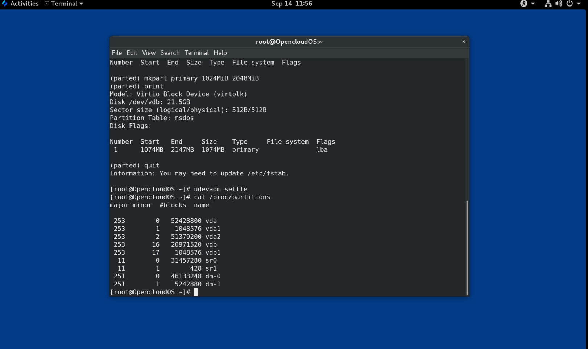
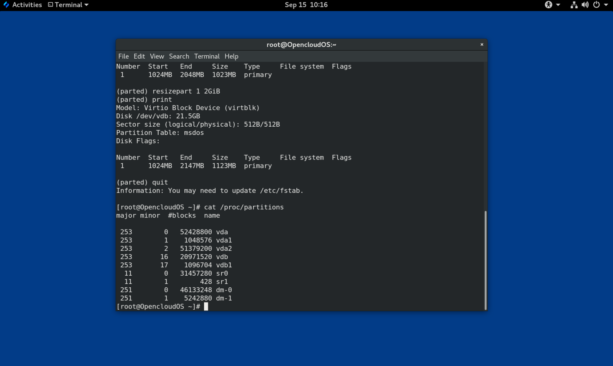
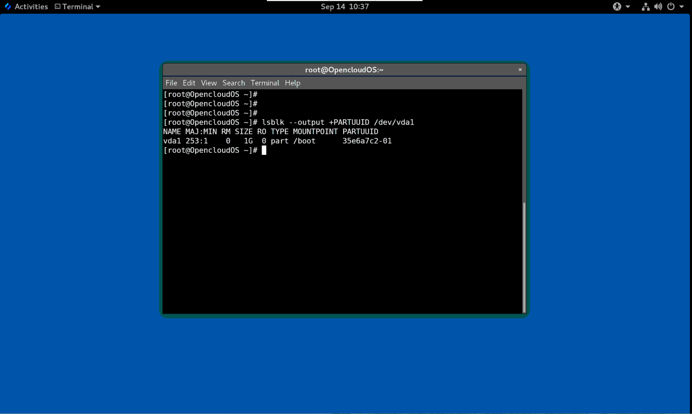

第 1 章 可用的存储选项概述
OpenCloud OS 8 提供了多种本地、远程和基于集群的存储选项。
本地存储意味着存储设备要么安装在系统上，要么直接连接到系统。
通过远程存储，设备可以通过 LAN、互联网或使用光纤通道网络访问设备。 以下高级 OpenCloud OS 存储图描述了不同的存储选项。
图 1.1 OpenCloudOS 存储图

1.1 本地存储概述
OpenCloud OS 8 提供了多种本地存储选项。
基本磁盘管理
使用 parted 和 fdisk，您可以创建、修改、删除和查看磁盘分区。以下是分区布局标准：
主引导记录 (MBR)
它用于基于 BIOS 的计算机。您可以创建主分区、扩展分区和逻辑分区。
GUID 分区表 (GPT)
它使用全局唯一标识符 (GUID) 并提供唯一的磁盘和分区 GUID。
要加密分区，您可以使用 Linux Unified Key Setup-on-disk-format (LUKS)。要加密分区，请在安装过程中选择该选项，并提示输入密码。此密码可解锁加密密钥。
存储消耗选项
Non-Volatile Dual In-line Memory Modules (NVDIMM) 管理
它是内存和存储的结合。您可以在连接到系统的 NVDIMM 设备上启用和管理各种类型的存储。
块存储管理
数据以块的形式存储，其中每个块都有一个唯一的标识符。
文件存储
数据以文件级别存储在本地系统上。可以使用 XFS（默认）或 ext4 在本地访问这些数据，也可以使用 NFS 和 SMB 通过网络访问这些数据。
逻辑卷
逻辑卷管理器 (LVM)
它从物理设备创建逻辑设备。逻辑卷 (LV) 是物理卷 (PV) 和卷组 (VG) 的组合。配置 LVM 包括：
-
从硬盘驱动器创建 PV。
-
从 PV 创建 VG。
-
从 VG 创建 LV，将挂载点分配给 LV。
Virtual Data Optimizer (VDO)
它用于通过使用重复数据删除（deduplication）、压缩和精简配置来减少数据。在 LV 下使用 VDO 有助于：
-
扩展 VDO 卷
-
跨越多个设备生成的 VDO 卷
本地文件系统
XFS
默认的文件系统。
ext4
传统的文件系统。
Stratis
它作为技术预览版提供。 Stratis 是一个支持高级存储功能的混合用户和内核本地存储管理系统。
1.2 远程存储概述
以下是 OpenCloud OS 8 中可用的远程存储选项：
存储连接选项
iSCSI
OpenCloud OS 8 使用 targetcli 工具添加、删除、查看和监控 iSCSI 存储互连。
光纤通道 (FC)
OpenCloud OS 8 提供以下原生光纤通道驱动程序：
-
lpfc
-
qla2xxx
-
Zfcp
Non-volatile Memory Express (NVMe)
允许主机软件应用程序与固态驱动器通信的接口。使用以下类型的光纤传输来通过光纤配置 NVMe：
-
NVMe over fabrics 使用远程直接内存访问(RDMA)。
-
使用光纤通道 (FC) 的 NVMe over Fabrics
设备映射器多路径 (DM Multipath)
允许您将服务器节点和存储阵列之间的多个 I/O 路径配置到单个设备中。这些 I/O 路径是可包含独立电缆、交换机和控制器的物理 SAN 连接。
网络文件系统
- NFS
- SMB
1.3 GFS2 文件系统概述
Global File System 2 (GFS2) 文件系统是一个 64 位对称集群文件系统，它提供共享名称空间并管理共享一个公共块设备的多个节点之间的一致性。 GFS2 文件系统旨在提供尽可能接近本地文件系统的功能集，同时在节点之间强制执行完整的集群一致性。为了实现这一点，节点对文件系统资源采用集群范围的锁定方案。此锁定方案使用 TCP/IP 等通信协议来交换锁定信息。
在少数情况下，Linux 文件系统 API 不允许 GFS2 的集群特性完全透明；例如，在 GFS2 中使用 POSIX 锁的程序应避免使用 GETLK 函数，因为在集群环境中，进程 ID 可能用于集群中的不同节点。然而，在大多数情况下，GFS2 文件系统的功能与本地文件系统的功能相同。
Resilient Storage Add-On 提供 GFS2，它依赖 High Availability Add-On 提供 GFS2 所需的集群管理。
gfs2.ko 内核模块实现了 GFS2 文件系统并加载在 GFS2 集群节点上。
为了从 GFS2 中获得最佳性能，重要的是要考虑来自底层设计的性能问题。就像本地文件系统一样，GFS2 依靠页面缓存来通过本地缓存来提高性能。为了保持集群中节点之间的一致性，缓存控制由 glock 状态机提供。
1.4. Gluster 存储概述
Red Hat Gluster Storage (RHGS) 是一个软件定义的存储平台，可以部署在集群中。它将来自多个服务器的磁盘存储资源聚合到一个全局命名空间中。 GlusterFS 是一个开源分布式文件系统，适用于云和混合解决方案。
卷构成 GlusterFS 的基础并提供不同的要求。每个卷都是 brick 的集合，brick 是基本存储单元，由受信存储池中服务器上的导出目录表示。
以下为可用的 GlusterFS 卷类型：
- 分布式 GlusterFS 卷是默认卷，其中每个文件存储在一个 brick 中，并且文件不能在不同 brick 之间共享。
- 复制的 GlusterFS 卷类型复制用户数据，因此如果一个 brick 出现故障，数据仍然可以访问。
- 分布式复制的 GlusterFS 卷是一种混合卷，它在大量系统上分布副本。它适用于存储可扩展性和高可靠性至关重要的环境。
1.5 Ceph 存储概述
Red Hat Ceph Storage (RHCS) 是一个可扩展的、开放的、软件定义的存储平台，它将最稳定的 Ceph 存储系统版本与 Ceph 管理平台、部署应用程序和支持服务相结合。
Red Hat Ceph Storage 专为云基础架构和 Web 规模对象存储而设计。Red Hat Ceph Storage 集群由以下类型的节点组成：
Red Hat Ceph Storage Ansible 管理节点
此类节点充当之前版本的 Red Hat Ceph Storage 的传统 Ceph 管理节点。此类节点提供以下功能：
- 集中存储集群管理
- Ceph 配置文件和密钥
- （可选）用于在出于安全原因无法访问 Internet 的节点上安装 Ceph 的本地存储库
监控节点
每个监视器节点都运行监视器守护进程 (ceph-mon)，它维护集群映射的副本。集群映射包括集群拓扑。连接到 Ceph 集群的客户端从监视器中检索集群映射的当前副本，这使客户端能够从集群读取数据并将数据写入集群。
重要
Ceph 可以在一台监视器上运行；但是，为了确保生产集群的高可用性，将仅支持具有至少三个监控节点的部署。建议为超过 750 个 OSD 的存储集群部署总共 5 个 Ceph Monitor。
OSD 节点
每个对象存储设备 (OSD) 节点都运行 Ceph OSD 守护进程 (ceph-osd)，它与连接到节点的逻辑磁盘交互。 Ceph 将数据存储在这些 OSD 节点上。
Ceph 可以在使用很少的 OSD 节点（默认为 3 个）的环境中运行。但对于生产环境，自中等范围环境开始（例如，在一个存储集群中包括 50 个 OSD）才可能看到其在性能方面的优势。理想情况下，一个 Ceph 集群有多个 OSD 节点，通过创建 CRUSH 映射允许隔离故障域。
MDS 节点
每个元数据服务器 (MDS) 节点都运行 MDS 守护程序 (ceph-mds)，该守护程序管理与存储在 Ceph 文件系统 (CephFS) 上的文件相关的元数据。 MDS 守护进程还协调对共享集群的访问。
对象网关节点
Ceph 对象网关节点运行 Ceph RADOS 网关守护进程 (ceph-radosgw)，是构建在 librados 之上的对象存储接口，为应用程序提供到 Ceph 存储集群的 RESTful 网关。 Ceph 对象网关支持两个接口：
S3
通过与 Amazon S3 RESTful API 的大部分子集兼容的接口提供对象存储功能。
Swift
通过与 OpenStack Swift API 的大部分子集兼容的接口提供对象存储功能。
第 2 章 使用系统角色管理本地存储
要使用 Ansible 管理 LVM 和本地文件系统(FS)，您可以使用 Storage 角色，这是 OpenCloud OS 中可用的系统角色之一。
使用存储角色可让您自动管理多台机器上的磁盘和逻辑卷上的文件系统，以及系统的版本。
2.1 Storage （存储）角色简介
Storage 角色可以管理：
- 磁盘上未被分区的文件系统
- 完整的 LVM 卷组，包括其逻辑卷和文件系统
使用 Storage 角色，您可以执行以下任务：
- 创建文件系统
- 删除文件系统
- 挂载文件系统
- 卸载文件系统
- 创建 LVM 卷组
- 删除 LVM 卷组
- 创建逻辑卷
- 删除逻辑卷
- 创建 RAID 卷
- 删除 RAID 卷
- 创建带有 RAID 的 LVM 池
- 删除带有 RAID 的 LVM 池
2.2 识别存储设备参数（存储系统角色）
您的存储角色配置仅影响您在以下变量中列出的文件系统、卷和池.
storage_volumes
在所有要管理的未分区磁盘中的文件系统列表。
当前不支持的分区。
storage_pools
要管理的池列表。
目前唯一支持的池类型是 LVM。使用 LVM 时，池代表卷组（VG）。每个池中都有一个要由角色管理的卷列表。对于 LVM，每个卷对应一个带文件系统的逻辑卷（LV）。
2.3 在块存储设备中创建XFS 文件系统的 Ansible playbook 示例
本节提供了一个 Ansible playbook 示例。此 playbook 应用存储角色，来使用默认参数在块设备上创建 XFS 文件系统。
警告
存储角色只能在未分区、整个磁盘或逻辑卷（LV）上创建文件系统。它不能在分区中创建文件系统。
例 2.1 在/dev/vdb上创建 XFS 的playbook
--- - hosts: all vars: storage_volumes: - name: barefs type: disk disks: - vdb fs_type: xfs roles: - rhel-system-roles.storage
- 卷名称（示例中的 barefs ）目前是任意的。存储角色根据 disk: 属性下列出的磁盘设备来识别卷。
- 您可以省略
fs_type: xfs行，因为 XFS 是 OpenCloud OS 中的默认文件系统。- 要在 LV 上创建文件系统，请在
disks:属性下提供 LVM 设置，包括括起来的卷组。详情请参阅 管理逻辑卷 的 Ansible playbook 示例。不要提供到 LV 设备的路径。
2.4 永久挂载系统文件的 Ansible playbook 示例
本节提供了一个 Ansible playbook 示例。此 playbook 应用存储角色用来立即和永久挂载 XFS 文件系统。
例 2.2 将 /dev/vdb 上的文件系统挂载到 /mnt/data 的 playbook
--- - hosts: all vars: storage_volumes: - name: barefs type: disk disks: - vdb fs_type: xfs mount_point: /mnt/data roles: - rhel-system-roles.storage
- 此 playbook 将文件系统添加到
/etc/fstab文件中，并立即挂载文件系统。- 如果
/dev/vdb设备上的文件系统或挂载点目录不存在，则 playbook 会创建它们。
2.5 管理逻辑卷的 Ansible playbook 示例
本节提供了一个 Ansible playbook 示例。此 playbook 应用存储角色在卷组中创建 LVM 逻辑卷。
例 2.3 在 myvg 卷组中创建 mylv 逻辑卷的 playbook
- hosts: all vars: storage_pools: - name: myvg disks: - vda - vdb - vdc volumes: - name: mylv size: 2G fs_type: ext4 mount_point: /mnt roles: - rhel-system-roles.storage
myvg卷组由以下磁盘组成：
/dev/vda/dev/vdb
/dev/vdc如果
myvg卷组已存在，则 playbook 会将逻辑卷添加到卷组。如果
myvg卷组不存在，则 playbook 会创建它。playbook 在
mylv逻辑卷上创建 Ext4 文件系统，并在/mnt上永久挂载文件系统。
2.5 启用在线快丢弃的 Ansible playbook 示例
本节提供了一个 Ansible playbook 示例。此 playbook 应用存储角色用来挂载启用了在线块丢弃的 XFS 文件系统。
例 2.4 一个 playbook，它在
/mnt/data/上启用在线块丢弃功能--- - hosts: all vars: storage_volumes: - name: barefs type: disk disks: - vdb fs_type: xfs mount_point: /mnt/data mount_options: discard roles: - rhel-system-roles.storage
2.7 创建挂载 Ext4 文件系统的 Ansible playbook 示例
本节提供了一个 Ansible playbook 示例。此 playbook 应用存储角色来创建和挂载 Ext4 文件系统。
例 2.5 在
/dev/vdb上创建 Ext4 并挂载到/mnt/data的 playbook--- - hosts: all vars: storage_volumes: - name: barefs type: disk disks: - vdb fs_type: ext4 fs_label: label-name mount_point: /mnt/data roles: - rhel-system-roles.storage
- playbook 在
/dev/vdb磁盘上创建文件系统。- playbook 将文件系统永久挂载在
/mnt/data目录。- 文件系统的标签是
label-name。
2.8 创建和挂载 ext3 文件系统的 Ansible playbook 示例
本节提供了一个 Ansible playbook 示例。此 playbook 应用存储角色来创建和挂载 Ext3 文件系统。
例 2.6 在
/dev/vdb上创建 Ext3 ，并将其挂载在/mnt/data的 playbook--- - hosts: all vars: storage_volumes: - name: barefs type: disk disks: - vdb fs_type: ext3 fs_label: label-name mount_point: /mnt/data roles: - rhel-system-roles.storage
- playbook 在
/dev/vdb磁盘上创建文件系统。- playbook 将文件系统永久挂载在
/mnt/data目录。- 文件系统的标签是
label-name。
2.9 使用存储 OpenCloud OS系统角色对现有 Ext4 或 Ext3 文件系统调整大小的 Ansible playbook 示例
本节提供了一个 Ansible playbook 示例。此 playbook 应用存储角色来调整块设备上现有的 Ext4 或 Ext3 文件系统的大小。
例 2.7 在磁盘上设置单个卷的 playbook
--- - name: Create a disk device mounted on /opt/barefs - hosts: all vars: storage_volumes: - name: barefs type: disk disks: - /dev/vdb size: 12 GiB fs_type: ext4 mount_point: /opt/barefs roles: - rhel-system-roles.storage
- 如果上例中的卷已存在，要调整卷的大小，您需要运行相同的 playbook，使用不同的
size参数值。例如：
例 2.8 在
/dev/vdb上调整ext4大小的 playbook--- - name: Create a disk device mounted on /opt/barefs - hosts: all vars: storage_volumes: - name: barefs type: disk disks: - /dev/vdb size: 10 GiB fs_type: ext4 mount_point: /opt/barefs roles: - rhel-system-roles.storage
- 卷名称（示例中的 barefs）当前是任意的。Storage 角色根据 disk: 属性中列出的磁盘设备标识卷。
注意
在其他文件系统中使用 调整大小 操作可能会破坏您正在使用的设备上的数据
2.10 使用存储 OpenCloud OS 系统角色在 LVM 上对现有文件系统的大小进行调整的 Ansible playbook 示例
本节提供了一个 Ansible playbook 示例。此 playbook 应用存储 OpenCloud OS 系统角色来使用文件系统重新定义 LVM 逻辑卷大小。
警告
在其他文件系统中使用 调整大小 操作可能会破坏您正在使用的设备上的数据。
例 2.9 调整 myvg 卷组中现有 mylv1 和 myvl2 逻辑卷大小的 playbook
--- - hosts: all vars: storage_pools: - name: myvg disks: - /dev/vda - /dev/vdb - /dev/vdc volumes: - name: mylv1 size: 10 GiB fs_type: ext4 mount_point: /opt/mount1 - name: mylv2 size: 50 GiB fs_type: ext4 mount_point: /opt/mount2 - name: Create LVM pool over three disks incude_role: name: rhel-system-roles.storage
此 playbook 调整以下现有文件系统的大小：
mylv1卷上的 Ext4 文件系统挂载在/opt/mount1，大小调整为 10 GiB。
mylv2卷上的 Ext4 文件系统挂载在/opt/mount2，大小调整为 50 GiB。
2.11 使用存储 OpenCloud OS 系统角色创建交换分区的 Ansible playbook 示例
本节提供了一个 Ansible playbook 示例。此 playbook 应用存储角色来创建交换分区（如果不存在的话），或者使用默认参数在块设备上修改交换分区（如果已存在的话）。
例 2.10 创建或修改
/dev/vdb上现有 XFS 的 playbookname: Create a disk device with swap hosts: all vars: storage_volumes:``` - name: swap_fs type: disk disks: - /dev/vdb size: 15 GiB fs_type: swap roles: - rhel-system-roles.storage
- 卷名称（示例中的
swap_fs）目前是任意的。存储角色根据disk:属性下列出的磁盘设备来识别卷。
2.12 使用存储系统角色配置 RAID 卷
使用存储系统角色，您可以使用 Ansible Automation Platform 在 OpenCloud OS 上配置 RAID 卷。在本小节中，您将了解如何使用可用参数设置 Ansible playbook 来配置 RAID 卷以满足您的要求。
前提条件
- Ansible Core 软件包安装在控制机器上。
- 您已在要运行 playbook 的系统上安装了
rhel-system-roles软件包。 - 您有一个清单文件详细描述了您要使用存储系统角色部署 RAID 卷的系统。
流程
- 使用以下内容创建一个新的
playbook.yml文件：
- hosts: all
vars:
storage_safe_mode: false
storage_volumes:
- name: data
type: raid
disks: [vdd, vde, vdf, vdg]
raid_level: raid0
raid_chunk_size: 32 KiB
mount_point: /mnt/data
state: present
roles:
- name: rhel-system-roles.storage
警告
设备名称在某些情况下可能会改变，例如：当您在系统中添加新磁盘时。因此，为了避免数据丢失,我们不建议在 playbook 中使用特定的磁盘名称。
- 可选。验证 playbook 语法。
# ansible-playbook --syntax-check playbook.yml*
- 在清单文件上运行 playbook:
# ansible-playbook -i inventory.file /path/to/file/playbook.yml
2.13 使用存储系统角色使用 RAID 配置 LVM 池
使用 Storage 系统角色，您可以使用 Ansible Automation Platform 在 OpenCloud OS 上使用 RAID 配置 LVM 池。在本小节中，您将了解如何使用可用参数设置 Ansible playbook 来配置使用 RAID 的 LVM 池。
前提条件
- Ansible Core 软件包安装在控制机器上。
- 您已在要运行 playbook 的系统上安装了
rhel-system-roles软件包。 - 您有一个清单文件详细描述了您要使用存储系统角色在其上配置带有 RAID 的 LVM 池的系统。
流程
- 使用以下内容创建一个新的
playbook.yml文件：
- hosts: all
vars:
storage_safe_mode: false
storage_pools:
- name: my_pool
type: lvm
disks: [vdh, vdi]
raid_level: raid1
volumes:
- name: my_pool
size: "1 GiB"
mount_point: "/mnt/app/shared"
fs_type: xfs
state: present
roles:
- name: rhel-system-roles.storage
注意
要创建带有 RAID 的 LVM 池，您必须使用 raid_level 参数指定 RAID 类型。
- 可选。验证 playbook 语法。
# ansible-playbook --syntax-check playbook.yml
- 在清单文件上运行 playbook:
# ansible-playbook -i inventory.file /path/to/file/playbook.yml
2.14 使用存储 OpenClous OS 系统角色在 LVM 上压缩和删除数据重复的 VDO 卷的 Ansible playbook 示例
本节提供了一个 Ansible playbook 示例。此 playbook 应用存储 OpenCloud OS 系统角色来使用虚拟数据优化(VDO)，让卷对逻辑管理器卷(LVM)的进行压缩和删除重复数据操作。
例 2.11 在 myvg 卷组中创建 mylv1 LVM VDO 卷的 playbook
--- - name: Create LVM VDO volume under volume group 'myvg' hosts: all roles: - rhel-system-roles.storage vars: storage_pools: - name: myvg disks: - /dev/vdb volumes: - name: mylv1 compression: true deduplication: true vdo_pool_size: 10 GiB size: 30 GiB mount_point: /mnt/app/shared
在本例中，compression 和 deduplication 都被设置为 true，这里指定使用 VDO。下面描述了这些参数的用法：
deduplication用于删除存储在存储卷上重复的数据。compression用于压缩存储卷上存储的数据，从而增加存储容量。vdo_pool_size指定卷在设备上的实际大小。VDO 卷的虚拟大小由size参数设置。注：由于 Storage 角色使用 LVM VDO，每个池只有一个卷可以使用压缩和删除重复数据。
2.15 使用使用存储系统角色创建 LUKS 加密卷
您可以使用存储角色运行 Ansible playbook 来创建和配置那些使用 LUKS 加密的卷。
前提条件
-
对一个或多个 受管节点 的访问和权限，受管节点 是您要使用加密策略系统角色配置的系统。
-
对控制节点的访问和权限，这是 Ansible Core 配置其他系统的系统。
-
在控制节点上：
-
ansible-core和rhel-system-roles软件包已安装 。
重要
OpenCloud OS 提供对基于 Ansible 的自动化需要 Ansible Engine 的独立 Ansible 存储库的访问权限。Ansible Engine 包含命令行工具，如 ansible、ansible-playbook、连接器（如 docker 和 podman ）以及许多插件和模块。
OpenCloud OS 引入了 Ansible Core（以 ansible-core 软件包的形式提供），其中包含 Ansible 命令行工具、命令以及小型内置 Ansible 插件。
- 列出受管节点的清单文件。
流程
- 使用以下内容创建一个新的
playbook.yml文件：
- hosts: all
vars:
storage_volumes:
- name: barefs
type: disk
disks:
- vdb
fs_type: xfs
fs_label: label-name
mount_point: /mnt/data
encryption: true
encryption_password: your-password
roles:
- rhel-system-roles.storage
- 可选：验证 playbook 语法：
# ansible-playbook --syntax-check playbook.yml
- 在清单文件上运行 playbook:
# ansible-playbook -i inventory.file /path/to/file/playbook.yml
2.16 使用存储 OpenCloud OS 系统角色以百分比形式表示池卷大小的 Ansible playbook 示例
本节提供了一个 Ansible playbook 示例。此 playbook 应用存储系统角色来通过存储池百分比的形式表示逻辑卷管理卷(LVM)的大小。
例 2.12 将卷大小表示为池容量百分比的 playbook
--- - name: Express volume sizes as a percentage of the pool's total size hosts: all roles - rhel-system-roles.storage vars: storage_pools: - name: myvg disks: - /dev/vdb volumes: - name: data size: 60% mount_point: /opt/mount/data - name: web size: 30% mount_point: /opt/mount/web - name: cache size: 10% mount_point: /opt/cache/mount
这个示例将 LVM 卷的大小以存储池容量的百分比表示，例如："60%"。另外，您还可以将 LVM 卷的大小以文件系统中人类可读的类型（如 "10g" 或 "50 GiB"）使用存储池容量的百分比表示。
第 3 章 磁盘分区
要将磁盘划分为一个或多个逻辑区域，请使用磁盘分区工具。它支持对每个分区进行单独管理。
3.1 分区概述
硬盘在分区表中存储有关每个磁盘分区的位置和大小的信息。使用分区表中的信息，操作系统将每个分区视为一个逻辑磁盘。磁盘分区的一些优点包括：
- 减少对物理卷的管理疏忽的可能性
- 确保足够的备份
- 提供高效的磁盘管理
3.2 修改磁盘分区前的注意事项
在创建、删除或调整任何磁盘分区之前，请考虑以下方面:
在设备上，分区表的类型决定了单个分区的最大数量和大小。
最大分区数：
-
在使用 主引导记录(MBR) 分区表格式化的设备上，您可以：
-
最多四个主分区。
-
最多三个主分区，一个扩展分区
- 扩展分区内的多个逻辑分区
-
在使用 GUID 分区表 (GPT) 格式化的设备上，您可以：
-
使用 parted 工具，最多 128 个分区。
- 尽管 GPT 规范通过增加分区表的保留大小来允许更多分区，但 parted 工具限制了 128 个分区所需的区域。
最大分区大小：
-
在使用 主引导记录 (MBR) 分区表格式化的设备上：
-
使用 512b 扇区驱动器时，最大大小为 2 TiB。
-
使用 4k 扇区驱动器时，最大大小为 16 TiB。
-
在使用 GUID 分区表 (GPT) 格式化的设备上：
-
使用 512b 扇区驱动器时，最大大小为 8 ZiB。
- 使用 4k 扇区驱动器时，最大大小为 64 ZiB。
通过使用 parted 工具，您可以使用多个不同的后缀指定分区大小：
-
MiB、GiB 或 TiB
-
大小以 2 的幂表示。
- 分区的起点与大小指定的确切扇区对齐。
-
结束点与指定大小减去 1 个扇区对齐。
-
MB、GB 或 TB :
-
以 10 的指数表示容量。
- 起点和终点在指定单位的一半以内对齐。例如，使用 MB 后缀时为 ±500KB。
注意
本节不涉及特定于 IBM Z 架构的 DASD 分区表。
3.3 分区表类型比较
要在设备上启用分区，请使用不同类型的分区表格式化块设备。下表比较了您可以在块设备上创建的不同类型分区表的属性。
表 3.1 分区表类型
| 分区表 | 最大分区数 | 最大分区大小 |
|---|---|---|
| 主引导记录 (MBR) | 4 个主分区，或 3 个主分区和 1 个扩展分区（带有 12 个逻辑分区） | 2TiB |
| GUID 分区表 (GPT)128 | 8ZiB |
3.4 MBR 磁盘分区
分区表存储在磁盘的最开始，然后再保存任何文件系统或用户数据。对于更清晰的示例，分区表在下图中单独显示。
图 3.1 带有 MBR 分区表的磁盘

如上图所示，分区表分为四个未使用的主分区的四个部分。主分区是硬盘驱动器上仅包含一个逻辑驱动器（或部分）的分区。每个逻辑驱动器都包含定义单个分区所需的信息，这意味着分区表最多可以定义四个主分区。
每个分区表条目都包含分区的重要特征：
- 磁盘上分区开始和结束的点
- 分区的状态，因为只有一个分区可以被标记为
active - 分区类型
起点和终点定义了磁盘上分区的大小和位置。一些操作系统引导加载程序使用 active 标志。这意味着分区中标记为“活动”的操作系统已启动。
类型是一个数字，用于标识分区的预期使用情况。一些操作系统使用分区类型来：
- 表示特定的文件系统类型
- 将分区标记为与特定操作系统相关联
- 指示分区包含可引导的操作系统
下图显示了具有单个分区的驱动器示例。在本例中，第一个分区被标记为 DOS 分区类型：
图 3.2 只有一个分区的磁盘

3.5 扩展 MBR 分区
如果需要，要创建其他分区，请将类型设置为 extended 。
扩展分区类似于磁盘驱动器。它有自己的分区表，它指向一个或多个逻辑分区，完全包含在扩展分区中。下图显示了含有两个主分区的磁盘驱动器，以及一个包含两个逻辑分区的扩展分区，以及一些未分区的可用空间。
图 3.3 具有两个主 MBR 分区和一个扩展 MBR 分区的磁盘

您最多只能有四个主分区和扩展分区，但对逻辑分区的数量没有固定限制。作为 Linux 中的限制访问分区，单个磁盘驱动器最多允许 15 个逻辑分区。
3.6 MBR 分区类型
下表列出了一些最常用的 MBR 分区类型和表示它们的十六进制数字。
表 3.2 MBR 分区类型
| MBR 分区类型 | 值 | MBR 分区类型 | 值 |
|---|---|---|---|
| 空 | 00 | Novell Netware 386 | 65 |
| DOS 12-bit FAT | 01 | PIC/IX | 75 |
| XENIX root | O2 | Old MINIX | 80 |
| XENIX user | O3 | Linux/MINUX | 81 |
| DOS 16-bit ⇐ 32 | 04 | Linux swap | 82 |
| Extended | 05 | Linux native | 83 |
| DOS 16-bit >=32 | 06 | Linux extended | 85 |
| OS/2 HPFS | 07 | Amoeba | 93 |
| AIX | 08 | Amoeba BBT | 94 |
| AIX bootable | 09 | BSD/386 | a5 |
| OS/2 Boot Manager | 0a | OpenBSD | a6 |
| Win95 FAT32 | 0b | NEXTSTEP | a7 |
| Win95 FAT32 (LBA) | 0c | BSDI fs | b7 |
| Win95 FAT16 (LBA) | 0e | BSDI swap | b8 |
| Win95 Extended (LBA) | 0f | Syrinx | c7 |
| Venix 80286 | 40 | CP/M | |
| Novell | 51 | DOS access | e1 |
| PRep Boot | 41 | DOS R/O | e3 |
| GNU HURD | 63 | DOS secondary | f2 |
| Novell Netware 286 | 64 | BBT | ff |
3.7 GUID 分区表
GUID 分区表 (GPT) 是一种基于全局唯一标识符 (GUID) 的分区方案。
GPT 处理 Mater 引导记录 (MBR) 分区表的限制。 MBR 分区表不能处理大于 2 TiB 的存储，大约等于 2.2 TB。相反，GPT 支持更大容量的硬盘。使用 512b 扇区驱动器时，最大可寻址磁盘大小为 8 ZiB；使用 4096b 扇区驱动器时，最大可寻址磁盘大小为 64 ZiB。此外，默认情况下，GPT 最多支持创建 128 个主分区。通过为分区表分配更多空间来扩展主分区的最大数量。
注意
GPT 具有基于 GUID 的分区类型。某些分区需要特定的 GUID。例如，可扩展固件接口 (EFI) 引导加载程序的系统分区需要 GUID
C12A7328-F81F-11D2-BA4B-00A0C93EC93B。
GPT 磁盘使用逻辑块寻址 (LBA) 和分区布局，如下所示：
-
为了向后兼容 MBR 磁盘，系统为 MBR 数据保留 GPT 的第一个扇区 (LBA 0)，并应用名称“protective MBR”。
-
主要 GPT
-
标头从设备的第二个逻辑块 (LBA 1) 开始。标头包含磁盘 GUID、主分区表的位置、从属 GPT 标头的位置、自身的 CRC32 校验和以及主分区表。它还指定表上的分区条目数。
-
默认情况下，主 GPT 包含 128 个分区条目。每个分区都有一个 128 字节的条目大小、一个分区类型 GUID 和一个唯一的分区 GUID。
-
二级 GPT
-
对于恢复，当主分区表格损坏时，备份表非常有用。
-
磁盘的最后一个逻辑扇区包含二级 GPT 标头并恢复 GPT 信息（如果主标头损坏）。
-
它包含：
- 磁盘 GUID
- 二级分区表和主 GPT 标头的位置
- 自身的 CRC32 校验和
- 二级分区表
- 可能的分区条目数
图 3.4 带有 GUID 分区表的磁盘

重要
对于在 GPT 磁盘上成功安装引导装载程序，必须存在 BIOS 引导分区。只有当磁盘已包含 BIOS 引导分区时，才可以重复使用。这包括 Anaconda 安装程序初始化的磁盘。
3.8 分区类型
有多种管理分区类型的方法：
-
fdisk工具通过指定十六进制代码来支持所有分区类型。 -
systemd-gpt-auto-generator是一个单元生成器工具，它使用分区类型来自动识别和挂载设备。 -
parted工具使用标志映射分区类型。parted工具仅处理某些分区类型，例如 LVM、swap 或 RAID。parted工具支持设置以下标志： -
boot rootswaphiddenraidlvmlbalegacy_bootirstesppalo
parted 工具（可选）在创建分区时接受文件系统类型参数。如需所需条件的列表，请参阅使用 parted 创建分区。使用值来：
- 在 MBR 中设置分区标记。
- 在 GPT 中设定分区 UUID 类型。例如，
swap、fat或hfs文件系统类型设置不同的 GUID。默认值为 Linux Data GUID。
参数不会修改分区中的文件系统。它只会区分受支持的标志和 GUID。
支持以下文件系统类型：
xfsext2ext3ext4fat16fat32hfshfs+linux-swapntfsReiserFS
注意
OpenCloud OS 8 中唯一支持的本地文件系统是
ext4和xfs。
3.9 分区命名方案
OpenCloud OS 使用基于文件的命名方案，格式为 /dev/xxyN。
设备和分区名称由以下结构组成：
/dev/
包含所有设备文件的目录的名称。硬盘包含分区，因此代表所有可能分区的文件位于 /dev 中。
xx
分区名的前两个字母标明包含该分区的设备类型。
y
这个字母标明包含分区的特定设备。例如： /dev/sda 用于第一个硬盘，第二个硬盘为 /dev/sdb。您可以在超过 26 个驱动器的系统中使用更多字母，例如 /dev/sdaa1。
N
最后的字母代表分区的数字。前四个（主分区或扩展分区或扩展分区）编号为 1 到 4。逻辑分区从 5 开始.例如，/dev/sda3 是第一个硬盘上的第三个主分区或扩展分区，/dev/sdb6 是第二个硬盘上的第二个逻辑分区。驱动器分区编号只适用于 MBR 分区表。请注意，N 并不总是意味着分区。
注意
即使 OpenCloud OS 可以识别和引用 所有类型的磁盘分区，它可能无法读取文件系统，因此无法访问分区类型中保存的数据。然而，在很多情况下，成功访问专用于另一个操作系统的分区中的数据是可能的。
3.10 挂载点和磁盘分区
在 OpenCloud OS 中，每个分区形成存储的一部分，需要支持一组文件和目录。挂载分区会导致该分区的存储可用，从指定目录开始，称为 挂载点。
例如：如果分区 /dev/sda5 挂载到 /usr/ ，这意味着 /usr/ actually 下的所有文件和目录都位于 /dev/sda5 中。文件 /usr/share/doc/FAQ/txt/Linux-FAQ 驻留在 /dev/sda5 中，而文件 /etc/gdm/custom.conf 则不行。
继续这个示例，也可以将 /usr/ 下的一个或多个目录作为其他分区的挂载点。例如： /usr/local/man/whatis 位于 /dev/sda7 上，而不是位于 /dev/sda5 上，如果 /usr/local 包含挂载的 /dev/sda7 分区。
第 4 章 分区入门
使用磁盘分区将磁盘分成一个或多个逻辑区域，这些区域可以单独在每个分区上工作。硬盘在分区表中保存每个磁盘分区的位置和大小信息。使用表，每个分区然后显示为操作系统的逻辑磁盘。然后您可以在这些独立磁盘中读取和写入。
4.1 使用parted在磁盘上创建分区表
使用 parted 工具可以更轻松地使用分区表格式化块设备。
警告
使用分区表格式化块设备会删除设备上存储的所有数据。
流程
- 启动交互式
partedshell：
# parted block-device
- 判断设备上是否已经存在分区表：
# (parted) print
如果设备已经包含分区，它们将在以下步骤中被删除。
- 创建新的分区表：
# (parted) mklabel table-type
-
将 table-type 替换为预期的分区表类型：
- 用于 MBR 的
msdos - 用于 GPT 的
gpt
- 用于 MBR 的
例 4.1 创建 GUID 分区表 (GPT) 表
要在磁盘上创建 GPT 表，请使用：
# (parted) mklabel gpt
输入此命令后，更改开始应用。
4.查看分区表确认是否创建：
# (parted) print
- 退出
partedshell：
# (parted) quit

4.2 用parted查看分区表
显示块设备的分区表以查看分区布局和有关各个分区的详细信息。您可以使用 parted 工具查看块设备上的分区表。
流程
- 启动
parted工具。例如，以下输出列出了设备/dev/vda：
# parted /dev/vda
- 查看分区表：
(parted) print
Model: Virtio Block Device (virtblk)
Disk /dev/vda: 53.7GB
Sector size (logical/physical): 512B/512B
Partition Table: msdos
Disk Flags:
Number Start End Size Type File system Flags
1 1049kB 1075MB 1074MB primary xfs boot
2 1075MB 53.7GB 52.6GB primary lvm
- 可选：切换到您接下来要检查的设备：
# (parted) select block-device
有关打印命令输出的详细说明，请参见以下内容：
Virtio Block Device (virtblk)：磁盘类型、制造商、型号和接口。
Disk /dev/vda: 53.7GB： 块设备的文件路径和存储容量。
Partition Table: msdos：磁盘标签类型。
Number： 分区号。例如，次要编号为 1 的分区对应于 /dev/vda1。
Start 和 End： 设备上分区开始和结束的位置。
Type： 有效类型是metadata、free、primary、extended 或 logical
File system： 文件系统类型。如果设备的 File system 没有显示任何值，这意味着它的文件系统类型是未知的。 parted 工具无法识别加密设备上的文件系统。
Flags：列出为分区设置的标签。可用的标签是 boot、root、swap、hidden、raid、lvm 或 lba。
4.3 使用parted创建分区
作为系统管理员，您可以使用 parted 工具在磁盘上创建新分区。
注意
所需的分区是
swap、/boot/和/(root)。
前提条件
- 磁盘上的分区表。
- 如果您要创建的分区大于 2TiB，请使用 GUID 分区表 (GPT) 格式化磁盘。
流程
- 启动 parted 工具：
# parted block-device
- 查看当前分区表是否有足够的可用空间：
# (parted) print
-
如果没有足够的可用空间，请调整分区大小。
-
从分区表中确定：
- 新分区的起点和终点。
- 在 MBR 上，它应该是什么分区类型。
-
创建新分区：
# (parted) mkpart part-type name fs-type start end
- 将 part-type 替换为
primary、logical或extended。这仅适用于 MBR 分区表。 - 将 name 替换为任意分区名称。这是 GPT 分区表所必需的。
- 将 fs-type 替换为
xfs、ext2、ext3、ext4、fat16、fat32、hfs、hfs+、linux-swap、ntfs或reiserfs。 fs-type 参数是可选的。请注意，parted工具不会在分区上创建文件系统。 - 将
start和end替换为确定分区起点和终点的大小，从磁盘的开头开始计数。您可以使用大小后缀，例如512MiB、20GiB或1.5TiB。默认大小以兆字节为单位。
例 4.2 创建一个小的主分区
要在 MBR 表上创建从 1024MiB 到 2048MiB 的主分区，请使用：
# (parted) mkpart primary 1024MiB 2048MiB
输入命令后更改开始应用。
- 查看分区表，确认创建的分区在分区表中，分区类型、文件系统类型、大小都正确：
# (parted) print
- 退出
partedshell：
# (parted) quit
- 注册新的设备节点：
# udevadm settle
- 验证内核是否识别新分区：
# cat /proc/partitions

4.4 使用 fdisk 设置分区类型
您可以使用 fdisk 工具设置分区类型或标志。
前提条件
- 磁盘上的一个分区。
流程
- 启动交互式
fdiskshell：
# fdisk block-device
- 查看当前的分区表以确定副分区号码：
Command (m for help): print
您可以在 Type 列中看到当前的分区类型及其对应的类型 ID（在 Id 列中）。
- 输入分区类型命令并使用它的副号码选择分区：
Command (m for help): type
Partition number (1,2,3 default 3): 2
- 可选：查看十六进制代码列表：
Hex code (type L to list all codes): L
- 设置分区类型：
Hex code (type L to list all codes): 8e
- 编写更改并退出 fdisk shell：
Command (m for help): write
The partition table has been altered.
Syncing disks.
- 验证您的更改：
# fdisk --list block-device
4.5 使用parted调整分区大小
使用 parted 工具，扩展分区以利用未使用的磁盘空间，或缩小分区以将其容量用于不同目的。
前提条件
- 在收缩分区之前备份数据。
- 如果您要创建的分区大于 2TiB，请使用 GUID 分区表 (GPT) 格式化磁盘。
- 如果要收缩分区，首先要收缩文件系统，使其不大于调整后的分区。
注意
XFS 不支持收缩。
流程
- 启动
parted工具：
# parted block-device
- 查看当前分区表：
# (parted) print
从分区表中决定： - 分区的次要编号。
- 调整大小后现有分区的位置及其新的结束点。
- 调整分区大小：
# (parted) resizepart 1 2GiB
- 将确定要调整大小的分区的新结束点的大小替换为 2 ，从磁盘的开头开始计数。您可以使用大小后缀，例如
512MiB、20GiB或1.5TiB。默认大小以兆字节为单位。 - 查看分区表，确认调整大小的分区在大小正确的分区表中：
# (parted) print
- 退出
partedshell：
# (parted) quit
- 验证内核是否注册了新分区：
# cat /proc/partitions
- 可选：如果您扩展了分区，也扩展其上面的文件系统。


4.6 使用parted删除分区
使用 parted 工具，您可以删除磁盘分区以释放磁盘空间。
警告
删除分区会删除该分区上存储的所有数据。
流程
- 启动交互式
partedshell：
# parted block-device
- 查看当前分区表以确定要删除的分区的次要编号：
# (parted) print
- 删除分区：
# (parted) rm minor-number
- 将 minor-number 替换为要删除的分区的次要编号。
输入此命令后，更改立即开始应用。
- 验证您是否已从分区表中删除该分区：
# (parted) print
- 退出
partedshell：
# (parted) quit
- 验证内核是否已删除分区的注册信息：
# cat /proc/partitions
-
如果存在分区，则从
/etc/fstab文件中删除分区。找到声明删除分区的行，并将其从文件中删除。 -
重新生成挂载单元，以便您的系统注册新的
/etc/fstab配置：
# systemctl daemon-reload
- 如果您删除了交换分区或 LVM 分区，请从
/etc/default/grub文件中的内核命令行中删除对该分区的所有引用，然后重新生成 GRUB 配置： - 在基于 BIOS 的系统上：
# grub2-mkconfig --output=/etc/grub2.cfg
- 在基于 UEFI 的系统上：
# grub2-mkconfig --output=/etc/grub2-efi.cfg
initramfs 文件系统：
```
# dracut --force --verbose
```
第 5 章 重新分区磁盘的策略
磁盘重新分区的方法有很多。包括：
- 有未分区的空闲空间可用。
- 有一个未使用的分区可用。
- 活跃使用的分区中有可用的空间。
注意
为了清楚起见，以下示例进行了简化，并不反映实际安装 OpenCloud OS 时的确切分区布局。
5.1 使用未分区的可用空间
已定义且不跨越整个硬盘的分区会保留不属于任何已定义分区的未分配空间。下图显示了这种情况。
图 5.1 具有未分区可用空间的磁盘

第一个图展示了一个带有一个主分区的磁盘以及带有未分配空间的未定义分区。第二个图表示了具有两个已定义分区并分配空间的磁盘。
未使用的硬盘也属于这种类型。唯一的区别是，所有的空间都不是任何一个已定义分区的一部分。
在新磁盘上，您可以从未使用的空间中创建必要的分区。大多数预安装的操作系统都被配置为占用磁盘驱动器上的所有可用空间。
5.2 使用未使用分区中的空间
在以下示例中，第一个图表表示具有未使用分区的磁盘。第二张图表示为 Linux 分配未使用的分区。
图 5.2 具有未使用分区的磁盘

要使用分配给未使用分区的空间，请删除该分区，然后改为创建大小合适的 Linux 分区。或者，在安装过程中，删除未使用的分区并手动创建新分区。
5.3 使用活跃分区的可用空间
此过程可能难以管理，因为在已经使用的活跃分区中包含所需的可用空间。在大多数情况下，预装软件的计算机硬盘包含一个较大的分区用于保存操作系统和数据。
警告
如果要在活动分区上使用操作系统 (OS)，则必须重新安装操作系统。请注意，某些包含预装软件的计算机不包含用于重新安装原始操作系统的安装介质。在销毁原始分区和操作系统安装之前，请检查这是否适用于您的操作系统。
要选择使用可用空间，您可以使用破坏性或非破坏性重新分区的方法。
5.3.1 破坏性重新分区
破坏性重新分区会破坏硬盘上的分区并创建几个较小的分区。从原始分区备份任何需要的数据，因为此方法会删除完整的内容。
为现有操作系统创建较小的分区后，您可以：
- 重新安装软件。
- 恢复您的数据。
- 开始您的 OpenCloud OS 安装。
下图是使用破坏性重新分区方法的简化形式。
图 5.3 磁盘上的破坏性重新分区操作
警告
此方法会删除之前存储在原始分区中的所有数据。
5.3.2 非破坏性重新分区
非破坏性重新分区调整分区大小，不会丢失任何数据。此方法是可靠的，但在大型驱动器上需要更长的处理时间。
以下列出了可以帮助启动非破坏性重新分区的方法。
- 压缩现有数据
某些数据的存储位置无法更改。这可以防止将分区大小调整到所需大小，并最终导致破坏性重新分区。压缩现有分区中的数据可以帮助您根据需要调整分区大小。它还有助于最大限度地利用可用空间。
下图是此过程的简化形式。
图 5.4 磁盘上的数据压缩
为避免任何可能的数据丢失，请在继续压缩过程之前创建备份。
- 调整现有分区的大小
通过调整现有分区的大小，您可以释放更多空间。根据您的软件调整大小，结果可能会有所不同。在大多数情况下，您可以创建与原始分区相同类型的新未格式化分区。
调整大小后采取的步骤可能取决于您使用的软件。在以下示例中，最好的做法是删除新的 DOS（Disk Operating System）分区，创建一个 Linux 分区。在开始调整大小过程之前，验证是否最适合您的硬盘。
图 5.5 在磁盘上调整分区大小

- 可选：创建新分区
一些调整大小的软件支持基于 Linux 的系统。在这种情况下，调整大小后无需删除新创建的分区。之后创建新分区取决于您使用的软件。
下图表示创建新分区之前和之后的磁盘状态。
图 5.6 带有最终分区配置的磁盘
第 6 章 持久性命名属性概述
作为系统管理员，您需要使用持久性命名属性来引用存储卷，以构建在多个系统启动时更可靠的存储设置。
6.1 非持久性命名属性的缺点
OpenCloud OS 提供了多种识别存储设备的方法。在使用时务必要使用正确的选项来识别每个设备，以避免无意中访问错误的设备，尤其是在安装到驱动器或重新格式化驱动器时。
传统上，在 Linux 上使用 /dev/sd(major number)(minor number) 形式的非持久名称来指代存储设备。当检测到每个设备时，会为其分配主要和次要编号范围以及相关的 sd 名称。这意味着如果设备检测的顺序发生变化，主次编号范围之间的关联以及相关的 sd 名称可能会发生变化。
在以下情况下可能会发生这种排序更改：
- 系统引导过程的并行化会在每次系统引导时以不同的顺序检测存储设备。
- 磁盘无法启动或响应 SCSI 控制器。这导致正常设备探测器无法检测到它。系统无法访问该磁盘，并且后续设备将具有其主要和次要编号范围，并且其相关的
sd名称会向下移动。例如，如果未检测到通常称为vdb的磁盘，则通常称为vdc的磁盘将改为显示为vdb。 - SCSI 控制器（主机总线适配器或 HBA）无法初始化，导致无法检测到连接到该 HBA 的所有磁盘。任何连接到随后探测的 HBA 的磁盘都被分配了不同的主要和次要编号范围，以及不同的关联
sd名称。 - 如果系统中存在不同类型的 HBA，则驱动程序初始化的顺序会发生变化。导致这些 HBA 的磁盘会以不同的顺序被检测到。如果将 HBA 连接到系统上的不同 PCI 插槽时也可能会发生这种情况。
- 使用光纤通道、iSCSI 或 FCoE 适配器连接到系统的磁盘可能在探测存储设备时无法访问，例如，由于存储阵列或中间交换机断电。如果存储阵列在线所需的时间比系统启动所需的时间长，则系统在电源故障后重新启动时可能会发生这种情况。尽管某些光纤通道驱动程序支持指定持久性 SCSI 目标 ID 到 WWPN 映射的机制，但这不会保留主要和次要编号范围以及相关的
sd名称，它只提供一致的 SCSI 目标 ID 号。
这些原因使得在引用设备(例如在 /etc/fstab 文件中的)时不希望使用主要和次要编号范围或相关的 sd 名称.可能会挂载错误的设备并导致数据损坏。
然而，即使使用其他机制（例如设备报告错误时），仍然需要引用 sd 名称。这是因为 Linux 内核在有关设备的内核消息中使用 sd 名称（以及 SCSI 主机/通道/目标/LUN 元组）。
6.2 文件系统和设备标识符
本节解释了标识文件系统和块设备的持久属性之间的区别。
文件系统标识符
文件系统标识符与在块设备上创建的特定文件系统绑定。标识符也作为文件系统的一部分保存。如果将文件系统复制到不同的设备，它仍然带有相同的文件系统标识符。另一方面，如果您重写设备，例如使用 mkfs 工具对其进行格式化，则设备会丢失该属性。
文件系统标识符包括：
- 唯一标识符 (UUID)
- 标签
设备标识符
设备标识符与块设备绑定：例如磁盘或分区。如果您重写设备，例如使用 mkfs 工具对其进行格式化，则设备会保留该属性，因为它没有存储在文件系统中。
设备标识符包括：
- 通用标识符 (WWID)
- 分区 UUID
- 序列号
建议
- 某些文件系统（例如逻辑卷）跨越多个设备。建议使用文件系统标识符而不是设备标识符来访问这些文件系统。
6.3 使用 /dev/disk/ 中的 udev 机制管理的设备名称
本节列出了 udev 服务在 /dev/disk/ 目录中提供的不同类型的持久命名属性。
udev 机制用于 Linux 中的所有类型的设备，而不仅仅是存储设备。对于存储设备，OpenCloud OS 包含在 /dev/disk/ 目录中创建符号链接的 udev 规则。这使您可以通过以下方式指向存储设备：
- 其内容
- 唯一标识符
- 它们的序列号。
尽管 udev 命名属性是持久的，因为它们不会在系统重新启动后自行更改，但有些也是可配置的。
6.3.1 文件系统标识符
/dev/disk/by-uuid/ 中的 UUID 属性
此目录中的条目提供了一个符号链接名称，该名称通过保存在设备上的内容（即数据）中的唯一标识符 (UUID) 来指向存储设备。例如：
/dev/disk/by-uuid/15cd6646-bff7-4bbd-90a3-b6f232047a84
您可以使用 UUID 使用以下语法来引用 /etc/fstab 文件中的设备：
UUID=15cd6646-bff7-4bbd-90a3-b6f232047a84
您可以在创建文件系统时配置 UUID 属性，也可以稍后更改它。
/dev/disk/by-label/ 中的 Label 属性
此目录中的条目提供了一个符号链接名称，该名称通过保存在设备上的内容（即数据）中的label来指向存储设备。
例如：
/dev/disk/by-label/opencloudos-8-5-x86_64-dvd
您可以使用以下语法使用标签来引用 /etc/fstab 文件中的设备：
LABEL=opencloudos-8-5-x86_64-dvd
您可以在创建文件系统时配置 Label 属性，也可以稍后更改它。

6.3.2 设备标识符
/dev/disk/by-id/ 中的 WWID 属性
全球标识符 (WWID) 是 SCSI 标准要求所有 SCSI 设备提供的持久的且独立于系统的标识符。 保证WWID 标识符对于每个存储设备都是唯一的，并且独立于用于访问设备的路径。标识符是设备的属性，但不存储在设备上的内容（即数据）中。
可以通过发出 SCSI 查询来检索设备标识重要产品数据（第 0x83 页）或单元序列号（第 0x80 页）来获取此标识符。
OpenCloud OS 自动维护从基于 WWID 的设备名称到该系统上当前 /dev/sd 名称的正确映射。应用程序可以使用 /dev/disk/by-id/ 名称来引用磁盘上的数据，即使设备的路径发生变化，甚至在从不同系统访问设备时也是如此。
例 6.1 WWID 映射
WWID 符号链接 非持久设备 备注 /dev/disk/by-id/scsi-3600508b400105e210000900000490000/dev/vda具有页面 0x83标识符的设备/dev/disk/by-id/scsi-SSEAGATE_ST373453LW_3HW1RHM6/dev/vdb具有页面 0x80标识符的设备/dev/disk/by-id/ata-SAMSUNG_MZNLN256HMHQ-000L7_S2WDNX0J336519-part3/dev/vdc3磁盘分区
除了系统提供的这些持久化名称之外，您还可以使用 udev 规则来实现持久化名称映射到存储的 WWID 中。
/dev/disk/by-partuuid 中的分区 UUID 属性
分区 UUID (PARTUUID) 属性标识 GPT 分区表定义的分区。
例 6.2 分区 UUID 映射
PARTUUID 符号链接 非持久性设备 /dev/disk/by-partuuid/35e6a7c2-01/dev/vda1/dev/disk/by-partuuid/35e6a7c2-02/dev/vda2
/dev/disk/by-path/ 中的 Path 属性
此属性通过用于访问该设备的硬件路径来提供一个指向存储设备的符号链接。
如果硬件路径的任何部分（例如 PCI ID、目标端口或 LUN 号）发生更改，则 Path 属性会失败。因此 Path 属性是不可靠的。但是 Path 属性在以下场景中可能很有用：
- 您需要识别您要替换的磁盘。
- 您计划在特定位置的磁盘上安装存储服务。
6.4 带有 DM 多路径的通用标识符
本节介绍设备映射器多路径配置中通用标识符 (WWID) 和非持久设备名称之间的映射。
如果从系统到设备有多条路径，DM Multipath 使用 WWID 来检测设备。然后 DM Multipath 在 /dev/mapper/wwid 目录中显示单个“pseudo-device”，例如 /dev/mapper/3600508b400105df70000e00000ac0000。
multipath -l 命令显示到非持久性标识符的映射：
Host:Channel:Target:LUN/dev/sd名称major:minor号
例 6.3 多路径配置中的 WWID 映射
multipath -l命令的一个输出示例：3600508b400105df70000e00000ac0000 dm-2 vendor,product [size=20G][features=1 queue_if_no_path][hwhandler=0][rw] \_ round-robin 0 [prio=0][active] \_ 5:0:1:1 vdc 8:32 [active][undef] \_ 6:0:1:1 vdg 8:96 [active][undef] \_ round-robin 0 [prio=0][enabled] \_ 5:0:0:1 vdb 8:16 [active][undef] \_ 6:0:0:1 vdf 8:80 [active][undef]
DM Multipath 自动维护每个基于 WWID 的设备名称到系统上相应 /dev/sd 名称的正确映射。这些名称在路径更改时保持不变，并且在从不同系统访问设备时保持一致。
当使用 DM Multipath 的 user_friendly_names 功能时，WWID 被映射为 /dev/mapper/mpathN 形式的名称。默认情况下，此映在文件 /etc/multipath/bindings 中维护。只要维护该文件，这些 mpathN 名称就一直存在。
重要
如果您使用
user_friendly_names，则需要额外的步骤才能在集群中获得一致的名称。
6.5 udev 设备命名规则的限制
以下是 udev 命名规则的一些限制：
- 执行查询时可能无法访问设备，因为当
udev处理udev规则时，udev机制可能依赖于查询存储设备的能力。当设备不在服务器中时，光纤通道、iSCSI 或 FCoE 存储设备更可能发生这种情况。 - 内核可能随时发送
udev，从而导致规则被处理，并可能导致设备无法访问时，/dev/disk/by-*/链接被删除。 - 在
udev产生和处理时（如检测到大量设备），用户空间udevd服务花费一些时间来处理每个事件的规则时，可能会有延迟。这可能会导致内核检测到设备与/dev/disk/by-*/名称可用之间存在延迟。 - 规则调用的外部程序（例如
blkid）可能会在短时间内打开设备，从而使设备无法用于其他用途。 /dev/disk/中udev机制管理的设备名称可能会在主版本之间发生变化，需要您更新链接。
6.6 列出持久命名属性
此过程描述如何找出非持久性存储设备的持久命名属性。
流程
- 要列出 UUID 和 Label 属性，请使用
lsblk工具：
$ lsblk --fs storage-device
例如：
例 6.4 查看文件系统的 UUID 和标签
$ lsblk --fs /dev/vda1 NAME FSTYPE LABEL UUID MOUNTPOINT vda1 xfs 15cd6646-bff7-4bbd-90a3-b6f232047a84 /boot
- 要列出 PARTUUID 属性，请使用
lsblk工具以及--output +PARTUUID选项：
$ lsblk --output +PARTUUID
例如：
例 6.5 查看分区的 PARTUUID 属性
$ $ lsblk --output +PARTUUID /dev/vda1 NAME MAJ:MIN RM SIZE RO TYPE MOUNTPOINT PARTUUID vda1 253:1 0 1G 0 part /boot 35e6a7c2-01

- 要列出 WWID 属性，请检查
/dev/disk/by-id/目录中符号链接的目标。例如：
例 6.6 查看系统上所有存储设备的 WWID
$ file /dev/disk/by-id/* /dev/disk/by-id/ata-QEMU_DVD-ROM_bef07694-82b3-402e-b: symbolic link to ../../sr0 /dev/disk/by-id/ata-QEMU_DVD-ROM_QM00002: symbolic link to ../../sr1 /dev/disk/by-id/dm-name-opencloudos-root: symbolic link to ../../dm-0 /dev/disk/by-id/dm-name-opencloudos-swap: symbolic link to ../../dm-1 /dev/disk/by-id/dm-uuid-LVM-vF7qTdo3J0KWKmyBiHI6dCwkf7Z0K8rcbu8oaxySo5oqcytCMTd5Cb3RX2rBt1QH: symbolic link to ../../dm-1 /dev/disk/by-id/dm-uuid-LVM-vF7qTdo3J0KWKmyBiHI6dCwkf7Z0K8rcjTTWKI2DYXGWm6tfwdHIxHzvRUhO38bv: symbolic link to ../../dm-0 /dev/disk/by-id/lvm-pv-uuid-O0JKeK-uPCw-cUa0-KOE5-KfiT-HjIM-3MhRiy: symbolic link to ../../vda2 /dev/disk/by-id/virtio-2e46d4c6-b145-4250-8: symbolic link to ../../vdb /dev/disk/by-id/virtio-326e8248-eb33-4f06-8: symbolic link to ../../vda /dev/disk/by-id/virtio-326e8248-eb33-4f06-8-part1: symbolic link to ../../vda1 /dev/disk/by-id/virtio-326e8248-eb33-4f06-8-part2: symbolic link to ../../vda2

6.7 修改持久命名属性
此步骤描述如何更改文件系统的 UUID 或 Label persistent naming 属性。
注意
更改
udev属性发生在后台，可能需要很长时间。udevadm set命令会等待更改完全注册，这样可以确保您的下一个命令能够正确使用新属性。
在以下命令中：
- 将 new-uuid 替换为你要设置的 UUID；例如，
d52531b8-ae6f-443b-9b9a-16cbf1e6a3f4。您可以使用uuidgen命令生成 UUID。 - 用标签替换 new-label ；例如，
backup_data。
前提条件
- 如果要修改 XFS 文件系统的属性，请先卸载它。
流程
- 要更改 XFS 文件系统的 UUID 或 Label 属性，请使用
xfs_admin工具：
# xfs_admin -U new-uuid -L new-label storage-device
# udevadm settle
- 要更改 ext4、ext3 或 ext2 文件系统的 UUID 或标签属性，请使用
tune2fs工具：
# tune2fs -U new-uuid -L new-label storage-device
# udevadm settle
- 要更改交换卷的 UUID 或标签属性，请使用
swaplabel工具：
# swaplabel --uuid new-uuid --label new-label swap-device
# udevadm settle
第 7 章 使用 NVDIMM 持久性内存存储
作为系统管理员，您可以在连接到您的系统的非线性内存模块(NVDIMM)设备上启用和管理各种类型的存储。
7.1 NVDIMM 持久内存技术
NVDIMM 持久内存（也称为存储类内存或 pmem ）是内存和存储的组合。
NVDIMM 将存储的持久性与低访问延迟和高带宽动态 RAM(DRAM)相结合：
- NVDIMM 存储是字节可寻址的，因此可使用 CPU 负载和存储说明访问它。除了
read（）和write（）系统调用（ 访问传统基于块的存储）外，NVDIMM 还支持直接负载和存储编程模型。 - NVDIMM 的性能特征与访问延迟非常低的 DRAM 非常低，通常以十亿纳秒为单位。
- 当电源关闭时，保存在 NVDIMM 中的数据（如存储数据）会被保留。
- 直接访问(DAX)技术使应用程序能够直接访问内存映射存储，无需通过系统页面缓存。这样便可为其他目的释放 DRAM。
在以下用例中 NVDIMM 很有用，比如：
数据库
NVDIMM 减少的存储访问延迟可显著提高数据库性能。
快速重启
快速重启也被称为热缓存效果。例如：文件服务器在启动后没有在内存中的文件内容。客户端连接和读取或者写入数据时，会在页面缓存中缓存这些数据。最后，缓存包括大多数热数据。重启后，该系统必须在传统存储上再次启动该进程。
如果应用程序设计正确，NVDIMM 可让应用程序在重启后保留热缓存。在本例中，不会涉及页面缓存：应用将数据直接缓存到持久内存中。
快速写缓存
在数据被存入持久介质前，文件服务器通常不会确认客户端的写入请求。使用 NVDIMM 作为快速写入缓存可让文件服务器快速确认写入请求，因为会较低延迟。
7.2 NVDIMM 交集和地区
NVDIMM 设备支持分组到交集区域。
NVDIMM 设备可以像常规 DRAM 一样分组为 interleave 组件。interleave 集与跨多个 DIMM 的 RAID 0 级别（条带）配置类似。Interleave 集也称为 区域（region）。
交集具有以下优点：
- NVDIMM 设备配置为交集时可受益于提升的性能。
- 交集可将多个较小的 NVDIMM 设备组合成更大的逻辑设备。
NVDIMM 交集是在系统 BIOS 或 UEFI 固件中配置的。
OpenCloud OS 为每个交集创建一个区域设备。
7.3 NVDIMM 命名空间
NVDIMM 区域被分成一个或多个命名空间。命名空间允许您根据命名空间类型，使用不同的方法访问该设备。
有些 NVDIMM 设备不支持区域中的多个命名空间：
- 如果您的 NVDIMM 设备支持标签，您可以将区域重新划分到命名空间。
- 如果您的 NVDIMM 设备不支持标签，则区域只能包含单个命名空间。在这种情况下，OpenCloud OS 会创建一个覆盖整个区域的默认命名空间。
7.4 NVDIMM 访问模式
您可以将 NVDIMM 命名空间配置为使用以下模式之一：
sector
将存储显示为一个快速块设备。此模式适用于尚未修改为使用 NVDIMM 存储的旧应用程序，或用于利用完整 I/O 堆栈（包括设备映射器）的应用程序。
sector 区设备可以像系统中的任何其他块设备一样使用。您可以在其中创建分区或文件系统，将其配置为软件 RAID 集的一部分，或者将其用作 dm-cache 的缓存设备。
此模式中的设备位于 /dev/pmemNs。请参阅创建命名空间后列出的 blockdev 值。
devdax 或设备直接访问(DAX)
支持 NVDIMM 设备支持直接访问编程，如存储网络行业协会(SNIA)非Volatile Memory(NVM)编程模型规格中所述。在这种模式中，I/O 绕过内核的存储堆栈。因此无法使用设备映射器驱动程序。
设备 DAX 通过使用 DAX 字符设备节点提供对 NVDIMM 存储的原始访问。使用 CPU 缓存清除和隔离指令，可以使 devdax 设备上的数据持久化。某些数据库和虚拟机系统管理程序可能会从此模式中受益。无法在 devdax 设备上创建文件系统。
此模式中的设备位于 /dev/daxN.M。请参阅创建命名空间后列出的 chardev 值。
fsdax 或文件系统直接访问(DAX)
支持 NVDIMM 设备支持直接访问编程，如存储网络行业协会(SNIA)非Volatile Memory(NVM)编程模型规格中所述。在这种模式中，I/O 绕过内核的存储堆栈，因此无法使用许多设备映射器驱动程序。
您可以在文件系统 DAX 设备中创建文件系统。
此模式中的设备位于 /dev/pmemN。请参阅创建命名空间后列出的 blockdev 值。
重要 文件系统 DAX 技术仅作为技术预览提供。
raw
显示不支持 DAX 的内存磁盘。在这个模式中，命名空间有一些限制，不应使用。
此模式中的设备位于 /dev/pmemN。请参阅创建命名空间后列出的 blockdev 值。
7.5 在 NVDIMM 上创建扇区命名空间以充当块设备
您可以在扇区模式（也称为 旧模式 ）中配置 NVDIMM 设备来支持传统的基于块的存储。
您可以：
- 将现有命名空间重新配置为扇区模式，或者
- 如果有可用空间，创建一个新的 sector 命名空间。
前提条件
- 一个 NVDIMM 设备被附加到您的系统。
7.5.1 安装 ndctl
此流程安装 ndctl 工具，用于配置和监控 NVDIMM 设备。
流程
- 要安装 ndctl 工具程序，请使用以下命令：
# yum install ndctl
7.5.2 将现有的 NVDIMM 命名空间重新配置为扇区模式
此流程将 NVDIMM 命名空间重新配置为扇区模式，以用作快速块设备。
警告
重新配置命名空间会删除以前存储在命名空间中的所有数据。
前提条件
已安装 The ndctl 实用程序。请参阅 7.5.1 安装 ndctl。
流程
- 将所选命名空间重新配置为扇区模式：
# ndctl create-namespace \
--force \
--reconfig=namespace-ID \
--mode=sector
例 7.1 在扇区模式中重新配置 namespace1.0
将
namespace1.0命名空间 重新配置为使用sector模式：# ndctl create-namespace \ --force \ --reconfig=namespace1.0 \ --mode=sector { "dev":"namespace1.0", "mode":"sector", "size":"11.99 GiB (12.87 GB)", "uuid":"5805480e-90e6-407e-96a4-23e1cde2ed78", "raw_uuid":"879d9e9f-fd43-4ed5-b64f-3bcd0781391a", "sector_size":4096, "blockdev":"pmem1s", "numa_node":1 }
- 重新配置的命名空间现在位于
/dev目录下，即/dev/pmemNs。
7.5.3 在扇区模式下创建新 NVDIMM 命名空间
此流程在 NVDIMM 设备上创建新扇区命名空间，可让您将其用作传统块设备。
前提条件
- 已安装 The ndctl 实用程序。请参阅 7.5.1 安装 ndctl。
- NVDIMM 设备支持标签。
流程
- 列出系统中有可用空间的
pmem区域。在以下示例中，空间在region5和region 4区域中可用：
# ndctl list --regions
[
{
"dev":"region5",
"size":270582939648,
"available_size":270582939648,
"type":"pmem",
"iset_id":-7337419320239190016
},
{
"dev":"region4",
"size":270582939648,
"available_size":270582939648,
"type":"pmem",
"iset_id":-137289417188962304
}
]
- 在任何可用区域中，分配一个或多个命名空间：
# ndctl create-namespace \
--mode=sector \
--region=regionN \
--size=namespace-size
例 7.2 在区域上创建命名空间
以下命令在
region4上创建一个 36-GiB 扇区命名空间：# ndctl create-namespace \ --mode=sector \ --region=region4 \ --size=36G
- 新命名空间现在位于
/dev目录下，即/dev/pmemNs。
7.6 在 NVDIMM 上创建设备 DAX 命名空间
您可以在设备 DAX 模式下配置 NVDIMM 设备来支持有直接访问功能的字符存储。
您可以：
- 将现有命名空间重新配置为设备 DAX 模式，
- 如果有可用空间，创建一个新设备 DAX 命名空间。
前提条件
- 一个 NVDIMM 设备被附加到您的系统。
7.6.1 设备直接访问模式中的 NVDIMM
设备直接访问（设备 DAX、devdax）为应用程序提供了直接访问存储的方法，无需文件系统。设备 DAX 的优点在于，它提供了有保证的故障粒度，可以使用 ndctl 工具 的 --align 选项进行配置
对于 Intel 64 和 AMD64 构架，支持以下故障颗粒度：
- 4 KiB
- 2 MiB
- 1 GiB
设备 DAX 节点只支持以下系统调用：
open()close()mmap()
不支持 read（） 和 write（） 变体，因为设备 DAX 用例与持久内存编程绑定。
7.6.2 安装 ndctl
此流程安装 ndctl 工具，用于配置和监控 NVDIMM 设备。
流程
要安装 ndctl 工具程序，请使用以下命令：
# yum install ndctl
7.6.3 将现有 NVDIMM 命名空间重新配置为设备 DAX 模式
此流程将 NVDIMM 设备上的命名空间重新配置为设备 DAX 模式，并允许您在命名空间中存储数据。
警告
重新配置命名空间会删除以前存储在命名空间中的所有数据。
前提条件
- 已安装 The ndctl 实用程序。请参阅 7.6.2 安装 ndctl。
流程
- 列出系统中的所有命名空间：
# ndctl list --namespaces --idle
[
{
"dev":"namespace1.0",
"mode":"raw",
"size":34359738368,
"state":"disabled",
"numa_node":1
},
{
"dev":"namespace0.0",
"mode":"raw",
"size":34359738368,
"state":"disabled",
"numa_node":0
}
]
- 重新配置任何命名空间：
# ndctl create-namespace \
--force \
--mode=devdax \
--reconfig=namespace-ID
例 7.3 将命名空间配置为设备 DAX
以下命令为支持 DAX 的数据存储重新配置
namespace0.0。它与 2MiB 错误粒度一致，可确保一次 2-MiB 页中的操作系统错误：# ndctl create-namespace \ --force \ --mode=devdax \ --align=2M \ --reconfig=namespace0.0
- 命名空间现在包括在
/dev/daxN. M路径中。
7.6.4 在设备 DAX 模式下创建新 NVDIMM 命名空间
此流程在 NVDIMM 设备上创建新设备 DAX 命名空间，可让您在命名空间中存储数据。
前提条件
- 已安装 The ndctl 实用程序。请参阅 7.6.2 安装 ndctl。
- NVDIMM 设备支持标签。
流程
- 列出系统中有可用空间的
pmem区域。在以下示例中，空间在region5和region 4区域中可用：
# ndctl list --regions
[
{
"dev":"region5",
"size":270582939648,
"available_size":270582939648,
"type":"pmem",
"iset_id":-7337419320239190016
},
{
"dev":"region4",
"size":270582939648,
"available_size":270582939648,
"type":"pmem",
"iset_id":-137289417188962304
}
]
- 在任何可用区域中，分配一个或多个命名空间：
# ndctl create-namespace \
--mode=devdax \
--region=regionN \
--size=namespace-size
例 7.4 在区域上创建命名空间
以下命令在 region4 上创建 36-GiB 设备 DAX 命名空间。它与 2MiB 错误粒度一致，可确保一次 2-MiB 页中的操作系统错误：
# ndctl create-namespace \ --mode=devdax \ --region=region4 \ --align=2M \ --size=36G { "dev":"namespace1.2", "mode":"devdax", "map":"dev", "size":"35.44 GiB (38.05 GB)", "uuid":"5ae01b9c-1ebf-4fb6-bc0c-6085f73d31ee", "raw_uuid":"4c8be2b0-0842-4bcb-8a26-4bbd3b44add2", "daxregion":{ "id":1, "size":"35.44 GiB (38.05 GB)", "align":2097152, "devices":[ { "chardev":"dax1.2", "size":"35.44 GiB (38.05 GB)" } ] }, "numa_node":1 }
- 命名空间现在包括在
/dev/daxN. M路径中。
7.7 在 NVDIMM 上创建文件系统 DAX 命名空间
您可以在文件系统 DAX 模式中配置 NVDIMM 设备来支持有直接访问功能的文件系统。
您可以：
- 将现有命名空间重新配置为文件系统 DAX 模式，或者
- 如果有可用空间，请创建新文件系统 DAX 命名空间。
重要 文件系统 DAX 技术仅作为技术预览提供。
前提条件
- 一个 NVDIMM 设备被附加到您的系统。
7.7.1 文件系统直接访问模式中的 NVDIMM
当在文件系统直接访问（文件系统 DAX、fsd ax）模式中配置 NVDIMM 设备时，可以在其上创建文件系统。
任何对此文件系统上的文件执行 mmap（） 操作的应用都会直接访问其存储。这启用了 NVDIMM 的直接访问编程模型。该文件系统必须使用 -o dax 选项挂载，才能进行直接映射。
按页元数据分配
这个模式需要在系统 DRAM 或者 NVDIMM 设备本身中分配每个页面的元数据。每个 4 KiB 页的这个数据结构的开销是 64 字节：
- 在小设备中，开销非常小，足以满足 DRAM 的要求。例如，16-GiB 命名空间只需要 256 MiB 作为页面结构。因为 NVDIMM 设备通常比较小且昂贵，所以最好将页面跟踪数据结构保存在 DRAM 中。
- 在大小为 TB 或更大的 NVDIMM 设备中，存储页面跟踪数据结构所需的内存量可能会超过系统中 DRAM 的数量。一个 NVDIMM TiB 只需要 16 GiB 用于页面结构。因此，在这种情况下，最好在 NVDIMM 本身中存储数据结构。
在配置命名空间时，您可以使用 --map 选项配置每个页面元数据的存储位置：
要在系统 RAM 中分配，请使用 --map=mem。
要在 NVDIMM 上分配，请使用 --map=dev。
fsdax 中的分区和文件系统
在 fsdax 设备上创建分区时，必须在页边界上保持一致分区。在 Intel 64 和 AMD64 构架中，启动和结束分区至少需要 4 KiB 校对。2 MiB 是首选的校对。
7.7.2 安装 ndctl
此流程安装 ndctl 工具，用于配置和监控 NVDIMM 设备。
流程
- 要安装 ndctl 工具程序，请使用以下命令：
# yum install ndctl
7.7.3 将现有 NVDIMM 命名空间重新配置为文件系统 DAX 模式
此流程将 NVDIMM 设备上的命名空间重新配置为文件系统 DAX 模式，并允许您在命名空间中存储文件。
警告
重新配置命名空间会删除以前存储在命名空间中的所有数据。
前提条件
- 已安装
ndctl实用程序。请参阅 第 7.7.2 节 “安装 ndctl”。
流程
- 列出系统中的所有命名空间：
# ndctl list --namespaces --idle
[
{
"dev":"namespace1.0",
"mode":"raw",
"size":34359738368,
"state":"disabled",
"numa_node":1
},
{
"dev":"namespace0.0",
"mode":"raw",
"size":34359738368,
"state":"disabled",
"numa_node":0
}
]
- 重新配置任何命名空间：
# ndctl create-namespace \
--force \
--mode=fsdax \
--reconfig=namespace-ID
例 7.5 将命名空间配置为文件系统 DAX
要将
namespace0.0 用于支持 DAX 的文件系统，请使用以下命令：# ndctl create-namespace \ --force \ --mode=fsdax \ --reconfig=namespace0.0 { "dev":"namespace0.0", "mode":"fsdax", "size":"32.00 GiB (34.36 GB)", "uuid":"ab91cc8f-4c3e-482e-a86f-78d177ac655d", "blockdev":"pmem0", "numa_node":0 }
- 命名空间现在包括在
/dev/pmemN路径中。
7.7.5 在文件系统 DAX 设备中创建文件系统
这个过程在文件系统 DAX 设备中创建文件系统，并挂载文件系统。
流程
- 另外，还可在文件系统 DAX 设备中创建分区。请参阅使用 parted 创建分区。
默认情况下，parted 工具将调整 1 MiB 边界上的分区。对于第一个分区，指定 2 MiB 作为分区的起点。如果分区的大小是 2 MiB 的倍数，则所有其他分区也都一致。
- 在分区或者 NVDIMM 设备中创建 XFS 或者 ext4 文件系统。
对于 XFS，禁用共享 copy-on-write 数据扩展，因为它们与 dax 挂载选项不兼容。另外，为了增加大页面映射的可能性，请设置条带单元和分条宽度。
# mkfs.xfs -m reflink=0 -d su=2m,sw=1 fsdax-partition-or-device
- 使用
-o dax挂载选项挂载文件系统：
# mount -o dax fsdax-partition-or-device mount-point
- 应用现在可以使用持久内存并在 挂载点目录中创建 文件，打开文件，并使用
mmap操作映射 文件以进行直接访问。
7.8 NVDIMM 持久内存故障排除
您可以在 NVDIMM 设备中检测并修复不同类型的错误。
前提条件
- NVDIMM 设备已连接到您的系统并进行了配置。
7.8.1 安装 ndctl
此流程安装 ndctl 工具，用于配置和监控 NVDIMM 设备。
流程
- 要安装
ndctl工具程序，请使用以下命令：
# yum install ndctl
7.8.2 使用 S.M.A.R.T 监控 NVDIMM 健康状况。
有些 NVDIMM 设备支持自助服务、分析和报告技术(S.M.A.R.T.)界面来获取健康信息。
重要 定期监控 NVDIMM 健康状况以防止数据丢失。如果 S.M.A.R.T. 报告 NVDIMM 设备的健康状况出现问题，则替换它，如 7.8.3 检测和替换断开问题的 NVDIMM 设备 所述。
前提条件
- 在有些系统中，必须加载
acpi_ipmi驱动程序来检索健康信息：
# modprobe acpi_ipmi
流程
- 要访问健康信息，请使用以下命令：
# ndctl list --dimms --health
...
{
"dev":"nmem0",
"id":"802c-01-1513-b3009166",
"handle":1,
"phys_id":22,
"health":
{
"health_state":"ok",
"temperature_celsius":25.000000,
"spares_percentage":99,
"alarm_temperature":false,
"alarm_spares":false,
"temperature_threshold":50.000000,
"spares_threshold":20,
"life_used_percentage":1,
"shutdown_state":"clean"
}
}
...
7.8.3 检测和替换断开问题的 NVDIMM 设备
如果您在系统日志或者 S.M.A.R.T. 中发现与 NVDIMM 相关的错误消息，这可能意味着 NVDIMM 设备失败。在这种情况下，需要：
- 检测哪个 NVDIMM 设备失败
- 备份保存的数据
- 物理替换该设备
流程
- 检测出问题的设备：
# ndctl list --dimms --regions --health --media-errors --human
- 使用以下命令查找损坏的 NVDIMM 的
phys_id属性：
# ndctl list --dimms --human
在前面的示例中，您知道 nmem0 是损坏的 NVDIMM。因此，找到 nmem0 的phys_id 属性。
例 7.7 NVDIMM 的 phys_id 属性
在以下示例中，
phys_id是0x10:# ndctl list --dimms --human [ { "dev":"nmem1", "id":"XXXX-XX-XXXX-XXXXXXXX", "handle":"0x120", "phys_id":"0x1c" }, { "dev":"nmem0", "id":"XXXX-XX-XXXX-XXXXXXXX", "handle":"0x20", "phys_id":"0x10", "flag_failed_flush":true, "flag_smart_event":true } ]
- 使用以下命令查找有问题的 NVDIMM 的内存插槽：
# dmidecode
在输出中，找到 Handle 标识符与有问题的 NVDIMM 的phys_id 属性匹配的条目。Locator 字段列出了无法正常工作的 NVDIMM 使用的内存插槽。
例 7.8 NVDIMM 内存插槽列表
在以下示例中，nmem0 设备与 0x0010 标识符匹配，并使用 DIMM-XXX-YYYY 内存插槽：
# dmidecode ... Handle 0x0010, DMI type 17, 40 bytes Memory Device Array Handle: 0x0004 Error Information Handle: Not Provided Total Width: 72 bits Data Width: 64 bits Size: 125 GB Form Factor: DIMM Set: 1 Locator: DIMM-XXX-YYYY Bank Locator: Bank0 Type: Other Type Detail: Non-Volatile Registered (Buffered) ...
- 备份 NVDIMM 上的命名空间中的所有数据。如果您在替换 NVDIMM 前没有备份数据，当您从系统中删除 NVDIMM 时数据将会丢失。
警告
在某些情况下，比如 NVDIMM 完全无法正常工作，备份可能会失败。
要防止这种情况，使用 S.M.A.R.T 定期监控 NVDIMM 设备，如 7.8.2 使用 S.M.A.R.T 监控 NVDIMM 健康状况 所述，并在出现问题前替换失败的 NVDIMM。
使用以下命令列出 NVDIMM 上的命名空间：
# ndctl list --namespaces --dimm=DIMM-ID-number
例 7.9 NVDIMM 命名空间列表
在以下示例中，
nmem0设备包含namespace0.0和namespace0.2命名空间，需要备份它们：# ndctl list --namespaces --dimm=0 [ { "dev":"namespace0.2", "mode":"sector", "size":67042312192, "uuid":"XXXXXXXX-XXXX-XXXX-XXXX-XXXXXXXXXXXX", "raw_uuid":"XXXXXXXX-XXXX-XXXX-XXXX-XXXXXXXXXXXX", "sector_size":4096, "blockdev":"pmem0.2s", "numa_node":0 }, { "dev":"namespace0.0", "mode":"sector", "size":67042312192, "uuid":"XXXXXXXX-XXXX-XXXX-XXXX-XXXXXXXXXXXX", "raw_uuid":"XXXXXXXX-XXXX-XXXX-XXXX-XXXXXXXXXXXX", "sector_size":4096, "blockdev":"pmem0s", "numa_node":0 } ]
- 以物理方式替换失效的 NVDIMM。
第 8 章 丢弃未使用块
您可以在支持它们的块设备中执行或调度丢弃操作。
8.1 块忽略操作
块忽略操作丢弃了被挂载的文件系统不再使用的块。它们在以下方面很有用：
- 固态驱动器（SSD）
- 精简置备存储
要求
基本文件系统的块设备必须支持物理的丢弃（discard）操作。
如果 /sys/block/device/queue/discard_max_bytes 文件中的值不为零，则支持物理丢弃操作。
8.2 块丢弃操作的类型
您可以使用不同方法运行 discard 操作：
批量丢弃
由用户明确运行。它们丢弃所选文件系统中的所有未使用块。
在线丢弃
在挂载时指定。它们在没有用户干预的情况下实时运行。在线丢弃操作只丢弃从已使用到空闲的块。
定期丢弃
是 systemd 服务定期运行的批处理操作。
XFS 和 ext4 文件系统以及 VDO 支持所有类型。
建议
建议您使用批处理或周期性丢弃。
仅在以下情况下使用在线丢弃：
- 系统负载不允许使用批量丢弃，或者
- 为了保持性能，需要在线丢弃操作。
8.3 执行批块丢弃
这个过程执行批块丢弃操作，忽略挂载的文件系统中未使用的块。
前提条件
- 挂载文件系统。
- 文件系统底层的块设备支持物理忽略操作。
流程
-
使用
fstrim工具： -
要只在所选文件系统中执行丢弃，请使用：
# fstrim mount-point -
要在所有挂载的文件系统中执行丢弃，请使用：
# fstrim --all
如果您在其中执行 fstrim 命令：
- 不支持丢弃操作的设备，或者
- 由多个设备组成的逻辑设备（LVM 或者 MD），其中任意设备不支持丢弃操作：
下面的信息将显示：
# fstrim /mnt/non_discard
fstrim: /mnt/non_discard: the discard operation is not supported
8.4 启用在线块丢弃
这个过程启用在线块丢弃操作，该操作可自动丢弃所有支持的文件系统中未使用的块。
流程
-
在挂载时启用在线丢弃：
-
手动挂载文件系统时，添加
-o discard挂载选项：# mount -o discard device mount-point -
永久挂载文件系统时，将
discard选项添加到/etc/fstab文件中的挂载条目。
8.5 启用定期块丢弃
这个过程启用 systemd 计时器，它会定期丢弃所有支持的文件系统中未使用的块。
流程
- 启用并启动 systemd 计时器：
# systemctl enable --now fstrim.timer
第 9 章 配置 iSCSI 目标
OpenCloud OS 使用 targetcli shell 作为命令行界面来执行以下操作：
- 添加、删除、查看和监控 iSCSI 存储间的连接来利用 iSCSI 硬件。
- 将由文件、卷、本地 SCSI 设备或者 RAM 磁盘支持的本地存储资源导出到远程系统。
targetcli 工具具有基于树的布局，包括内置选项卡完成、自动完成支持和内联文档。
9.1 安装 targetcli
- 安装
targetcli工具，以添加、监控和删除 iSCSI 存储间的连接。
流程
- 安装
targetcli工具：
# yum install targetcli
- 启动目标服务：
# systemctl start target
- 将目标配置为在引导时启动：
# systemctl enable target
- 在防火墙中打开端口 3260 并重新载入防火墙配置：
# firewall-cmd --permanent --add-port=3260/tcp
Success
# firewall-cmd --reload
Success
验证
- 查看
targetcli布局：
# targetcli
/> ls
o- /........................................[...]
o- backstores.............................[...]
| o- block.................[Storage Objects: 0]
| o- fileio................[Storage Objects: 0]
| o- pscsi.................[Storage Objects: 0]
| o- ramdisk...............[Storage Objects: 0]
o- iscsi...........................[Targets: 0]
o- loopback........................[Targets: 0]
9.2 创建 iSCSI 目标
创建 iSCSI 目标可让客户端的 iSCSI 发起程序访问服务器中的存储设备。目标和发起方都有唯一的标识名称。
前提条件
安装并运行 targetcli。如需更多信息，请参阅 安装 targetcli。
流程
- 进入 iSCSI 目录：
/> iscsi/
注意
cd命令用于更改目录以及列出要移动到的路径。
-
使用以下选项之一创建 iSCSI 对象：
-
使用默认目标名称创建 iSCSI 对象：
/iscsi> create Created target iqn.2003-01.org.linux-iscsi.hostname.x8664:sn.78b473f296ff Created TPG1 -
使用特定名称创建 iSCSI 对象：
/iscsi> create iqn.2006-04.com.example:444 Created target iqn.2006-04.com.example:444 Created TPG1 Here iqn.2006-04.com.example:444 is target_iqn_name将 iqn.2006-04.com.example:444 替换为特定目标名称。
-
验证新创建的目标：
/iscsi> ls
o- iscsi.......................................[1 Target]
o- iqn.2006-04.com.example:444................[1 TPG]
o- tpg1...........................[enabled, auth]
o- acls...............................[0 ACL]
o- luns...............................[0 LUN]
o- portals.........................[0 Portal]
9.3. iSCSI 后端存储
iSCSI 后端存储支持将导出的 LUN 数据存储在本地计算机上的不同方法。创建存储对象定义了后端存储使用的资源。
管理员可以选择 Linux-IO(LIO)支持的以下后端存储设备：
fileio 后端存储
如果您在本地文件系统中将常规文件用作磁盘镜像，请创建 fileio 存储对象。有关 创建 fileio 后端存储，请参阅 创建 fileio 存储对象。
block 后备存储
如果您使用任何本地块设备和逻辑设备，请创建一个 block 存储对象。有关创建 block 后端存储，请参阅 创建 block 存储对象。
pscsi 后端存储
如果您的存储对象支持直接传递 SCSI 命令，请创建一个 pscsi 存储对象。有关创建 pscsi 后端存储，请参阅 创建 pscsi 存储对象。
ramdick 后端存储
如果要创建临时 RAM 支持设备，请创建一个 ramdisk 存储对象。有关创建 ramdisk 后端存储，请参阅 创建内存副本 RAM 磁盘存储对象。
9.4 创建 fileio 存储对象
fileio 存储对象可以支持 write_back 或 write_thru 操作。write_back 操作启用本地文件系统缓存。这提高了性能，但会增加数据丢失的风险。
建议使用 write_back=false 来禁用 write_back 操作，而优先选择 write_thru 操作。
前提条件
- 安装并运行
targetcli。如需更多信息，请参阅 安装 targetcli。
流程
- 进入
backstores/目录中的fileio/：
/> backstores/fileio
- 创建
fileio存储对象：
/backstores/fileio> create file1 /tmp/disk1.img 200M write_back=false
Created fileio file1 with size 209715200
验证
- 验证创建的
fileio存储对象：
/backstores/fileio> ls
9.5 创建 block 存储对象
块驱动程序允许使用 /sys/block/ 目录中显示的任何块设备与 Linux-IO(LIO)一起使用。这包括物理设备，如 HDD、SSD、CD 和 DVD，以及逻辑设备，如软件或硬件 RAID 卷或 LVM 卷。
前提条件
- 安装并运行
targetcli。如需更多信息，请参阅 安装 targetcli。
流程
- 进入
backstores/目录中的block/：
/> backstores/block/
- 创建
block后端存储：
/backstores/block> create name=block_backend dev=/dev/sdb
Generating a wwn serial.
Created block storage object block_backend using /dev/vdb.
验证
- 验证创建的 块存储 对象：
/backstores/block> ls
注意 您还可以在逻辑卷中创建
block后备存储。
9.6 创建 pscsi 存储对象
您可以将任何支持直接传递 SCSI 命令的存储对象配置为没有 SCSI 仿真的底层 SCSI 设备，并且在 /proc/ scsi/scsi 中出现具有 lsscsi 的底层 SCSI 设备，如 SAS 硬盘驱动器。这个子系统支持 SCSI-3 及更高系统。
警告 pscsi 应当仅供高级用户使用。设备固件中通常不实施高级 SCSI 命令，如非对称逻辑单元分配(ALUA)或持久保留（例如，VMware ESX 和 vSphere 使用的命令），并可能导致故障或崩溃。当有疑问时，在生产环境中使用
block后端存储。
前提条件
- 安装并运行
targetcli.如需更多信息，请参阅 安装 targetcli。
流程
- 进入 backstores/ 目录中的
pscsi/：
/> backstores/pscsi/
- 为物理 SCSI 设备创建
pscsi后端存储，本例中使用/dev/sr0的 TYPE_ROM 设备：
/backstores/pscsi> create name=pscsi_backend dev=/dev/sr0
Generating a wwn serial.
Created pscsi storage object pscsi_backend using /dev/sr0
验证
- 验证创建的
pscsi存储对象：
/backstores/pscsi> ls
9.7 创建内存副本 RAM 磁盘存储对象
内存复制 RAM 磁盘(ramdisk)为 RAM 磁盘提供完整的 SCSI 仿真以及使用内存副本作为启动器的独立内存映射。这为多会话提供了功能，在用于生产目的的快速和可变量存储中特别有用。
前提条件
- 安装并运行
targetcli。如需更多信息，请参阅 安装 targetcli。
流程
- 进入
backstores/目录中的ramdisk/：
/> backstores/ramdisk/
- 创建 1GB RAM 磁盘后备存储：
/backstores/ramdisk> create name=rd_backend size=1GB
Generating a wwn serial.
Created rd_mcp ramdisk rd_backend with size 1GB.
验证
- 验证创建的 ramdisk 存储对象：
/backstores/ramdisk> ls
9.8 创建 iSCSI 门户
创建 iSCSI 门户，为目标添加一个 IP 地址和端口来启用目标。
前提条件
- 安装并运行 targetcli.如需更多信息，请参阅 安装 targetcli。
- 与目标门户组(TPG)关联的 iSCSI 目标。如需更多信息，请参阅 创建 iSCSI 目标。
流程
- 进入 TPG 目录：
/iscsi> iqn.2006-04.example:444/tpg1/
-
使用以下选项之一创建 iSCSI 门户：
-
创建默认门户使用默认 iSCSI 端口
3260，并允许目标侦听该端口上的所有 IP 地址：/iscsi/iqn.20...mple:444/tpg1> portals/ create Using default IP port 3260 Binding to INADDR_Any (0.0.0.0) Created network portal 0.0.0.0:3260注意 当创建 iSCSI 目标时，也会创建一个默认门户网站。此门户设置为侦听默认端口号为
0.0.0.0:3260的所有 IP 地址。要删除默认门户，请使用以下命令：
/iscsi/iqn-name/tpg1/portals delete ip_address=0.0.0.0 ip_port=3260 -
使用特定 IP 地址创建门户：
/iscsi/iqn.20...mple:444/tpg1> portals/ create 192.168.122.137 Using default IP port 3260 Created network portal 192.168.122.137:3260
验证
- 验证新创建的门户网站：
/iscsi/iqn.20...mple:444/tpg1> ls
o- tpg.................................. [enambled, auth]
o- acls ......................................[0 ACL]
o- luns ......................................[0 LUN]
o- portals ................................[1 Portal]
o- 192.168.122.137:3260......................[OK]
9.9 创建 iSCSI LUN
逻辑单元号(LUN)是受 iSCSI 后端存储支持的物理设备。每个 LUN 都有唯一的数字。
前提条件
- 安装并运行
targetcli。如需更多信息，请参阅 安装 targetcli。 - 与目标门户组(TPG)关联的 iSCSI 目标。如需更多信息，请参阅 创建 iSCSI 目标。
- 已创建存储对象。如需更多信息，请参阅 iSCSI 后端存储。
流程
- 创建已创建的存储对象的 LUN：
/iscsi/iqn.20...mple:444/tpg1> luns/ create /backstores/ramdisk/rd_backend
Created LUN 0.
/iscsi/iqn.20...mple:444/tpg1> luns/ create /backstores/block/block_backend
Created LUN 1.
/iscsi/iqn.20...mple:444/tpg1> luns/ create /backstores/fileio/file1
Created LUN 2.
- 验证创建的 LUN：
/iscsi/iqn.20...mple:444/tpg1> ls
o- tpg.................................. [enambled, auth]
o- acls ......................................[0 ACL]
o- luns .....................................[3 LUNs]
| o- lun0.........................[ramdisk/ramdisk1]
| o- lun1.................[block/block1 (/dev/vdb1)]
| o- lun2...................[fileio/file1 (/foo.img)]
o- portals ................................[1 Portal]
o- 192.168.122.137:3260......................[OK]
默认 LUN 名称从 0 开始。
重要 默认情况下，使用读写权限创建 LUN。如果在创建 ACL 后添加了新 LUN，LUN 会自动映射到所有可用 ACL，并可能导致安全风险。要创建具有只读权限的 LUN，请参阅 创建只读 iSCSI LUN。
- 配置 ACL。如需更多信息，请参阅 创建 iSCSI ACL。
9.10 创建只读 iSCSI LUN
默认情况下，使用读写权限创建 LUN。这个步骤描述了如何创建只读 LUN。
前提条件
- 安装并运行
targetcli.如需更多信息，请参阅 安装 targetcli。 - 与目标门户组(TPG)关联的 iSCSI 目标。如需更多信息，请参阅 创建 iSCSI 目标。
- 已创建存储对象。如需更多信息，请参阅 iSCSI 后端存储。
流程
- 设置只读权限：
/> set global auto_add_mapped_luns=false
Parameter auto_add_mapped_luns is now 'false'.
这样可防止 LUN 自动映射到现有 ACL，从而允许手动映射 LUN。
- 进入 initiator_iqn_name 目录：
/> iscsi/target_iqn_name/tpg1/acls/initiator_iqn_name/
- 创建 LUN：
/iscsi/target_iqn_name/tpg1/acls/initiator_iqn_name> create mapped_lun=next_sequential_LUN_number tpg_lun_or_backstore=backstore write_protect=1
例如：
/iscsi/target_iqn_name/tpg1/acls/2006-04.com.example.foo:888> create mapped_lun=1 tpg_lun_or_backstore=/backstores/block/block2 write_protect=1
Created LUN 1.
Created Mapped LUN 1.
- 验证所创建的 LUN：
/iscsi/target_iqn_name/tpg1/acls/2006-04.com.example.foo:888> ls
o- 2006-04.com.example.foo:888 .. [Mapped LUNs: 2]
| o- mapped_lun0 .............. [lun0 block/disk1 (rw)]
| o- mapped_lun1 .............. [lun1 block/disk2 (ro)]
mapping_lun1 行现在末尾有(ro)（不像 mapping_lun0 的(rw)）表示它是只读的。
- 配置 ACL。如需更多信息，请参阅 创建 iSCSI ACL。
9.11 创建 iSCSI ACL
在 targetcli 中，访问控制列表(ACL)用于定义访问规则，并且每个启动器具有对 LUN 的独占访问权限。
目标和发起方都有唯一的标识名称。您必须知道配置 ACL 的发起方的唯一名称。iSCSI 启动器可以在 /etc/iscsi/initiatorname.iscsi 文件中找到。
前提条件
- 安装并运行
targetcli.如需更多信息，请参阅 安装 targetcli。 - 与目标门户组(TPG)关联的 iSCSI 目标。如需更多信息，请参阅 创建 iSCSI 目标。
流程
- 进入 acls 目录。
/iscsi/iqn.20...mple:444/tpg1> acls/
-
使用以下选项之一创建 ACL：
-
在启动器上使用来自
/etc/iscsi/initiatorname.iscsi文件的启动器名称。 -
使用更易于记住的名称，请参阅 创建 iSCSI 启动器 以确保 ACL 与启动器匹配。
/iscsi/iqn.20...444/tpg1/acls> create iqn.2006-04.com.example.foo:888 Created Node ACL for iqn.2006-04.com.example.foo:888 Created mapped LUN 2. Created mapped LUN 1. Created mapped LUN 0.注意 上例中使用的全局设置
auto_add_mapped_luns会自动将 LUN 映射到任何创建的 ACL。
您可以在目标服务器上的 TPG 节点中设置用户创建的 ACL：
/iscsi/iqn.20...scsi:444/tpg1> set attribute generate_node_acls=1
验证
- 验证创建的 ACL：
/iscsi/iqn.20...444/tpg1/acls> ls
o- acls .................................................[1 ACL]
o- iqn.2006-04.com.example.foo:888 ....[3 Mapped LUNs, auth]
o- mapped_lun0 .............[lun0 ramdisk/ramdisk1 (rw)]
o- mapped_lun1 .................[lun1 block/block1 (rw)]
o- mapped_lun2 .................[lun2 fileio/file1 (rw)]
9.12 为目标设置 Challenge-Handshake 验证协议
通过使用 Challenge-Handshake 验证协议(CHAP)，用户可以通过密码来保护目标。发起方必须了解这个密码才能连接到目标。
前提条件
- 创建 iSCSI ACL。如需更多信息，请参阅 创建 iSCSI ACL。
流程
- 设置属性身份验证：
/iscsi/iqn.20...mple:444/tpg1> set attribute authentication=1
Parameter authentication is now '1'.
- 设置
userid和password：
/tpg1> set auth userid=opencloud
Parameter userid is now 'opencloud'.
/iscsi/iqn.20...689dcbb3/tpg1> set auth password=opencloud_passwd
Parameter password is now 'opencloud_passwd'.
9.13 使用 targetcli 工具删除 iSCSI 对象
这个步骤描述了如何使用 targetcli 工具删除 iSCSI 对象。
流程
- 从目标登出：
# iscsiadm -m node -T iqn.2006-04.example:444 -u
有关如何登录到目标的更多信息，请参阅 创建 iSCSI 启动器。
- 删除整个目标，包括所有 ACL、LUN 和门户：
/> iscsi/ delete iqn.2006-04.com.example:444
将 iqn.2006-04.com.example:444 替换为 target_iqn_name。
-
删除 iSCSI 后端存储：
/> backstores/backstore-type/ delete block_backend -
使用
fileio、block、pscsi或ramdisk替换 backstore-type。 -
使用 您要删除的后端存储名称 替换 block_backend。
- 要删除 iSCSI 目标的部分内容，如 ACL：
/> /iscsi/iqn-name/tpg/acls/ delete iqn.2006-04.com.example:444
验证
- 查看更改：
/> iscsi/ ls
第 10 章 配置 iSCSI 启动器
iSCSI 启动程序形成连接 iSCSI 目标的会话。默认情况下，iSCSI 服务是 lazily 启动的，服务在运行 iscsiadm 命令后启动。如果 iSCSI 设备中没有 root，或者没有使用 node.startup = auto 标记的节点，则仅执行需要 iscsid 或 iscsi 内核模块 的 iscsiadm 命令才会启动 iSCSI 服务。
以 root 用户身份执行 systemctl start iscsid.service 命令，以强制 iscsid 守护进程运行 和 iSCSI 内核模块以加载。
10.1 创建 iSCSI 启动器
创建 iSCSI 启动器以连接到 iSCSI 目标，以访问服务器上的存储设备。
前提条件
-
您有一个 iSCSI 目标的主机名和 IP 地址：
-
如果您要连接到外部软件创建的存储目标，请从存储管理员查找目标主机名和 IP 地址。
- 如果您要创建 iSCSI 目标，请参阅 创建 iSCSI 目标。
流程
- 在客户端机器上安装
iscsi-initiator-utils:
# yum install iscsi-initiator-utils
- 检查 initiator 名称：
# cat /etc/iscsi/initiatorname.iscsi
InitiatorName=2006-04.com.example.foo:888
- 如果在 创建 iSCSI ACL 中为 ACL 提供了自定义名称，请相应地修改
/etc/iscsi/initiatorname.iscsi文件。
# vi /etc/iscsi/initiatorname.iscsi
- 发现目标并使用显示的目标 IQN 登录到目标：
# iscsiadm -m discovery -t st -p 10.64.24.179
10.64.24.179:3260,1 iqn.2006-04.example:444
# iscsiadm -m node -T iqn.2006-04.example:444 -l
Logging in to [iface: default, target: iqn.2006-04.example:444, portal: 10.64.24.179,3260] (multiple)
Login to [iface: default, target: iqn.2006-04.example:444, portal: 10.64.24.179,3260] successful.
将 10.64.24.179 替换为 target-ip-address。
如果将启动器名称添加到 ACL 中，可以使用这个步骤来连接同一目标的任意数量的启动器，如 创建 iSCSI ACL 所述。
- 找到 iSCSI 磁盘名称并在这个 iSCSI 磁盘中创建文件系统：
# grep "Attached SCSI" /var/log/messages
# mkfs.ext4 /dev/disk_name
使用 /var/log/messages 文件中显示的 iSCSI 磁盘名称替换 disk_name。
- 挂载文件系统：
# mkdir /mount/point
# mount /dev/disk_name /mount/point
使用分区的挂载点替换 /mount/point。
- 编辑
/etc/fstab文件，以便在系统引导时自动挂载文件系统：
# vi /etc/fstab
/dev/disk_name /mount/point ext4 _netdev 0 0
使用 iSCSI 磁盘名称替换 disk_name，使用分区的挂载点替换 /mount/point。
10.2 为发起方设置 Challenge-Handshake Authentication Protocol
通过使用 Challenge-Handshake 验证协议(CHAP)，用户可以通过密码来保护目标。发起方必须了解这个密码才能连接到目标。
前提条件
- 创建 iSCSI initiator。如需更多信息，请参阅 创建 iSCSI 启动器。
- 设置目标的 CHAP。如需更多信息，请参阅 为目标设置 Challenge-Handshake 验证协议。
流程
- 在
iscsid.conf文件中启用 CHAP 身份验证：
# vi /etc/iscsi/iscsid.conf
node.session.auth.authmethod = CHAP
默认情况下，node.session.auth.authmethod 设置为 None
- 在
iscsid.conf文件中添加目标username和password：
node.session.auth.username = opencloud
node.session.auth.password = opencloud_passwd
- 启动
iscsid守护进程：
# systemctl start iscsid.service
10.3 使用 iscsiadm 程序监控 iSCSI 会话
这个步骤描述了如何使用 iscsiadm 实用程序监控 iscsi 会话。
默认情况下，iSCSI 服务为 lazily 启动，服务在运行 iscsiadm 命令后启动。如果 root 不在 iSCSI 设备上，或者没有标记为 node.startup = auto 的节点，那么在执行 iscsiadm 命令要求启动 iscsid 或 iscsi 内核模块前，iSCSI 服务才会启动。
以 root 用户身份执行 systemctl start iscsid.service 命令，以强制 iscsid 守护进程运行 和 iSCSI 内核模块以加载。
流程
- 在客户端机器中安装
iscsi-initiator-utils：
# yum install iscsi-initiator-utils
- 查找正在运行的会话的信息：
# iscsiadm -m session -P 3
此命令显示会话或设备状态、会话 ID(sid)、一些协商参数，以及可通过会话访问的 SCSI 设备。
-
例如，要只显示 sid-to-node 的映射，请运行：
# iscsiadm -m session -P 0 or # iscsiadm -m session tcp [2] 10.15.84.19:3260,2 iqn.1992-08.com.netapp:sn.33615311 tcp [3] 10.15.85.19:3260,3 iqn.1992-08.com.netapp:sn.33615311这些命令以以下格式打印正在运行的会话列表：
driver [sid] target_ip:port,target_portal_group_tag proper_target_name。
10.4. DM 多路径覆盖设备超时
restore _tmo sysfs 选项控制特定 iSCSI 设备的超时时间。以下选项全局覆盖 recovery_tmo 值：
-
replacement_timeout配置选项全局覆盖所有 iSCSI 设备的restore _tmo值。 -
对于由 DM 多路径管理的所有 iSCSI 设备，DM 多路径中的
fast_io_fail_tmo选项全局覆盖restore_tmo值。
DM 多路径中的 fast_io_fail_tmo 选项也会覆盖光纤通道设备中的 fast_io_fail_tmo 选项。
DM 多路径 fast_io_fail_tmo 选项优先于 replacement_timeout。不推荐使用 replacement_timeout 在由 DM 多路径管理 的设备中覆盖 restore_tmo，因为当 multipathd 服务重新加载时，DM 多路径总是重置 restore _tmo。
第 11 章 使用光纤通道设备
OpenCloud OS 8 提供以下原生 Fibre Channel 驱动程序：
lpfcqla2xxxzfcp
11.1 重新定义光纤逻辑单位大小
作为系统管理员，您可以调整光纤通道逻辑单元的大小。
流程
- 确定哪些设备是
multipath逻辑单元的路径：
multipath -ll
- 在使用多路径的系统中重新扫描光纤通道逻辑单元：
$ echo 1 > /sys/block/sdX/device/rescan
11.2 使用光纤通道确定设备链路丢失行为
如果驱动程序实施传输 dev_loss_tmo 回调，检测到传输问题时，通过链接访问设备的尝试将被阻止。
流程
- 确定远程端口的状态：
$ cat /sys/class/fc_remote_port/rport-host:bus:remote-port/port_state
这个命令返回以下输出结果之一：
-
Blocked端口以及通过它访问的设备被阻止时阻止。 -
Online（如果远程端口正常运行）如果没有在
dev_loss_tmo秒内解决问题，rport和设备将被取消阻塞。在该设备上运行的所有 I/O 以及发送到该设备的任何新 I/O 将失败。
当链接丢失超过 dev_loss_tmo 时，将删除 thescsi_device 和 sd_N_ 设备。通常，光纤通道类将按原样离开设备，即 /dev/sdx 将保留 /dev/sdx。这是因为，目标绑定由光纤通道驱动程序保存，当目标端口返回时，会安全地重新创建 SCSI 地址。但是，这不能保证，只有在 LUN 的存储盒配置没有额外更改时，才会恢复 sdx 设备。
11.3 Fibre Channel 配置文件
以下是在 /sys/class/ 目录中为光纤通道提供用户空间 API 的配置文件列表。
项目使用以下变量：
H
主机号
B
总线号
T
目标
L
逻辑单元(LUN)
R
远程端口号
重要 如果您的系统使用多路径软件，建议您在更改本部分所述值前咨询您的硬件厂商。
/sys/class/fc_transport/targetH:B:T/中的传输配置
port_id
24 位端口 ID/地址
node_name
64 位节点名称
port_name
64 位端口名称
/sys/class/fc_remote_ports/rport-H:B-R/中的远程端口配置
-
port_id -
node_name -
port_name -
dev_loss_tmo
控制 scsi 设备从系统中删除的时间。在 dev_loss_tmo 触发器后，scsi 设备会被删除。在 multipath.conf 文件中，您可以将 dev_loss_tmo 设置为 infinity。
在 OpenCloud OS 8 中，如果您没有设置 fast_io_fail_tmo 选项，则 dev_loss_tmo 被标记为 600 秒。默认情况下，如果 multipathd 服务在运行，则 fast_io_fail_tmo 会在 OpenCloud OS 8 中被设置为 5 秒；否则，它将设置为 off。
fast_io_fail_tmo
指定在将链接标记为"bad"之前要等待的秒数。链接被标记为错误后，现有正在运行的 I/O 或相应路径上的任何新 I/O 将失败。
如果 I/O 处于被阻塞队列中，则在 dev_loss_tmo 到期且队列未被阻塞之前，它不会失败。
如果 fast_io_fail_tmo 被设置为除 off 以外的任何值，则取消封装 dev_loss_tmo。如果将 fast_io_fail_tmo 设置为 off，则在从系统中删除该设备前不会出现 I/O 失败。如果 fast_io_fail_tmo 设为数字，则当 fast_io_fail_tmo 超时触发时，I/O 会立即失败。
/sys/class/fc_host/hostH/中的主机配置
-
port_id -
node_name -
port_name -
issue_lip
指示驱动重新发现远程端口。
11.4 DM 多路径覆盖设备超时
restore _tmo sysfs 选项控制特定 iSCSI 设备的超时时间。以下选项全局覆盖 recovery_tmo 值：
replacement_timeout配置选项全局覆盖所有 iSCSI 设备的restore _tmo值。- 对于由 DM 多路径管理的所有 iSCSI 设备，DM 多路径中的
fast_io_fail_tmo选项全局覆盖restore_tmo值。
DM 多路径中的 fast_io_fail_tmo 选项也会覆盖光纤通道设备中的 fast_io_fail_tmo 选项。
DM 多路径 fast_io_fail_tmo 选项优先于 replacement_timeout。不推荐使用 replacement_timeout 在由 DM 多路径管理 的设备中覆盖 restore_tmo，因为当 multipathd 服务重新加载时，DM 多路径总是重置 restore _tmo。
第 12 章 使用以太网配置光纤
根据 IEEE T11 FC-BB-5 标准，使用以太网（FCoE）的光纤通道是通过以太网传输光纤通道帧的协议。通常数据中心有一个专用的 LAN 和 Storage Area Network（SAN），它和它们自己的配置是相互分开的。FCoE 将这些网络合并为一个整合的网络结构。例如 FCoE 的优点是降低硬件和能源成本。
12.1 在系统中使用硬件 FCoE HBA
在 OpenCloud OS 中，您可以使用硬件光纤通道(FCoE)主机总线适配器(HBA)，它受以下驱动程序支持：
qedfbnx2fcfnic
如果您使用这样的 HBA，在 HBA 设置中配置 FCoE 设置。如需更多信息，请参阅适配器文档。
配置 HBA 后，从 Storage Area Network(SAN)中导出的逻辑单元号(LUN)将自动可用于 OpenCloud OS 作为 /dev/sd* 设备。您可以使用类似本地存储设备的设备。
12.2. 设置软件 FCoE 设备
使用软件 FCoE 设备访问 FCoE 的逻辑单元号(LUN)，它使用部分支持 FCoE 卸载的以太网适配器。
重要 不支持需要
fcoe.ko内核模块的软件 FCoE 设备。
完成此步骤后，OpenCloud OS 会自动提供从 Storage Area Network(SAN)中导出的 LUN 作为 /dev/sd* 设备。您可以使用类似本地存储设备的方式使用这些设备。
前提条件
- 您已将网络交换机配置为支持 VLAN。
- SAN 使用 VLAN 来将存储流量与普通以太网流量分开。
- 您已在其 BIOS 中配置了服务器的 HBA。
- HBA 连接至网络，连接是在线的。如需更多信息，请参阅您的 HBA 文档。
流程
- 安装
fcoe-utils软件包：
# yum install fcoe-utils
- 将
/etc/fcoe/cfg-ethx模板文件复制到/etc/fcoe/cfg-interface_name中。例如，如果要将enp1s0接口配置为使用 FCoE，请输入以下命令：
# cp /etc/fcoe/cfg-ethx /etc/fcoe/cfg-enp1s0
- 启用并启动
fcoe服务：
# systemctl enable --now fcoe
- 在 Interface
enp1s0上发现 FCoE VLAN，为发现的 VLAN 创建网络设备，并启动 initiator:
# fipvlan -s -c enp1s0
Created VLAN device enp1s0.200
Starting FCoE on interface enp1s0.200
Fibre Channel Forwarders Discovered
interface | VLAN | FCF MAC
------------------------------------------
enp1s0 | 200 | 00:53:00:a7:e7:1b
- 可选：显示发现的目标、LUN 和与 LUN 关联的设备详情：
# fcoeadm -t
Interface: enp1s0.200
Roles: FCP Target
Node Name: 0x500a0980824acd15
Port Name: 0x500a0982824acd15
Target ID: 0
MaxFrameSize: 2048 bytes
OS Device Name: rport-11:0-1
FC-ID (Port ID): 0xba00a0
State: Online
LUN ID Device Name Capacity Block Size Description
------ ----------- ---------- ---------- ---------------------
0 sdb 28.38 GiB 512 NETAPP LUN (rev 820a)
...
此示例显示 SAN 中的 LUN 0 已作为 /dev/sdb 设备附加到主机中。
验证
- 显示有关所有活跃 FCoE 接口的信息：
# fcoeadm -i
Description: BCM57840 NetXtreme II 10 Gigabit Ethernet
Revision: 11
Manufacturer: Broadcom Inc. and subsidiaries
Serial Number: 000AG703A9B7
Driver: bnx2x Unknown
Number of Ports: 1
Symbolic Name: bnx2fc (QLogic BCM57840) v2.12.13 over enp1s0.200
OS Device Name: host11
Node Name: 0x2000000af70ae935
Port Name: 0x2001000af70ae935
Fabric Name: 0x20c8002a6aa7e701
Speed: 10 Gbit
Supported Speed: 1 Gbit, 10 Gbit
MaxFrameSize: 2048 bytes
FC-ID (Port ID): 0xba02c0
State: Online
第 13 章 使用 eh_deadline 配置存储错误恢复的最大时间
您可以配置最大允许的时间来恢复失败的 SCSI 设备。这个配置保证了 I/O 响应时间，即使存储硬件因为失败而变得无响应。
13.1 eh_deadline 参数
SCSI 错误处理(EH)机制试图在失败的 SCSI 设备中执行错误恢复。SCSI 主机对象 eh_deadline 参数允许您为恢复配置最长时间。配置的时间过期后，SCSI EH 将停止并重置整个主机总线适配器(HBA)。
使用 eh_deadline 可以缩短时间：
- 关闭失败的路径,
- 切换路径，或者
- 禁用 RAID 分片。
警告 当
eh_deadline到期时，SCSI EH 会重置 HBA，HBA 会影响 HBA 上的所有目标路径，而不仅仅是失败的路径。如果由于其他原因无法使用冗余路径，则可能会出现 I/O 错误。只有在所有目标上都有完全冗余的多路径配置时才启用eh_deadline。
eh_deadline 参数的值以秒为单位指定。默认设置为 off，它会禁用时间限制并允许进行所有错误恢复。
eh_deadline 很有用的情况
在大多数情况下，您不需要启用 eh_deadline。在某些特定情况下，使用 eh_deadline 非常有用。例如，如果光纤通道(FC)交换机和目标端口出现链路丢失，而 HBA 不会接收注册状态更改通知(RSCN)。在这种情况下，I/O 请求和错误恢复命令会随时超时，而不是遇到错误。在此环境中设置 eh_deadline 会设置恢复时间上限。这可让失败的 I/O 在由 DM 多路径的另一个可用路径中检索。
在以下情况下，eh_deadline 参数不提供额外的好处，因为 I/O 和错误恢复命令会立即失败，这会使 DM 多路径重试：
- 如果启用了 RSCN
- 如果 HBA 没有注册链接变得不可用
13.2 设置 eh_deadline 参数
这个过程配置 eh_deadline 参数的值，以限制最大 SCSI 恢复时间。
流程
-
您可以使用以下任一方法配置
eh_deadline： -
multpath.conf文件的defaults部分在
multpath.conf文件的 defaults 部分中，将eh_deadline参数设置为所需的秒数：# eh_deadline 300注意 在 OpenCloud OS 中，使用
multpath.conf文件的 defaults 部分设置eh_deadline参数是首选的方法。要使用此方法关闭
eh_deadline参数，请将eh_deadline设置为off。 -
sysfs将秒数写入
/sys/class/scsi_host/host<host-number>/eh_deadline文件。例如，要在 SCSI 主机 6 上通过sysfs设置eh_deadline参数：# echo 300 > /sys/class/scsi_host/host6/eh_deadline要用此方法关闭
eh_deadline参数，请使用 echooff。 -
内核参数
使用
scsi_mod.eh_deadline内核参数为所有 SCSI HBA 设置默认值。# echo 300 > /sys/module/scsi_mod/parameters/eh_deadline要用此方法关闭
eh_deadline参数，请使用 echo-1。
第 14 章 swap 入门
这部分论述了 swap 空间以及如何添加和删除它。
14.1 交换空间概述
当物理内存(RAM)已满时，将使用 Linux 中的 交换空间。如果系统需要更多内存资源并且 RAM 已满，内存中的不活动页面将移到交换空间。虽然交换空间可以帮助具有少量 RAM 的计算机，但不应将其视为替代更多 RAM。
交换空间位于硬盘驱动器上，其访问时间比物理内存要慢。交换空间可以是专用的交换空间分区（推荐）、交换文件，或者交换分区和交换文件的组合。
过去数年，推荐的 swap 空间会随系统中的 RAM 量增加而线性增大。然而，现代系统通常包含了成百 GB 内存。因此，推荐的 swap 空间被视为系统内存工作负载的功能，而不是系统内存。
添加 swap 空间
以下是添加 swap 空间的不同方法：
例如，您可以将系统中的 RAM 量从 1 GB 升级到 2 GB，但只有 2 GB 交换空间。如果您执行内存密集型操作或运行需要大量内存的应用程序，则可能最好将交换空间大小增加到 4 GB。
删除 swap 空间
以下是删除 swap 空间的不同方法：
例如：您将系统中的 RAM 大小从 1GB 降到 512MB，但仍分配了 2GB swap 空间。可能最好将交换空间大小减少到 1 GB，因为较大的 2 GB 可能会浪费磁盘空间。
14.2 推荐的系统 swap 空间
这部分论述了根据系统中 RAM 量以及是否有足够的内存供系统休眠而推荐的 swap 分区大小。推荐的 swap 分区会在安装过程中自动建立。但是，为了允许休眠，您需要在自定义分区阶段中编辑交换空间。
以下建议对于内存低（如 1 GB 和更少）的系统尤为重要。无法在这些系统上分配足够的交换空间可能会导致问题（如不稳定），甚至会导致安装的系统无法引导。
表 14.1 推荐的 swap 空间
| 系统中的 RAM 量 | 推荐的 swap 空间 | 如果允许休眠则推荐使用 swap 空间 |
|---|---|---|
| ⩽ 2 GB | RAM 量的 2 倍 | RAM 量的 3 倍 |
| > 2 GB – 8 GB | 与 RAM 量相等 | RAM 量的 2 倍 |
| > 8 GB – 64 GB | 至少 4 GB | RAM 量的 1.5 倍 |
| > 64 GB | 至少 4 GB | 不推荐休眠 |
根据这个表中列出的每个范围，例如有 2 GB、8 GB 或 64 GB 系统 RAM 的系统，可根据所选 swap 空间和休眠支持自由裁量。如果您的系统资源允许这样做，增加 swap 空间可能会导致更好的性能。
请注意，将交换空间分布到多个存储设备也可以提高交换空间性能，特别是在具有快速驱动器、控制器和接口的系统上。
重要
修改时，不应 使用分配为交换空间的文件系统和 LVM2 卷。如果系统进程或内核正在使用交换空间，则任何修改交换的尝试都会失败。使用
free和cat /proc/swaps命令验证 swap 的使用量和位置。重新定义交换空间大小需要从系统中暂时删除交换空间。如果运行的应用依赖于额外的交换空间并且可能会遇到内存不足的情况，这可能会有问题。最好从救援模式执行 swap 大小。当提示挂载文件系统时，选择 [Skip]。
14.3 在 LVM2 逻辑卷中扩展 swap
这个步骤描述了如何在现有 LVM2 逻辑卷中扩展交换空间。假设 /dev/VolGroup00/LogVol01 是您要扩展为 2 GB 的卷。
前提条件
- 您有足够的磁盘空间。
流程
- 为关联的逻辑卷禁用交换：
# swapoff -v /dev/VolGroup00/LogVol01
- 将 LVM2 逻辑卷重新调整 2 GB ：
# lvresize /dev/VolGroup00/LogVol01 -L +2G
- 格式化新 swap 空间：
# mkswap /dev/VolGroup00/LogVol01
- 启用扩展的逻辑卷：
# swapon -v /dev/VolGroup00/LogVol01
验证
- 要测试是否成功扩展并激活 swap 逻辑卷，请使用以下命令检查活跃 swap 空间：
$ cat /proc/swaps
$ free -h
14.4 为 swap 创建 LVM2 逻辑卷
这个步骤描述了如何为 swap 创建 LVM2 逻辑卷。假设 /dev/VolGroup00/LogVol02 是您要添加的交换卷。
前提条件
- 您有足够的磁盘空间。
流程
- 创建大小为 2 GB 的 LVM2 逻辑卷：
# lvcreate VolGroup00 -n LogVol02 -L 2G
- 格式化新 swap 空间：
# mkswap /dev/VolGroup00/LogVol02
- 在
/etc/fstab文件中添加以下条目：
/dev/VolGroup00/LogVol02 swap swap defaults 0 0
- 重新生成挂载单元以便您的系统注册新配置：
# systemctl daemon-reload
- 在逻辑卷中激活 swap：
# swapon -v /dev/VolGroup00/LogVol02
验证
- 要测试是否成功创建和激活 swap 逻辑卷，使用以下命令检查活跃 swap 空间：
$ cat /proc/swaps
$ free -h
14.5 创建交换文件
这个步骤描述了如何创建交换文件。
前提条件
- 您有足够的磁盘空间。
流程
-
以 MB 为单位确定新交换文件的大小，再乘以 1024 来确定块数量。例如： 64MB swap 文件的块大小为 65536。
-
创建一个空文件：
# dd if=/dev/zero of=/swapfile bs=1024 count=65536
将 65536 替换为与所需块大小相等的值。
- 使用以下命令设定 swap 文件：
# mkswap /swapfile
- 更改交换文件的安全性，使其不完全可读。
# chmod 0600 /swapfile
- 使用以下条目编辑
/etc/fstab文件，以便在引导时启用交换文件：
/swapfile swap swap defaults 0 0
下次系统引导时，它会激活新的 swap 文件。
- 重新生成挂载单元以便您的系统注册新的
/etc/fstab配置：
# systemctl daemon-reload
- 立即激活 swap 文件：
# swapon /swapfile
验证
- 要测试新 swap 文件是否已成功创建并激活，请使用以下命令检查活跃 swap 空间：
$ cat /proc/swaps
$ free -h
14.6 在 LVM2 逻辑卷中减少 swap
这个步骤描述了如何在 LVM2 逻辑卷中减少交换。假设 /dev/VolGroup00/LogVol01 是您要缩小的卷。
流程
- 为关联的逻辑卷禁用交换：
# swapoff -v /dev/VolGroup00/LogVol01
- 将 LVM2 逻辑卷减少 512 MB：
# lvreduce /dev/VolGroup00/LogVol01 -L -512M
- 格式化新 swap 空间：
# mkswap /dev/VolGroup00/LogVol01
- 在逻辑卷中激活 swap：
# swapon -v /dev/VolGroup00/LogVol01
验证
- 要测试是否成功缩小 swap 逻辑卷，请使用以下命令检查活跃 swap 空间：
$ cat /proc/swaps
$ free -h
14.7 为 swap 删除 LVM2 逻辑卷
这个步骤描述了如何为 swap 删除 LVM2 逻辑卷。假设 /dev/VolGroup00/LogVol02 是您要删除的交换卷。
流程
- 为关联的逻辑卷禁用交换：
# swapoff -v /dev/VolGroup00/LogVol02
- 删除 LVM2 逻辑卷：
# lvremove /dev/VolGroup00/LogVol02
- 从
/etc/fstab文件中删除以下关联的条目：
/dev/VolGroup00/LogVol02 swap swap defaults 0 0
- 重新生成挂载单元以便您的系统注册新配置：
# systemctl daemon-reload
验证
- 要测试逻辑卷是否已成功删除，请使用以下命令检查活跃 swap 空间：
$ cat /proc/swaps
$ free -h
14.8 删除交换文件
这个步骤描述了如何删除交换文件。
流程
- 在 shell 提示下，执行以下命令禁用交换文件，其中
/swapfile是交换文件：
# swapoff -v /swapfile
-
相应地从
/etc/fstab文件中删除其条目。 -
重新生成挂载单元以便您的系统注册新配置：
# systemctl daemon-reload
- 删除实际文件：
# rm /swapfile
第 15 章 使用快照管理系统升级
作为系统管理员，您可以使用 Boom 引导管理器、Leapp 实用程序和 OS 现代化框架对 OpenCloud OS 系统执行回滚式升级。
这个用户故事中提到的程序有以下限制：
- 它不适用于您的系统树中的多个文件系统，例如一个独立的
/var或/usr分区。 - 它不适用于 RHUI 系统。考虑创建虚拟机的快照，而不是使用
Boom实用程序。 - 目前，此用户案例仅涵盖具有传统 BIOS 和 Intel 架构的现场系统。您只能在使用 BIOS 进行引导的 CentOS 7 等系统中使用它。
15.1 Boom 过程概述
使用 Boom，您可以创建引导条目，然后可从 GRUB 2 引导装载程序菜单中选择这些条目。通过创建引导条目，现在简化了回滚功能升级的准备过程。
以下是不同的引导条目，它们是升级和回滚过程的一部分：
Upgrade boot entry
引导 Leapp 升级环境.使用 leapp 实用程序创建和管理此引导条目。此引导条目会在 leapp 升级过程中自动删除。
boot entry
引导升级的系统环境。使用 leapp 实用程序在成功升级过程后创建此引导条目。
Snapshot boot entry
引导原始系统的快照，并可用于在升级尝试成功或失败后检查和测试以前的系统状态。在升级系统之前，使用 boom 命令创建此引导条目。
Rollback boot entry
引导原始系统环境，并将任何升级回滚到以前的系统状态。在启动升级过程的回滚时，使用 boom 命令创建此引导条目。
可使用以下流程进行可回滚的升级，而无需编辑任何配置文件：
- 创建 root 文件系统的快照或副本。
- 使用
boom命令为当前（老）环境创建引导条目。 - 升级 OpenCloud OS 系统。
- 重启系统，然后选择要使用的版本。
根据更新过程的结果，应当在流程结束时清理 OpenCloud OS 8、快照和回滚条目：
- 如果要保留更新的 OpenCloud OS 8 系统，请使用
boom命令删除创建的快照和回滚条目，并使用lvremove命令删除快照逻辑卷。如需更多信息，请参阅 删除快照。 - 如果要回滚到原始系统状态，合并快照和回滚引导条目，并在系统重启后删除未使用的快照和回滚引导条目。如需更多信息，请参阅创建回滚引导条目。
15.2 使用 Boom 升级到另一个版本
除了 Boom 外，升级过程中还会使用以下 OpenCloud OS 组件：
- 逻辑卷管理器(LVM)
- GRUB 2 引导装载程序
LeApp升级工具
这个步骤描述了如何使用 boom 命令升级到 OpenCloud OS 8。
前提条件
- 安装
boom软件包：
# yum install lvm2-python-boom
确保 lvm2-python-boom 软件包的版本至少为 boom-0.9 （最好为 boom-1.2）。
注意
如果要在 OpenCloud OS 8 中安装 boom 软件包，请执行以下命令：
# yum install boom-boot
- 快照必须有足够的空间。使用以下命令在卷组和逻辑卷中查找可用空间：
# vgs
VG #PV #LV #SN Attr VSize VFree
opencloudos 1 2 0 wz--n- <49.00g 0
# lvs
LV VG Attr LSize Pool Origin Data% Meta% Move Log Cpy%Sync Convert
root opencloudos -wi-ao---- <44.00g
swap opencloudos -wi-ao---- 5.00g
在这里，opencloud 是系统的卷组，root 和 swap 是系统逻辑卷。
- 查找所有挂载的逻辑卷：
# mount | grep opencloudos
/dev/mapper/opencloudos-root on / type xfs (rw,relatime,attr2,inode64,logbufs=8,logbsize=32k,noquota)
/dev/sr0 on /run/media/root/opencloudos-8-5-x86_64-dvd type iso9660 (ro,nosuid,nodev,relatime,nojoliet,check=s,map=n,blocksize=2048,uid=0,gid=0,dmode=500,fmode=400,uhelper=udisks2)
注意
如果存在多个条目，且附加条目的挂载点包括 '/usr' 或 '/var'，则无法遵循以上步骤而不执行超出这个用户权限的附加步骤。
- 已安装
Leapp软件包并启用软件存储库。
流程
-
创建您的 root 逻辑卷快照：
-
如果您的 root 文件系统使用精简置备，请创建一个精简快照：
在创建精简快照时，请不要定义快照大小。从精简池中分配快照。
# lvcreate -s opencloudos/root -n root_snapshot_before_changes
在这里：
-s用于创建快照opencloudos/root是复制到逻辑卷中的文件系统-Nroot_snapshot_before_changes 是快照的名称- 如果您的 root 文件系统使用密集置备，请创建一个厚快照：
在创建粘性快照时,定义可在升级过程中保存所有更改的快照大小。
# lvcreate -s openclouos/root -n root_snapshot_before_changes -L 25g
在这里：
-
-s用于创建快照 -
opencloudos/root是正在复制的文件系统 -
-Nroot_snapshot_before_changes 是快照的名称 -
-L25g 是快照大小。这个快照必须可以保存升级过程中的所有更改重要
创建快照后，不会包含任何附加系统更改。 2. 创建配置集：
# boom profile create --from-host --uname-pattern el7
注意
如果要在 OpenCloud OS 8 中创建
boom配置集，请使用el8作为 uname-pattern。
-
使用原始引导镜像的备份副本创建原始系统的快照引导条目：
-
对于
boom-1.2或更高版本：# boom create --backup --title "Root LV snapshot before changes" --rootlv opencloudos/root_snapshot_before_changes在这里：
- 更改前的 "
titleRoot LV 快照 "是引导条目的名称，在系统启动过程中显示在列表中 --rootlv是与新引导条目对应的根逻辑卷
- 更改前的 "
-
对于
boom-1.1或更早的版本：# cp /boot/vmlinuz-$(uname r) /boot/vmlinuz$(uname -r).bak # cp /boot/initramfs-$(uname r).img /boot/initramfs$(uname -r).img.bak # boom create -title "Root LV snapshot before changes" --rootlv opencloudos/root_snapshot_before_changes --linux /boot/vmlinuz$(uname r).bak --initrd /boot/initramfs$(uname -r).img.bak如果您第一次执行
boom create命令，则会显示以下消息：WARNING - Boom configuration not found in grub.cfg WARNING - Run 'grub2-mkconfig > /boot/grub2/grub.cfg' to enable在 GRUB 2 中启用 Boom：
# grub2-mkconfig > /boot/grub2/grub.cfg -
使用
Leapp升级到 OpenCloud OS 8：
# leapp preupgrade
如果应用程序 leapp preupgrade 命令报告中指出了任何阻塞，则检查和地址。
- 在解决了预升级报告中识别的阻塞后，使用
--reboot选项重新运行 upgrade 命令：
# leapp upgrade --reboot
这个命令会重启到由 leapp 实用程序创建的升级引导条目，并开始执行到 OpenCloud OS 8 的原位升级。reboot 参数会在升级过程后启动自动系统重启。
注意
如果您在 OpenCloud OS 8 系统中，GRUB2 引导屏幕中的 Snapshots 子菜单不可用。
验证步骤
- 选择 OpenCloud OS Upgrade Initramfs 条目并按 ENTER。继续升级并安装新的 OpenCloud OS 8 RPM 软件包。升级完成后，系统会自动重启，GRUB 2 屏幕会显示升级的和旧版本的可用系统。升级的系统版本是默认选择。
另外，存在 更改引导条目前创建的 Root LV 快照，它会在升级前即时访问系统状态。
15.3 在新的和旧的 系统版本间切换
Boom 引导管理器减少了与升级系统相关的风险，并帮助减少硬件停机时间。例如：您可以将系统升级到 OpenCloud OS ，同时保留原始系统的环境。通过环境间进行切换，您可以：
- 以并排方式快速比较这两个环境，并以最少的开销在两者之间切换。
- 恢复旧的文件系统的内容。
- 在升级的主机正在运行时继续访问旧的系统。
- 随时停止并恢复更新过程，即使更新本身正在运行。
这个步骤描述了如何在升级完成后在新的和旧的系统版本间切换。
前提条件
- 升级的系统版本。如需更多信息，请参阅 使用 Boom 升级到另一个版本。。
流程
- 重启系统：
# reboot
- 从 GRUB 2 引导装载程序屏幕选择所需引导条目。
验证步骤
- 验证所选引导卷是否已显示：
# cat /proc/cmdline
root=/dev/opencloudos/root_snapshot_before_changes ro rd.lvm.lv=opencloudos/root_snapshot_before_changes rd.lvm.lv=vg_root/swap rhgb quiet
15.4 删除快照
快照引导条目引导原始系统的快照，并可用于在升级尝试成功或失败后检查并测试以前的系统状态。这个步骤描述了删除快照的步骤。
前提条件
升级至一个新的系统版本。如需更多信息，请参阅使用 Boom 升级到另一个版本。
流程
- 从 GRUB 2 条目引导 OpenCloud OS 8。以下输出确认选择了新的快照：
# boom list
BootID Version Name RootDevice
6d2ec72 3.10.0-957.21.3.el7.x86_64 OpenCloud OS Server /dev/opencloudos/root_snapshot_before_changes
- 使用
BootID值删除快照条目：
# boom delete --boot-id 6d2ec72
这会从 GRUB 2 菜单中删除该条目。
- 删除 LV 快照：
# lvremove opencloudos/root_snapshot_before_changes
Do you really want to remove active logical volume opencloudos/root_snapshot_before_changes? [y/n]: y
Logical volume "root_snapshot_before_changes" successfully removed
15.5 创建回滚引导条目
回滚引导条目引导原始系统环境，并将任何升级回滚到以前的系统状态。检查后将升级的和回滚引导条目恢复到原始环境，现在可以通过快照引导条目获得。
可以从升级的系统或快照环境中准备回滚引导条目。
前提条件
升级至一个新的系统版本。如需更多信息，请参阅使用 Boom 升级到另一个版本。
流程
- 合并快照：
# lvconvert --merge opencloudos/root_snapshot_before_changes
-
为合并的快照创建一个回滚引导条目：
-
对于
boom-1.2或更高版本：boom create --backup --title "OpenCloudOS Rollback" --rootlv opencloudos/root -
对于
boom-1.1或更早的版本：boom create --title "OpenCloudOS Rollback" --rootlv opencloudos/root --linux /boot/vmlinuz$(uname r).bak --initrd /boot/initramfs$(uname -r).img.bak -
可选：引导回滚环境并恢复系统状态：
# reboot
系统重启后，使用箭头键选择 OpenCloudOS Rollback 引导条目，然后按 Enter 键 引导此条目。
激活 root 逻辑卷后，系统会自动启动快照合并操作。
注意
启动合并操作后，快照卷将不再可用。在成功引导 OpenCloudOS Rollback 引导条目后, 修改引导条目前 Root LV 快照 无法正常工作,因为它现在已合并到原始逻辑卷中。合并快照逻辑卷，销毁快照并恢复原始卷之前的状态。
-
可选：完成合并操作后，删除未使用的条目并恢复原始引导条目：
-
从
/boot文件系统中删除未使用的 OpenCloudOS 8 引导条目并刷新Grub2配置：# rm -f /boot/el8 # grub2-mkconfig -o /boot/grub2/grub.cfg -
恢复原始系统引导条目：
# new-kernel-pkg --update $(uname -r) -
成功回滚到系统后，删除
boom引导条目：
# boom list
# boom delete boot-id
第 16 章 使用 NVMe/RDMA 配置 NVMe over fabrics
在通过 RDMA (NVMe/RDMA)设置中的 Non-volatile Memory Express (NVMe/RDMA)设置中，您要配置 NVMe 控制器和 NVMe initiator。
作为系统管理员，完成以下任务以部署 NVMe/RDMA 设置：
16.1 NVMe over fabric 设备概述
Non-volatile Memory Express(NVMe)是一个接口，它允许主机软件实用程序与固态驱动器通信。
使用以下类型的光纤传输通过光纤设备配置 NVMe：
NVMe over Remote Direct Memory Access(NVMe/RDMA)
有关如何配置 NVMe/RDMA 的详情，请参考使用 NVMe/RDMA 配置 NVMe over fabrics。
NVMe over Fibre Channel (NVMe/FC)
有关如何配置 NVMe/FC 的详情，请参考使用 NVMe/FC 配置 NVMe over fabrics。
当使用 NVMe over fabrics 时，固态驱动器不必是您的系统本地的，它可以通过 NVMe over fabrics 设备远程配置。
16.2 使用 configfs 设置 NVMe/RDMA 控制器
使用 configfs 配置 NVMe/RDMA 控制器。
前提条件
- 验证您是否具有可分配给
nvmet子系统的块设备。
流程
- 创建
nvmet-rdma子系统：
# modprobe nvmet-rdma
# mkdir /sys/kernel/config/nvmet/subsystems/testnqn
# cd /sys/kernel/config/nvmet/subsystems/testnqn
使用子系统名称替换 testnqn。
- 允许任何主机连接到此控制器：
# echo 1 > attr_allow_any_host
- 配置命名空间：
# mkdir namespaces/10
# cd namespaces/10
使用命名空间号替换 10
- 设置到 NVMe 设备的路径：
# echo -n /dev/nvme0n1 > device_path
- 启用命名空间：
# echo 1 > enable
- 创建带有 NVMe 端口的目录：
# mkdir /sys/kernel/config/nvmet/ports/1
# cd /sys/kernel/config/nvmet/ports/1
- 显示 mlx5_ib0 的 IP 地址：
# ip addr show mlx5_ib0
8: mlx5_ib0: <BROADCAST,MULTICAST,UP,LOWER_UP> mtu 4092 qdisc mq state UP group default qlen 256
link/infiniband 00:00:06:2f:fe:80:00:00:00:00:00:00:e4:1d:2d:03:00:e7:0f:f6 brd 00:ff:ff:ff:ff:12:40:1b:ff:ff:00:00:00:00:00:00:ff:ff:ff:ff
inet 172.31.0.202/24 brd 172.31.0.255 scope global noprefixroute mlx5_ib0
valid_lft forever preferred_lft forever
inet6 fe80::e61d:2d03:e7:ff6/64 scope link noprefixroute
valid_lft forever preferred_lft forever
- 为控制器设置传输地址：
# echo -n 172.31.0.202 > addr_traddr
- 将 RDMA 设置为传输类型：
# echo rdma > addr_trtype
# echo 4420 > addr_trsvcid
-
为端口设置地址系列：
# echo ipv4 > addr_adrfam -
创建软链接：
# ln -s /sys/kernel/config/nvmet/subsystems/testnqn /sys/kernel/config/nvmet/ports/1/subsystems/testnqn
验证
- 验证 NVMe 控制器是否在指定端口上侦听并准备好连接请求：
# dmesg | grep "enabling port"
[ 1091.413648] nvmet_rdma: enabling port 1 (172.31.0.202:4420)
16.3 使用 nvmetcli 设置 NVMe/RDMA 控制器
使用 nvmetcli 程序编辑、查看和启动 NVMe 控制器。nvmetcli 实用程序提供命令行和交互式 shell 选项。使用这个流程通过 nvmetcli 配置 NVMe/RDMA 控制器。
前提条件
- 验证您是否具有可分配给
nvmet子系统的块设备。 - 以 root 用户身份执行以下操作。
流程
- 安装
nvmetcli软件包：
# yum install nvmetcli
- 下载
rdma.json文件：
# wget http://git.infradead.org/users/hch/nvmetcli.git/blob_plain/0a6b088db2dc2e5de11e6f23f1e890e4b54fee64:/rdma.json
-
编辑
rdma.json文件，并将traddr值更改为172.31.0.202。 -
通过载入 NVMe 控制器配置文件来设置控制器：
# nvmetcli restore rdma.json
注意
如果没有指定 NVMe 控制器配置文件名称，则
nvmetcli使用/etc/nvmet/config.json文件。
验证
- 验证 NVMe 控制器是否在指定端口上侦听并准备好连接请求：
# dmesg | tail -1
[ 4797.132647] nvmet_rdma: enabling port 2 (172.31.0.202:4420)
- 可选：清除当前 NVMe 控制器：
# nvmetcli clear
16.4 配置 NVMe/RDMA 主机
使用这个步骤使用 NVMe 管理命令行界面(nvme-cli)工具配置 NVMe/RDMA 主机。
流程
- 安装
nvme-cli工具：
# yum install nvme-cli
- 如果没有加载，加载
nvme-rdma模块：
# modprobe nvme-rdma
- 在 NVMe 控制器中发现可用的子系统：
# nvme discover -t rdma -a 172.31.0.202 -s 4420
Discovery Log Number of Records 1, Generation counter 2
=====Discovery Log Entry 0======
trtype: rdma
adrfam: ipv4
subtype: nvme subsystem
treq: not specified, sq flow control disable supported
portid: 1
trsvcid: 4420
subnqn: testnqn
traddr: 172.31.0.202
rdma_prtype: not specified
rdma_qptype: connected
rdma_cms: rdma-cm
rdma_pkey: 0x0000
- 连接到发现的子系统：
# nvme connect -t rdma -n testnqn -a 172.31.0.202 -s 4420
# lsblk
NAME MAJ:MIN RM SIZE RO TYPE MOUNTPOINT
sda 8:0 0 465.8G 0 disk
├─sda1 8:1 0 1G 0 part /boot
└─sda2 8:2 0 464.8G 0 part
├─opencloudos_rdma--virt--03-root 253:0 0 50G 0 lvm /
├─opencloudos_rdma--virt--03-swap 253:1 0 4G 0 lvm [SWAP]
└─opencloudos_rdma--virt--03-home 253:2 0 410.8G 0 lvm /home
nvme0n1
# cat /sys/class/nvme/nvme0/transport
rdma
使用 NVMe 子系统名称替换 testnqn。
将 172.31.0.202 替换为控制器 IP 地址。
使用端口号替换 4420。
验证
- 列出当前连接的 NVMe 设备：
# nvme list
- 可选：断开与控制器的连接：
# nvme disconnect -n testnqn
NQN:testnqn disconnected 1 controller(s)
# lsblk
NAME MAJ:MIN RM SIZE RO TYPE MOUNTPOINT
sda 8:0 0 465.8G 0 disk
├─sda1 8:1 0 1G 0 part /boot
└─sda2 8:2 0 464.8G 0 part
├─opencloudos_rdma--virt--03-root 253:0 0 50G 0 lvm /
├─opencloudos_rdma--virt--03-swap 253:1 0 4G 0 lvm [SWAP]
└─opencloudos_rdma--virt--03-home 253:2 0 410.8G 0 lvm /home
第 17 章 使用 NVMe/FC 配置 NVMe over fabrics
与某些 Broadcom Emulex 和 Marvell Qlogic Fibre Channel 适配器一起使用时，在主机模式中完全支持 Non-volatile Memory Express (NVMe)。作为系统管理员，完成以下部分中的任务来部署 NVMe/FC 设置：
17.1 NVMe over fabric 设备概述
Non-volatile Memory Express(NVMe)是一个接口，它允许主机软件实用程序与固态驱动器通信。
使用以下类型的光纤传输通过光纤设备配置 NVMe：
NVMe over Remote Direct Memory Access(NVMe/RDMA)
有关如何配置 NVMe/RDMA 的详情，请参考使用 NVMe/RDMA 配置 NVMe over fabrics。
NVMe over Fibre Channel (NVMe/FC)
有关如何配置 NVMe/FC 的详情，请参考使用 NVMe/FC 配置 NVMe over fabrics。
当使用 NVMe over fabrics 时，固态驱动器不必是您的系统本地的，它可以通过 NVMe over fabrics 设备远程配置。
17.2 为广播适配器配置 NVMe 主机
使用这个流程，使用 NVMe 管理命令行界面(nvme-cli)工具为 Broadcom 适配器客户端配置 NVMe 主机。
流程
- 安装
nvme-cli工具：
# yum install nvme-cli
这会在 /etc/nvme/ 目录中创建 hostnqn 文件。hostnqn 文件标识 NVMe 主机。
- 查找本地和远程端口的 WWN 和 WWPN 标识符，并使用输出查找子系统 NQN:
# cat /sys/class/scsi_host/host*/nvme_info
NVME Host Enabled
XRI Dist lpfc0 Total 6144 IO 5894 ELS 250
NVME LPORT lpfc0 WWPN x10000090fae0b5f5 WWNN x20000090fae0b5f5 DID x010f00 ONLINE
NVME RPORT WWPN x204700a098cbcac6 WWNN x204600a098cbcac6 DID x01050e TARGET DISCSRVC ONLINE
NVME Statistics
LS: Xmt 000000000e Cmpl 000000000e Abort 00000000
LS XMIT: Err 00000000 CMPL: xb 00000000 Err 00000000
Total FCP Cmpl 00000000000008ea Issue 00000000000008ec OutIO 0000000000000002
abort 00000000 noxri 00000000 nondlp 00000000 qdepth 00000000 wqerr 00000000 err 00000000
FCP CMPL: xb 00000000 Err 00000000
# nvme discover --transport fc \
--traddr nn-0x204600a098cbcac6:pn-0x204700a098cbcac6 \
--host-traddr nn-0x20000090fae0b5f5:pn-0x10000090fae0b5f5
Discovery Log Number of Records 2, Generation counter 49530
=====Discovery Log Entry 0======
trtype: fc
adrfam: fibre-channel
subtype: nvme subsystem
treq: not specified
portid: 0
trsvcid: none
subnqn: nqn.1992-08.com.netapp:sn.e18bfca87d5e11e98c0800a098cbcac6:subsystem.st14_nvme_ss_1_1
traddr: nn-0x204600a098cbcac6:pn-0x204700a098cbcac6
使用 traddr 替换 nn-0x204600a098cbcac6:pn-0x204700a098cbcac6.
使用 host-traddr 替换 nn-0x20000090fae0b5f5:pn-0x10000090fae0b5f5.
- 使用
nvme-cli连接到 NVMe 控制器：
# nvme connect --transport fc \
--traddr nn-0x204600a098cbcac6:pn-0x204700a098cbcac6 \
--host-traddr nn-0x20000090fae0b5f5:pn-0x10000090fae0b5f5 \
-n nqn.1992-08.com.netapp:sn.e18bfca87d5e11e98c0800a098cbcac6:subsystem.st14_nvme_ss_1_1
使用 traddr 替换 nn-0x204600a098cbcac6:pn-0x204700a098cbcac6.
使用 host-traddr 替换 nn-0x20000090fae0b5f5:pn-0x10000090fae0b5f5.
将 nqn.¹-08.com.netapp:sn.e18bfca87d5e11e98c0800a098cbcac6:subsystem.st14_nvme_ss_1_1 替换为 subnqn。
验证
- 列出当前连接的 NVMe 设备：
# nvme list
Node SN Model Namespace Usage Format FW Rev
---------------- -------------------- ---------------------------------------- --------- -------------------------- ---------------- --------
/dev/nvme0n1 80BgLFM7xMJbAAAAAAAC NetApp ONTAP Controller 1 107.37 GB / 107.37 GB 4 KiB + 0 B FFFFFFFF
# lsblk |grep nvme
nvme0n1 259:0 0 100G 0 disk
17.3 为 QLogic 适配器配置 NVMe 主机
使用这个流程，使用 NVMe 管理命令行界面(nvme-cli)工具为 Qlogic 适配器客户端配置 NVMe 主机。
流程
- 安装
nvme-cli工具：
# yum install nvme-cli
这会在 /etc/nvme/ 目录中创建 hostnqn 文件。hostnqn 文件标识 NVMe 主机。
- 重新载入
qla2xxx模块：
# rmmod qla2xxx
# modprobe qla2xxx
- 查找本地和远程端口的 WWN 和 WWPN 标识符：
# dmesg |grep traddr
[ 6.139862] qla2xxx [0000:04:00.0]-ffff:0: register_localport: host-traddr=nn-0x20000024ff19bb62:pn-0x21000024ff19bb62 on portID:10700
[ 6.241762] qla2xxx [0000:04:00.0]-2102:0: qla_nvme_register_remote: traddr=nn-0x203b00a098cbcac6:pn-0x203d00a098cbcac6 PortID:01050d
使用这些 host-traddr 和 traddr 值，查找 NQN 子系统：
# nvme discover --transport fc \
--traddr nn-0x203b00a098cbcac6:pn-0x203d00a098cbcac6 \
--host-traddr nn-0x20000024ff19bb62:pn-0x21000024ff19bb62
Discovery Log Number of Records 2, Generation counter 49530
=====Discovery Log Entry 0======
trtype: fc
adrfam: fibre-channel
subtype: nvme subsystem
treq: not specified
portid: 0
trsvcid: none
subnqn: nqn.1992-08.com.netapp:sn.c9ecc9187b1111e98c0800a098cbcac6:subsystem.vs_nvme_multipath_1_subsystem_468
traddr: nn-0x203b00a098cbcac6:pn-0x203d00a098cbcac6
使用 traddr 替换 nn-0x203b00a098cbcac6:pn-0x203d00a098cbcac6.
Replacen -0x20000024ff19bb62:pn-0x21000024ff19bb62 与 host-traddr.
- 使用
nvme-cli工具连接到 NVMe 控制器：
# nvme connect --transport fc \
--traddr nn-0x203b00a098cbcac6:pn-0x203d00a098cbcac6 \
--host-traddr nn-0x20000024ff19bb62:pn-0x21000024ff19bb62 \
-n nqn.1992-08.com.netapp:sn.c9ecc9187b1111e98c0800a098cbcac6:subsystem.vs_nvme_multipath_1_subsystem_468
使用 traddr 替换 nn-0x203b00a098cbcac6:pn-0x203d00a098cbcac6.
Replacen -0x20000024ff19bb62:pn-0x21000024ff19bb62 与 host-traddr.
将 nqn.\-08.com.netapp:sn.c9ecc9187b1111e98c0800a098cbcac6:subsystem.vs_nvme_multipath_1_subsystem_468 替换为 subnqn。
验证
- 列出当前连接的 NVMe 设备：
# nvme list
Node SN Model Namespace Usage Format FW Rev
---------------- -------------------- ---------------------------------------- --------- -------------------------- ---------------- --------
/dev/nvme0n1 80BgLFM7xMJbAAAAAAAC NetApp ONTAP Controller 1 107.37 GB / 107.37 GB 4 KiB + 0 B FFFFFFFF
# lsblk |grep nvme
nvme0n1 259:0 0 100G 0 disk
第 18 章 在 NVMe 设备中启用多路径
您可以多路径通过光纤传输连接到系统的 NVMe 设备，如光纤通道(FC)。您可以在多个多路径解决方案之间进行选择。
18.1 原生 NVMe 多路径和 DM 多路径
NVMe 设备支持原生多路径功能。在 NVMe 中配置多路径时，您可以在标准 DM 多路径框架和原生 NVMe 多路径间进行选择。
DM 多路径和原生 NVMe 多路径支持 NVMe 设备的对称命名空间访问(ANA)多路径方案。ANA 识别控制器和主机之间的优化路径，并提高性能。
当启用原生 NVMe 多路径时，它适用于所有 NVMe 设备。它可以提供更高的性能，但不包含 DM 多路径提供的所有功能。例如，原生 NVMe 多路径只支持 numa 和 round-robin 路径选择方法。
这里建议在 OpenCloud OS 8 中使用 DM 多路径作为默认多路径解决方案。
18.2 启用原生 NVMe 多路径
这个过程使用原生 NVMe 多路径解决方案在连接的 NVMe 设备中启用多路径。
前提条件
- NVMe 设备连接到您的系统。
有关通过光纤传输连接 NVMe 的详情请参考 NVMe over fabric 设备概述。
流程
- 检查内核中是否启用了原生 NVMe 多路径：
# cat /sys/module/nvme_core/parameters/multipath
命令显示以下内容之一：
N
禁用原生 NVMe 多路径。
Y
启用了原生 NVMe 多路径。
-
如果禁用了原生 NVMe 多路径，请使用以下方法之一启用它：
-
使用内核选项：
-
在内核命令行中添加
nvme_core.multipath=Y选项：# grubby --update-kernel=ALL --args="nvme_core.multipath=Y" -
在 64 位 IBM Z 构架中，更新引导菜单：
# zipl -
重启系统。
- 使用内核模块配置文件：
-
使用以下内容创建
/etc/modprobe.d/nvme_core.conf配置文件：options nvme_core multipath=Y -
备份
initramfs文件系统：# cp /boot/initramfs-$(uname -r).img \ /boot/initramfs-$(uname -r).bak.$(date +%m-%d-%H%M%S).img -
重建 initramfs 文件系统：
# dracut --force --verbose -
重启系统。
-
可选：在运行的系统中，更改 NVMe 设备的 I/O 策略，以便在所有可用路径中分发 I/O：
# echo "round-robin" > /sys/class/nvme-subsystem/nvme-subsys0/iopolicy
- 可选：使用
udev规则永久设置 I/O 策略。使用以下内容创建/etc/udev/rules.d/71-nvme-io-policy.rules文件：
ACTION=="add|change", SUBSYSTEM=="nvme-subsystem", ATTR{iopolicy}="round-robin"
验证
- 检查您的系统是否识别 NVMe 设备：
# nvme list
Node SN Model Namespace Usage Format FW Rev
---------------- -------------------- ---------------------------------------- --------- -------------------------- ---------------- --------
/dev/nvme0n1 a34c4f3a0d6f5cec Linux 1 250.06 GB / 250.06 GB 512 B + 0 B 4.18.0-2
/dev/nvme0n2 a34c4f3a0d6f5cec Linux 2 250.06 GB / 250.06 GB 512 B + 0 B 4.18.0-2
- 列出所有连接的 NVMe 子系统：
# nvme list-subsys
nvme-subsys0 - NQN=testnqn
\
+- nvme0 fc traddr=nn-0x20000090fadd597a:pn-0x10000090fadd597a host_traddr=nn-0x20000090fac7e1dd:pn-0x10000090fac7e1dd live
+- nvme1 fc traddr=nn-0x20000090fadd5979:pn-0x10000090fadd5979 host_traddr=nn-0x20000090fac7e1dd:pn-0x10000090fac7e1dd live
+- nvme2 fc traddr=nn-0x20000090fadd5979:pn-0x10000090fadd5979 host_traddr=nn-0x20000090fac7e1de:pn-0x10000090fac7e1de live
+- nvme3 fc traddr=nn-0x20000090fadd597a:pn-0x10000090fadd597a host_traddr=nn-0x20000090fac7e1de:pn-0x10000090fac7e1de live
检查活动的传输类型。例如，nvme0 fc 表示设备通过光纤通道传输连接，nvme tcp 表示设备通过 TCP 连接。
- 如果您编辑了内核选项，请检查内核命令行中是否启用了原生 NVMe 多路径：
# cat /proc/cmdline
BOOT_IMAGE=[...] nvme_core.multipath=Y
- 检查 DM 多路径将 NVMe 命名空间报告为：
nvme0c0n1通过nvme0c3n1，而不是像nvme0n1通过nvme3n1：
# multipath -e -ll | grep -i nvme
uuid.8ef20f70-f7d3-4f67-8d84-1bb16b2bfe03 [nvme]:nvme0n1 NVMe,Linux,4.18.0-2
| `- 0:0:1 nvme0c0n1 0:0 n/a optimized live
| `- 0:1:1 nvme0c1n1 0:0 n/a optimized live
| `- 0:2:1 nvme0c2n1 0:0 n/a optimized live
`- 0:3:1 nvme0c3n1 0:0 n/a optimized live
uuid.44c782b4-4e72-4d9e-bc39-c7be0a409f22 [nvme]:nvme0n2 NVMe,Linux,4.18.0-2
| `- 0:0:1 nvme0c0n1 0:0 n/a optimized live
| `- 0:1:1 nvme0c1n1 0:0 n/a optimized live
| `- 0:2:1 nvme0c2n1 0:0 n/a optimized live
`- 0:3:1 nvme0c3n1 0:0 n/a optimized live
- 如果您更改了 I/O 策略，请检查
round-robin是否是 NVMe 设备中的活跃 I/O 策略：
# cat /sys/class/nvme-subsystem/nvme-subsys0/iopolicy
round-robin
18.3 在 NVMe 设备中启用 DM 多路径
这个过程使用 DM 多路径解决方案在连接的 NVMe 设备中启用多路径。
前提条件
- NVMe 设备连接到您的系统。
有关通过光纤传输连接 NVMe 的详情请参考 NVMe over fabric 设备概述。
流程
- 检查原生 NVMe 多路径是否已禁用：
# cat /sys/module/nvme_core/parameters/multipath
命令显示以下内容之一：
N
禁用原生 NVMe 多路径。
Y
启用了原生 NVMe 多路径。
-
如果启用了原生 NVMe 多路径，请禁用它：
-
从内核命令行中删除 nvme_core.multipath=Y 选项：
# grubby --update-kernel=ALL --remove-args="nvme_core.multipath=Y" -
在 64 位 IBM Z 构架中，更新引导菜单：
# zipl -
从
/etc/modprobe.d/nvme _core.conf文件（如果存在）中删除nvme_core multipath=Y行选项。 -
重启系统。
-
确保启用了 DM 多路径：
# systemctl enable --now multipathd.service
- 在所有可用路径上分发 I/O。在
/etc/multipath.conf文件中添加以下内容：
device {
vendor "NVME"
product ".*"
path_grouping_policy group_by_prio
}
注意
当 DM 多路径管理 NVMe 设备时，
/sys/class/nvme-subsystem/nvme-subsys0/iopolicy配置文件不会影响 I/O 分发。
- 重新载入
multipathd服务以应用配置更改：
# multipath -r
- 备份 initramfs 文件系统：
# cp /boot/initramfs-$(uname -r).img \
/boot/initramfs-$(uname -r).bak.$(date +%m-%d-%H%M%S).
- 重建
initramfs文件系统：
# dracut --force --verbose
验证
- 检查您的系统是否识别 NVMe 设备：
# nvme list
Node SN Model Namespace Usage Format FW Rev
---------------- -------------------- ---------------------------------------- --------- -------------------------- ---------------- --------
/dev/nvme0n1 a34c4f3a0d6f5cec Linux 1 250.06 GB / 250.06 GB 512 B + 0 B 4.18.0-2
/dev/nvme0n2 a34c4f3a0d6f5cec Linux 2 250.06 GB / 250.06 GB 512 B + 0 B 4.18.0-2
/dev/nvme1n1 a34c4f3a0d6f5cec Linux 1 250.06 GB / 250.06 GB 512 B + 0 B 4.18.0-2
/dev/nvme1n2 a34c4f3a0d6f5cec Linux 2 250.06 GB / 250.06 GB 512 B + 0 B 4.18.0-2
/dev/nvme2n1 a34c4f3a0d6f5cec Linux 1 250.06 GB / 250.06 GB 512 B + 0 B 4.18.0-2
/dev/nvme2n2 a34c4f3a0d6f5cec Linux 2 250.06 GB / 250.06 GB 512 B + 0 B 4.18.0-2
/dev/nvme3n1 a34c4f3a0d6f5cec Linux 1 250.06 GB / 250.06 GB 512 B + 0 B 4.18.0-2
/dev/nvme3n2 a34c4f3a0d6f5cec Linux 2 250.06 GB / 250.06 GB 512 B + 0 B 4.18.0-2
- 列出所有连接的 NVMe 子系统。检查命令是否将其报告为例如，
nvme0n1通过nvme3n2，而不是像nvme0c0n1通过nvme0c3n1：
# nvme list-subsys
nvme-subsys0 - NQN=testnqn
\
+- nvme0 fc traddr=nn-0x20000090fadd5979:pn-0x10000090fadd5979 host_traddr=nn-0x20000090fac7e1dd:pn-0x10000090fac7e1dd live
+- nvme1 fc traddr=nn-0x20000090fadd597a:pn-0x10000090fadd597a host_traddr=nn-0x20000090fac7e1dd:pn-0x10000090fac7e1dd live
+- nvme2 fc traddr=nn-0x20000090fadd5979:pn-0x10000090fadd5979 host_traddr=nn-0x20000090fac7e1de:pn-0x10000090fac7e1de live
+- nvme3 fc traddr=nn-0x20000090fadd597a:pn-0x10000090fadd597a host_traddr=nn-0x20000090fac7e1de:pn-0x10000090fac7e1de live
# multipath -ll
mpathae (uuid.8ef20f70-f7d3-4f67-8d84-1bb16b2bfe03) dm-36 NVME,Linux
size=233G features='1 queue_if_no_path' hwhandler='0' wp=rw
`-+- policy='service-time 0' prio=50 status=active
|- 0:1:1:1 nvme0n1 259:0 active ready running
|- 1:2:1:1 nvme1n1 259:2 active ready running
|- 2:3:1:1 nvme2n1 259:4 active ready running
`- 3:4:1:1 nvme3n1 259:6 active ready running
mpathaf (uuid.44c782b4-4e72-4d9e-bc39-c7be0a409f22) dm-39 NVME,Linux
size=233G features='1 queue_if_no_path' hwhandler='0' wp=rw
`-+- policy='service-time 0' prio=50 status=active
|- 0:1:2:2 nvme0n2 259:1 active ready running
|- 1:2:2:2 nvme1n2 259:3 active ready running
|- 2:3:2:2 nvme2n2 259:5 active ready running
`- 3:4:2:2 nvme3n2 259:7 active ready running
第 19 章 设置磁盘调度程序
磁盘调度程序负责订购提交至存储设备的 I/O 请求。
您可以通过几种不同方式配置调度程序：
- 使用 TuneD 设置调度程序。
- 使用 udev 设置调度程序，如 使用 udev 规则设置磁盘调度程序中所述
- 临时更改正在运行的系统上的调度程序。
注意
在 OpenCloud OS 8 中，块设备只支持多队列调度。这可让块层性能针对使用快速固态驱动器（SSD）和多核系统进行正常扩展。
更早版本中提供的传统的单队列调度程序已被删除。
19.1 可用磁盘调度程序
OpenCloud OS 8 支持以下多队列磁盘调度程序：
none
实施一向先出(FIFO)调度算法。它通过简单的最后一个缓存合并通用块层的请求。
mq-deadline
尝试从请求到达调度程序时起为请求提供保证的延迟。
The mq-deadline 调度程序将排队的 I/O 请求排序为读取或写入批处理，然后调度它们以增加逻辑块寻址(LBA)顺序来执行。默认情况下，读取批处理优先于写入批处理，因为应用更有可能阻止读取 I/O 操作。After mq-deadline 处理批处理，它将检查处理器时间是否已耗尽写入操作，并根据情况调度下一个读取和写入批处理。
此调度程序适用于大多数用例，特别是写操作大部分异步的情况。
bfq
以桌面系统和互动任务为目标。
bfq 调度程序确保单个应用程序绝不会使用所有带宽。实际上，存储设备总是像它们处于闲置时一样进行响应。在默认配置中，bfq 专注于提供最低延迟，而不是实现最大吞吐量。
BFQ 基于 cfq 代码。它不会为每个进程分配一个固定时间片段的磁盘，而是以扇区数为进程分配一个 预算。
此调度程序适合用于复制大型文件，在这种情况下，系统也不会变得无响应。
kyber
调度程序通过计算提交至块 I/O 层的每个 I/O 请求的延迟来调整自身以达到延迟目标。如果出现缓存缺少和同步写入请求，您可以为读取配置目标延迟。
这个调度程序适合快速设备，如 NVMe、SSD 或其他低延迟设备。
19.2 不同用例的不同磁盘调度程序
根据您的系统执行的任务，在分析和调整任务之前，建议使用以下磁盘调度程序作为基准：
表 19.1 适用于不同用例的磁盘调度程序
| 使用案例 | 磁盘调度程序 |
|---|---|
| 传统的使用 SCSI 接口的 HDD | 使用 mq-deadline 或者 bfq. |
| 高性能 SSD 或具有快速存储的 CPU 绑定系统 | 使用 none ，特别是在运行企业应用程序时。或者，使用 kyber。 |
| 桌面或互动任务 | 使用 bfq。 |
| 虚拟客户端 | 使用 mq-deadline。对于支持多队列的主机总线适配器(HBA)驱动程序，请使用 none。 |
19.3 默认磁盘调度程序
块设备使用默认磁盘调度程序，除非您指定了另一个调度程序。
注意
对于
non-volatile Memory Express(NVMe)块设备，默认调度程序是 none，建议不要更改它。
内核根据设备类型选择默认磁盘调度程序。自动选择的调度程序通常是最佳设置。如果您需要不同的调度程序，这里建议使用 udev 规则或 TuneD 应用程序进行配置。匹配所选设备并只为那些设备切换调度程序。
19.4 确定活跃磁盘调度程序
此流程决定了哪个磁盘调度程序目前在给定块设备中活跃。
流程
- 读取
/sys/block/device/queue/scheduler文件的内容：
# cat /sys/block/device/queue/scheduler
[mq-deadline] kyber bfq none
在文件名中，将 device 替换为块设备名称，如 sdc。
活动调度程序列在方括号([ ])中。
19.5 使用 TuneD 设置磁盘调度程序
此流程创建并启用 TuneD 配置集，为所选块设备设置给定磁盘调度程序。这个设置会在系统重启后保留。
在以下命令和配置中替换：
- 带有 块设备 名称的设备，如
sdf - 带有您要为该设备设置的磁盘调度程序的 selected-scheduler，如
bfq
前提条件
- TuneD 服务已安装并启用。详情请参阅 安装并启用 TuneD。
流程
- 可选：选择一个您的配置集将基于的现有 TuneD 配置集。
要查看哪个配置集当前处于活跃状态，请使用：
$ tuned-adm active
- 创建保存 TuneD 配置集的新目录：
# mkdir /etc/tuned/my-profile
- 查找所选块设备系统唯一标识符：
$ udevadm info --query=property --name=/dev/device | grep -E '(WWN|SERIAL)'
ID_WWN=0x5002538d00000000_
ID_SERIAL=Generic-_SD_MMC_20120501030900000-0:0
ID_SERIAL_SHORT=20120501030900000
注意
本例中的 命令将返回标识为全局名称(WWN)或与指定块设备关联的序列号的所有值。虽然最好使用 WWN，但 WWN 并不总是可用于给定设备，示例命令返回的任何值都可用作 设备系统唯一 ID。
-
创建
/etc/tuned/my-profile/tuned.conf配置文件。在该文件中设置以下选项： -
可选：包含现有配置集：
[main] include=existing-profile -
为与 WWN 标识符匹配的设备设置所选磁盘调度程序：
[disk] devices_udev_regex=IDNAME=device system unique id elevator=selected-scheduler
在这里：
- 将 IDNAME 替换为要使用的标识符的名称（如
ID_WWN）。 - 将 设备系统唯一 id 替换为所选标识符的值（例如
0x5002538d00000000）。
要匹配 devices_udev_regex 选项中的多个设备，请将标识符括在括号中，并使用竖线分隔它们：
devices_udev_regex=(ID_WWN=0x5002538d00000000)|(ID_WWN=0x1234567800000000)
- 启用您的配置集：
# tuned-adm profile my-profile
验证步骤
- 验证 TuneD 配置集是否活跃并应用：
$ tuned-adm active
Current active profile: my-profile
$ tuned-adm verify
Verification succeeded, current system settings match the preset profile.
See TuneD log file ('/var/log/tuned/tuned.log') for details.
- 读取
/sys/block/device/queue/scheduler文件的内容：
# cat /sys/block/device/queue/scheduler
[mq-deadline] kyber bfq none
在文件名中，将 device 替换为块设备名称，如 sdc。
活跃调度程序列在方括号([])中。
19.6 使用 udev 规则设置磁盘调度程序
此流程使用 udev 规则为特定块设备设置给定磁盘调度程序。这个设置会在系统重启后保留。
在以下命令和配置中替换：
- 带有 块设备 名称的设备，如
sdf - 带有您要为该设备设置的磁盘调度程序的 selected-scheduler，如 bfq
流程
- 查找块设备系统唯一标识符：
$ udevadm info --name=/dev/device | grep -E '(WWN|SERIAL)'
E: ID_WWN=0x5002538d00000000
E: ID_SERIAL=Generic-_SD_MMC_20120501030900000-0:0
E: ID_SERIAL_SHORT=20120501030900000
注意
本例中的 命令将返回标识为全局名称(WWN)或与指定块设备关联的序列号的所有值。虽然最好使用 WWN，但 WWN 并不总是可用于给定设备，示例命令返回的任何值都可用作 设备系统唯一 ID。
- 配置
udev规则。使用以下内容创建/etc/udev/rules.d/99-scheduler.rules文件：
ACTION=="add|change", SUBSYSTEM=="block", ENV{IDNAME}=="device system unique id", ATTR{queue/scheduler}="selected-scheduler"
在这里：
- 将 IDNAME 替换为要使用的标识符的名称（如
ID_WWN）。 -
将 设备系统唯一 id 替换为所选标识符的值（例如
0x5002538d00000000）。 -
重新载入 udev 规则：
# udevadm control --reload-rules
- 应用调度程序配置：
# udevadm trigger --type=devices --action=change
验证步骤
- 验证活跃的调度程序：
# cat /sys/block/device/queue/scheduler
19.7 为特定磁盘临时设置调度程序
此流程为特定块设备设置给定磁盘调度程序。系统重启后该设置不会保留。
流程
- 将所选调度程序的名称写入
/sys/block/device/queue/scheduler文件：
# echo selected-scheduler > /sys/block/device/queue/scheduler
在文件名中，将 device 替换为块设备名称，如 sdc。
验证步骤
- 验证调度程序是否在该设备中活跃：
# cat /sys/block/device/queue/scheduler
第 20 章 设置远程无盘系统
以下小节概述了在网络环境中部署远程无盘系统所需的步骤。当您需要多个具有相同配置的客户端时，实施此解决方案非常有用。此外，这将节省客户端数量的硬盘驱动器成本。假设服务器安装了 OpenCloud OS 8 操作系统。
图 20.1 远程无盘系统设置图

请注意，可以在单独的服务器上配置网关。
20.1 为远程无盘系统准备环境
这个过程描述了为远程无盘系统准备环境。
远程无盘系统引导需要 tftp 服务（由 tftp-server提供）和 DHCP 服务（由 dhcp 提供）。tftp 服务用于通过 PXE 加载器通过网络检索内核映像和 initrd。
前提条件
-
安装以下软件包：
-
tftp-server
- xinetd
- dhcp-server
-
syslinux
-
设置网络连接。
流程
- 安装
dracut-network软件包：
# yum install dracut-network
- 安装 dracut-network 软件包后，在
/etc/dracut.conf中添加以下行：
add_dracutmodules+="nfs"
重要
某些 RPM 软件包已开始使用文件功能（如
setcap和getcap）。但是，NFS 目前不支持它们，因此尝试安装或更新任何使用文件功能的软件包都会失败。
此时，您的服务器已准备好继续远程无盘系统实施。
20.2 为无盘客户端配置 tftp 服务
这个步骤描述了如何为无盘客户端配置 tftp 服务。
前提条件
- 安装所需软件包。请参阅 第 20.1 节 为远程无盘系统准备环境 中的先决条件。
配置 tftp
- 通过网络启用 PXE 引导：
# systemctl enable --now tftp
tftproot 目录(chroot)位于/var/lib/tftpboot中。将/usr/share/syslinux/pxelinux.0复制到/var/lib/tftpboot/:
# cp /usr/share/syslinux/pxelinux.0 /var/lib/tftpboot/
- 将
/usr/share/syslinux/ldlinux.c32复制到/var/lib/tftpboot/:
# cp /usr/share/syslinux/ldlinux.c32 /var/lib/tftpboot/
- 在
tftp根目录中创建pxelinux.cfg目录：
# mkdir -p /var/lib/tftpboot/pxelinux.cfg/
为无盘客户端配置 tftp 后，相应地配置 DHCP、NFS 和导出的文件系统。
20.3 为无盘客户端配置 DHCP 服务器
这个步骤描述了如何为无盘系统配置 DHCP。
前提条件
- 安装所需软件包。请参阅 第 20.1 节 为远程无盘系统准备环境 中的先决条件。
- 配置 tftp.请参阅 第 20.2 节 为无盘客户端配置 tftp 服务。
流程
- 通过在
/etc/dhcp/dhcpd.conf中添加以下配置来设置 DHCP 服务器并启用 PXE 引导：
allow booting;
allow bootp;
subnet 192.168.205.0 netmask 255.255.255.0 {
pool
{
range 192.168.205.10 192.168.205.25;
}
option subnet-mask 255.255.255.0;
option routers 192.168.205.1;
}
class "pxeclients" {
match if substring(option vendor-class-identifier, 0, 9) = "PXEClient";
next-server server-ip;
filename "pxelinux.0";
}
这个配置不会通过 UEFI 引导。另外，请注意 /etc/dhcp/dhcpd.conf 是一个示例文件。
注意
当
libvirt虚拟机用作无盘客户端时，libvirt提供 DHCP 服务，并且不使用独立 DHCP 服务器。在这种情况下，必须使用bootp file='filename'选项在libvirt网络配置virsh net-edit中启用网络引导。
- 输入以下命令启用
dhcpd.service：
# systemctl enable --now dhcpd.service
20.4 为无盘客户端配置导出的文件系统
这个步骤描述了如何为无盘客户端配置导出的文件系统。
前提条件
- 安装所需软件包。请参阅 第 20.1 节 为远程无盘系统准备环境 中的先决条件。
- 配置
tftp.请参阅 第 20.2 节 为无盘客户端配置 tftp 服务。 - 配置 DHCP。请参阅 第 20.3 节 为无盘客户端配置 DHCP 服务器。
流程
-
将 NFS 服务器配置为导出根目录，方法是将其添加到
/etc/exports中。 -
要完全使用无盘客户机，根目录应该包含完整的 OpenCloud OS。您可以安装新的基础系统或克隆现有安装：
- 要将 OpenCloud OS 安装到导出的位置，请使用
yum实用程序和--installroot选项：
# yum install @Base kernel dracut-network nfs-utils \
--installroot=exported-root-directory --releasever=/
- 要与正在运行的系统同步，请使用
rsync实用程序：
# rsync -a -e ssh --exclude='/proc/' --exclude='/sys/' \
example.com:/ exported-root-directory
-
使用正在运行的系统的主机名替换 example.com，以便通过
rsync实用程序同步。 -
使用导出的文件系统的路径替换 exported-root-directory。
请注意，对于此选项，您必须有一个单独的现有运行系统，系统将通过上述命令克隆到服务器。
导出的文件系统仍然需要进一步配置，然后才能被无盘客户端使用。要做到这一点，请执行以下步骤：
配置文件系统
- 选择无盘客户端要使用的内核(
vmlinuz-kernel-version)并将其复制到tftp引导目录中：
# cp /exported-root-directory/boot/vmlinuz-kernel-version /var/lib/tftpboot/
- 创建本地
initrd的initramfs-kernel-version.img文件并将其移动到带有 NFS 支持的导出的根目录中：
# dracut --add nfs initramfs-kernel-version.img kernel-version
例如：
# dracut --add nfs /exported-root-directory/boot/initramfs-5.4.119-19.0010.ocrelease.6.img 5.4.119-19.0010.ocrelease.6
- 使用以下命令将
initrd的文件权限改为 644：
# chmod 644 /exported-root-directory/boot/initramfs-<kernel-version>.img
警告
如果您不更改 initrd 的文件权限，
pxelinux.0引导装载程序将失败，并显示"file not found"错误。
- 将生成的
initramfs-kernel-version.img复制到tftp引导目录中：
# cp /exported-root-directory/boot/initramfs-kernel-version.img /var/lib/tftpboot/
- 编辑默认引导配置，以使用
/var/lib/tftpboot/目录中的initrd和 kernel。此配置应指示无磁盘客户端的 root 以读写形式挂载导出的文件系统(/exported-root-directory)。在/var/lib/tftpboot/pxelinux.cfg/default文件中添加以下配置：
default OpenCloudOS 8.5
label OpenCloudOS 8.5
kernel vmlinuz-kernel-version
append initrd=initramfs-kernel-version.img root=nfs:server-ip:/exported-root-directory rw
将 server-ip 替换为 tftp 和 DHCP 服务所在主机的 IP 地址。
- 另外，您可以使用
/var/lib/tftpboot/pxelinux.cfg/default文件中的以下配置以 只读 格式挂载系统：
default OpenCloudOS 8.5
label OpenCloudOS 8.5
kernel vmlinuz-kernel-version
append initrd=initramfs-kernel-version.img root=nfs:server-ip:/exported-root-directory ro
- 重启 NFS 服务器。
NFS 共享现在可以导出到无盘客户端。这些客户端可通过 PXE 通过网络引导。
20.5 重新配置远程无盘系统
在某些情况下您需要重新配置该系统。以下步骤演示了如何更改用户的密码、如何在系统中安装软件以及如何将系统分割为只读模式的 /usr 以及处于读写模式的 /var。
前提条件
- 导出的文件系统中启用了
no_root_squash选项。
流程
-
要更改用户密码，请按照以下步骤执行：
-
将命令行改为
/exported/root/directory:# chroot /exported/root/directory /bin/bash -
更改您想要的用户的密码：
# passwd <username>
使用您要更改密码的实际用户替换
-
退出命令行：
# exit -
要将软件安装到远程无盘系统中，请使用以下命令：
# yum install <package> --installroot=/exported/root/directory --releasever=/ --config /etc/dnf/dnf.conf --setopt=reposdir=/etc/yum.repos.d/
用要安装的实际软件包替换
- 要将远程无盘系统分成 /usr 和 /var，您必须配置两个独立的导出。
20.6 加载远程无盘系统的最常见的问题
下面的部分描述了在无盘客户端中加载远程无盘系统期间的问题，并显示了这些问题可能的解决方案。
20.6.1 客户端无法获得 IP 地址
要排除这个问题，请执行以下操作：
-
检查是否在服务器中启用了 DHCP 服务。
-
检查
dhcp.service是否正在运行：# systemctl status dhcpd.service -
如果
dhcp.service不活跃，您必须启用并启动它：# systemctl enable dhcpd.service # systemctl start dhcpd.service
重启无磁盘客户端。
-
如果问题仍然存在，请检查服务器上的 DHCP 配置文件
/etc/dhcp/dhcpd.conf。更多信息请参阅 第 20.3 节 为无盘客户端配置 DHCP 服务器。 -
检查防火墙端口是否已打开。
-
检查
tftp.service是否在活跃的服务中列出：# firewall-cmd --get-active-zones # firewall-cmd --info-zone=public -
如果活跃服务中没有列出
tftp.service，将其添加到列表中：# firewall-cmd --add-service=tftp -
检查
nfs.service是否列在活跃的服务中：# firewall-cmd --get-active-zones # firewall-cmd --info-zone=public -
如果活跃服务中没有列出
nfs.service，将其添加到列表中：# firewall-cmd --add-service=nfs
20.6.2 在引导远程无盘系统的过程中这些文件不可用
要排除这个问题，请执行以下操作：
-
检查这个文件是否就位。服务器
/var/lib/tftpboot/中的位置。 -
如果这个文件存在，请检查它的权限：
# chmod 644 pxelinux.0
- 检查防火墙端口是否已打开。
20.6.3 在载入 kernel/initrd 后系统引导失败
要排除这个问题，请执行以下操作：
-
检查是否在服务器中启用了 NFS 服务。
-
检查
nfs.service是否在运行：# systemctl status nfs.service -
如果
nfs.service不活跃，您必须启用并启动它：# systemctl enable nfs.service # systemctl start nfs.service -
检查 pxelinux.cfg 中的参数是否正确。如需了解更多详细信息，请参阅 第 20.4 节 为无盘客户端配置导出的文件系统。
-
检查防火墙端口是否已打开。
第 21 章 管理 RAID
本章论述了独立磁盘冗余阵列(RAID)。用户可以使用 RAID 在多个驱动器间存储数据。它还有助于避免驱动器失败时数据丢失。
21.1 独立磁盘冗余阵列(RAID)
RAID 的基本概念是将多个设备（如 HDD、SSD 或 NVMe ）组合成一个阵列来完成性能或冗余目标，而不是在一个大而昂贵的驱动器中。这组设备以单一逻辑存储单元或驱动器在计算机中出现。
RAID 允许在多个设备间分布信息。RAID 使用 磁盘分条（ RAID 级别 0）、磁盘镜像（RAID 级别 1）和 带有奇偶校验（RAID 级别 4、5 和 6）的磁盘条 带来实现冗余、更低延迟、增大带宽并最大化从硬盘崩溃中恢复的 功能。
RAID 通过将数据拆分为统一大小的区块（通常为 256K 或 512k，但接受其他值），从而跨阵列中的每个设备分布数据。然后，每个块根据所使用的 RAID 级别写入 RAID 阵列中的硬盘驱动器。当读取数据时，进程会被撤销，从而假象阵列中的多个设备实际上是一个大驱动器。
系统管理员以及管理大量数据的其他人将受益于使用 RAID 技术。部署 RAID 的主要原因包括：
- 加强速度
- 使用单一虚拟磁盘增加存储容量
- 尽可能减少磁盘失败的数据丢失
- RAID 布局和级别在线转换
21.2 RAID 类型
RAID 方法有三种：固件 RAID、硬件 RAID 和软件 RAID。
固件 RAID
固件 RAID （也称为 ATARAID）是一种软件 RAID，可在其中使用基于固件的菜单配置 RAID 集。此 RAID 使用的固件也会钩在 BIOS 中，允许您从 RAID 集启动。不同的供应商使用不同的磁盘元数据格式来标记 RAID 设置成员。Intel Matrix RAID 是固件 RAID 系统的一个很好的例子。
硬件 RAID
基于硬件的阵列独立于主机管理 RAID 子系统。它可能会在每个 RAID 阵列中存在多个设备。
硬件 RAID 设备可能是系统内部或者外部的。内部设备通常由在操作系统中透明地处理 RAID 任务的特殊控制器卡组成。外部设备通常通过 SCSI、光纤、iSCSI、InfiniBand 或者其它高速网络互联连接的系统,并显示卷如逻辑单元到系统。
RAID 控制器卡的功能与操作系统的 SCSI 控制器相同，用于处理所有实际驱动器间的通信。用户将驱动器插入 RAID 控制器（就像普通 SCSI 控制器），然后将它们添加到 RAID 控制器的配置中。操作系统将无法辨别它们的不同。
软件 RAID
软件 RAID 在内核块设备代码中实现各种 RAID 级别。它提供最便宜的解决方案，如昂贵的磁盘控制器卡或热交换机箱不需要。软件 RAID 还可用于 Linux 内核支持的任何块存储，如 SATA、SCSI 和 NVMe。由于 CPU 速度更快，软件 RAID 通常会优于硬件 RAID，除非您使用高端存储设备。
Linux 内核包含一个 多个设备 (MD)驱动程序，允许 RAID 解决方案完全独立于硬件。基于软件的阵列的性能取决于服务器 CPU 性能和负载。
Linux 软件 RAID 堆栈的主要特性：
-
多线程设计
-
在不同的 Linux 机器间移动磁盘阵列不需要重新构建数据
-
使用空闲系统资源构建后台阵列
-
对热插拔驱动器的支持
-
自动 CPU 检测，以利用某些 CPU 功能，如流传输单指令多数据(SIMD)支持
-
自动更正阵列磁盘上坏扇区
-
定期检查 RAID 数据，以确保阵列健康
-
使用发送至重要事件上的指定电子邮件地址的电子邮件警报主动监控阵列
-
write-intent 位映射可让内核准确知道需要重新同步磁盘的部分，而不是在系统崩溃后重新同步整个阵列，从而显著提高重新同步事件的速度
请注意： resync 是一个通过现有 RAID 设备同步数据以达到冗余的过程
-
重新同步检查点以便如果您在重新同步期间重新引导计算机，则在启动时重新同步会选择它离开的位置，而不是全部重新启动
-
能够在安装后更改阵列的参数，这称为 reshap ing。例如，当有要添加新设备时，您可以将 4 磁盘 RAID5 阵列增加到 5 磁盘 RAID5 阵列。这个增长的操作是实时的，不需要您在新阵列中重新安装
-
重新定义支持更改设备数量、RAID 算法或 RAID 阵列类型的大小，如 RAID4、RAID5、RAID6 或 RAID10
-
接管支持 RAID 级别转换，如 RAID0 到 RAID6
21.3 RAID 级别和线性支持
RAID 支持各种配置，包括 0、1、4、5、6、10 和 linear。这些 RAID 类型定义如下：
0 级
RAID 级别 0，通常被称为条带化数据映射技术。这意味着，要写入阵列的数据被分成条块，并在阵列的成员磁盘中写入，这样可以在成本低的情况下提供高的 I/O 性能，但不提供冗余。
许多 RAID 级别 0 的实现只在成员设备间条状分布到阵列中最小设备的大小。就是说，如果您有多个设备，它们的大小稍有不同，那么每个设备的大小都被视为与最小设备的大小相同。因此，级别 0 阵列的一般存储容量等于，硬件 RAID 中容量最小的成员磁盘的容量，或软件 RAID 中的最小成员分区的容量，在乘以阵列中的磁盘或分区的数量。
1 级
RAID 级别 1 或称为镜像，通过将相同数据写入阵列的每个磁盘来提供冗余，在每个磁盘上保留"镜像"副本。因为其简单且数据高度可用，RAID 1 仍然被广泛使用。级别 1 需要两个或者多个磁盘，它提供了很好的数据可靠性，提高了需要读取的应用程序的性能，但是成本相对高。
为了实现数据可靠性，需要向阵列中的所有磁盘写入相同的信息，所以 RAID 1 的成本会很高。与基于奇偶校验的其他级别（如级别 5）相比，空间的利用效率较低。然而，对空间利用率的牺牲提供了高性能：基于奇偶校验的 RAID 级别会消耗大量 CPU 资源以便获得奇偶校验，而 RAID 级别 1 只是一次向多个 RAID 成员中写入同样数据，其对 CPU 的消耗较小。因此，在使用软件 RAID 的系统中，或系统中有其他操作需要大量使用 CPU 资源时，RAID 1 可能会比使用基于奇偶校验的 RAID 级别的性能更好。
级别 1 阵列的存储容量等于硬件 RAID 中最小镜像硬盘或者软件 RAID 中最小镜像分区的容量相同。级别 1 所提供的冗余性是所有 RAID 级别中最高的，因为阵列只需要在有一个成员可以正常工作的情况下就可以提供数据。
级别 4
级别 4 使用单一磁盘驱动器中的奇偶校验来保护数据。奇偶校验信息根据阵列中其余成员磁盘的内容计算。然后当阵列中的一个磁盘失败时，这个信息就可以被用来重建数据。然后，在出现问题的磁盘被替换前，使用被重建的数据就可以满足 I/O 的请求。在磁盘被替换后，可以在上面重新生成数据。
因为 RAID 4 使用一个专门的偶校验磁盘，因此这个磁盘就会成为对 RAID 阵列的写入操作的一个固有的瓶颈。所以， RAID 4 较少被使用。因此，Anaconda 中并没有提供 RAID 4 这个选项。但是，如果真正需要，用户可以手动创建它。
硬件 RAID 4 的存储容量等于分区数量减一乘以最小成员分区的容量。RAID 4 阵列的性能是非对称的，即读的性能会好于写的性能。这是因为，写入会在生成奇偶校验时消耗额外的 CPU 和主内存带宽，然后在将实际数据写入磁盘时也消耗额外的总线带宽，因为您不仅是写入数据，而且是奇偶校验。读取只需要读取数据而不是奇偶校验，除非该阵列处于降级状态。因此，在正常操作条件下，读取会在计算机的驱动器和总线间产生较少的流量，以实现相同数量的数据传输。
5 级
这是最常见的 RAID 类型。通过在一个阵列的所有成员磁盘中分布奇偶校验，RAID 5 解除了级别 4 中原有的写入瓶颈。唯一性能瓶颈是奇偶校验计算过程本身。在使用现代 CPU 和软件 RAID 时，这通常不会成为瓶颈，因为现代 CPU 可能会非常快速地生成奇偶校验。然而，如果您的软件 RAID5 阵列中有大量成员设备，且在所有设备间有大量的数据进行传输时，就可能出现瓶颈。
和级别 4 一样，级别 5 的性能也是非对称的，读性能会高于写的性能。RAID 5 的存储容量的计算方法与级别 4 的计算方法是一样的。
级别 6
如果数据的冗余性和保护性比性能更重要，且无法接受 RAID 1 的空间利用率低的问题，则通常会选择使用级别 6。级别 6 使用一个复杂的奇偶校验方式，可以在阵列中出现任意两个磁盘失败的情况下进行恢复。因为使用的奇偶校验方式比较复杂，软件 RAID 设备会对 CPU 造成较大负担，同时对写操作造成更大的负担。因此，与级别 4 和 5 相比，级别 6 的性能不对称性更严重。
RAID 6 阵列的总容量与 RAID 5 和 4 类似，但您必须从设备数量中减小两个（而不是 1 个）额外奇偶校验存储空间的设备数。
级别 10
这个 RAID 级别将级别 0 的性能优势与级别 1 的冗余合并。它还有助于减少在有多于 2 个设备时，级别 1 阵列中的利用率低的问题。在级别 10 中，可以创建一个 3 个驱动器阵列来只存储每个数据的 2 个副本，然后允许整个阵列的大小达到最小设备的 1.5 倍，而不是只等于最小设备（与有 3 个设备的级别 1 阵列相同）。与 RAID 级别 6 相比，计算奇偶校验对 CPU 的消耗较少，但空间效率较低。
在安装过程中，不支持创建 RAID 10。您可在安装后手动创建。
线性 RAID
线性 RAID 是创建更大的虚拟驱动器的一组驱动器。
在线性 RAID 中，块会被从一个成员驱动器中按顺序分配，只有在第一个完全填充时才会进入下一个驱动器。这个分组方法不会提供性能优势，因为 I/O 操作不太可能在不同成员间同时进行。线性 RAID 也不提供冗余性，并会降低可靠性。如果有任何一个成员驱动器失败，则无法使用整个阵列。该容量是所有成员磁盘的总量。
21.4 Linux RAID 子系统
以下子系统组成了 Linux 中的 RAID 系统：
21.4.1 Linux 硬件 RAID 控制器驱动程序
硬件 RAID 控制器在 Linux 中没有特定的 RAID 子系统。由于它们使用特殊的 RAID 芯片组，硬件 RAID 控制器随自己的驱动程序一起提供；这些驱动程序允许系统将 RAID 集作为常规磁盘检测。
21.4.2 mdraid
mdraid 子系统设计为 Linux 的软件 RAID 解决方案；它也是 Linux 下软件 RAID 的首选解决方案。此子系统使用自己的元数据格式，通常称为原生 MD 元数据。
mdraid 还支持其他元数据格式，称为外部元数据。OpenCloudOS 8 使用带有外部元数据的 mdraid 访问 ISW / IMSM（Intel 固件 RAID）集和 SNIA DDF。mdraid 集合通过 mdadm 实用程序进行配置和控制。
21.5 创建软件 RAID
按照以下步骤创建独立磁盘冗余阵列(RAID)设备。RAID 设备由多个存储设备组成的，它可以提高性能，并可以配置为增加容错功能。
创建 RAID 设备只需要一步，并可根据需要添加或者删除磁盘。您可以为系统中的每个物理磁盘配置一个 RAID 分区，因此安装程序可使用的磁盘数决定可用 RAID 设备的级别。例如： 如果系统只有两个硬盘，就无法创建 RAID 10 设备，因为它至少需要 3 个独立的磁盘。
注意
在 64 位 IBM Z 上，存储子系统以透明方式使用 RAID。您不必手动配置软件 RAID。
前提条件
- 您已经选择了两个或者多个磁盘，然后才能看到 RAID 配置选项。创建 RAID 设备至少需要两个磁盘。
- 您创建了挂载点。通过配置挂载点，就可以配置 RAID 设备。
- 您已在 安装目的 窗口中选择了 自定义 单选按钮。
流程
- 在 Manual Partitioning 窗口左面地框中，选所需的分区。
- 在 Device(s) 部分点 [修改]。此时会打开 Configure Mount Point 对话框。
- 选择您要包含在 RAID 设备中的磁盘并点击 [选择]。
- 点击设备类型下拉菜单并选择 RAID。
- 点击文件系统下拉菜单并选择您首选的文件系统类型。
- 点击RAID 级别下拉菜单并选择您需要的 RAID 级别。
- 点击 [更新设置] 保存您的更改。
- 点击 [完成] 按钮应用该设置并返回 安装概述 窗口。
如果指定的 RAID 级别需要更多磁盘，则会在窗口底部显示一 条信息。
要使用存储系统角色创建并配置 RAID 卷，请参阅使用 存储系统角色配置 RAID 卷
21.6 安装后创建软件 RAID
这个步骤描述了如何使用 mdadm 实用程序在现有系统中创建软件冗余磁盘阵列(RAID)。
前提条件
- 已安装 mdadm 软件包。
- 您的系统中有两个或者两个以上分区。具体说明，请参阅使用 parted 创建分区。
流程
- 要创建两个块设备的 RAID，如
/dev/sda1和/dev/sdc1，请使用以下命令：
# mdadm --create /dev/md0 --level=<level_value> --raid-devices=2 /dev/sda1 /dev/sdc1
将 mdadm(8)man page。
- 另外，要检查 RAID 的状态，使用以下命令：
# mdadm --detail /dev/md0
- 另外，要查看每个 RAID 设备的详细信息，请使用以下命令：
# mdadm --examine /dev/sda1 /dev/sdc1
- 要在 RAID 驱动器中创建文件系统，请使用以下命令：
# mkfs -t <file-system-name> /dev/md0
其中 mkfs man page。
- 要为 RAID 驱动器生成挂载点并挂载它，请使用以下命令：
# mkdir /mnt/raid1
# mount /dev/md0 /mnt/raid1
完成上述步骤后，RAID 就可以使用。
21.7 使用存储系统角色配置 RAID 卷
使用存储系统角色，您可以使用 Ansible Automation Platform 在 OpenCloudOS 上配置 RAID 卷。在本小节中，您将了解如何使用可用参数设置 Ansible playbook，以配置 RAID 卷以满足您的要求。
前提条件
- Ansible Core 软件包安装在控制机器上。
- 您已在要运行 playbook 的系统中安装了
rhel-system-roles软件包。 - 您有一个清单文件详细描述了您要使用存储系统角色部署 RAID 卷的系统。
流程
- 使用以下内容创建新
playbook.yml文件：
- hosts: all
vars:
storage_safe_mode: false
storage_volumes:
- name: data
type: raid
disks: [sdd, sde, sdf, sdg]
raid_level: raid0
raid_chunk_size: 32 KiB
mount_point: /mnt/data
state: present
roles:
- name: rhel-system-roles.storage
警告
设备名称在某些情况下可能会改变，例如：当您在系统中添加新磁盘时。因此，为了避免数据丢失,我们不建议在 playbook 中使用特定的磁盘名称。
- 可选。验证 playbook 语法。
# ansible-playbook --syntax-check playbook.yml
- 在清单文件上运行 playbook:
# ansible-playbook -i inventory.file /path/to/file/playbook.yml
21.8 配置 RAID
下面的部分论述了如何修改现有 RAID。要做到这一点，请选择以下方法之一：
- 更改 RAID 属性（也称为 RAID reshape）。
- 转换 RAID 级别（也称为 RAID 接管）。
21.8.1 重新设定 RAID
本章论述了如何重新定义 RAID。您可以选择调整 RAID 大小的方法之一：
- 放大（扩展）RAID。
- 缩小 RAID。
21.8.1.1 重新定义 RAID 大小（扩展）
这个步骤描述了如何增大 RAID。假设 /dev/md0 是您要增大的 RAID。
前提条件
- 有足够的磁盘空间。
- 已安装
parted软件包。
流程
-
扩展 RAID 分区。要做到这一点，请按照重新定义分区文档大小的说明进行操作。
-
要将 RAID 扩展到最大分区容量，使用以下命令：
# mdadm --grow --size=max /dev/md0
请注意,要确定具体大小,您必须使用 kB 编写 --size 参数（例如 --size=524228）。
- 增加文件系统的大小。如需更多信息，请查看 管理文件系统文档。
21.8.1.2 重新定义 RAID 大小（缩小）
这个步骤描述了如何缩小 RAID。假设 /dev/md0 是您要缩小到 512MB 的 RAID。
前提条件
- 已安装
parted软件包。
流程
- 缩小文件系统。为此，请查看 管理文件系统 文档。
重要
XFS 文件系统不支持缩小。
- 要将 RAID 减小到 512 MB，使用以下命令：
# mdadm --grow --size=524228 /dev/md0
请注意，您必须以 kB 为单位写入 --size 参数。
- 将分区缩小到您需要的大小。为此，请按照使用 parted 文档调整分区大小的说明进行操作。
21.8.2 RAID 接管
本章论述了 RAID 中支持的转换，并包含完成这些转换的步骤。
21.8.2.1 支持的 RAID 转换
可以从一个 RAID 级别转换到另一个 RAID 级别。这部分提供了列出支持的 RAID 转换列表。
| 源级别 | 目的地 |
|---|---|
| RAID0 | RAID4, RAID5, RAID10 |
| RAID1 | RAID5 |
| RAID4 | RAID5 |
| RAID5 | RAID0, RAID1, RAID4, RAID6, RAID10 |
| RAID6 | RAID5 |
| RAID10 | RAID0 |
21.8.2.2 转换 RAID 级别
这个步骤描述了如何将 RAID 转换为不同的 RAID 级别。假设您要将 RAID /dev/md0 级别 0 转换为 RAID 5，并在阵列中添加一个新的磁盘 /dev/sdd。
前提条件
- 有足够的磁盘进行转换。
- 已安装 mdadm 软件包。
- 确定支持预期的转换。要检查是否是这种情况，请查看 第 21.8.2.1 节 支持的 RAID 转换 中的表。
流程
- 要将 RAID
/dev/md0转换为 RAID 5，请使用以下命令：
# mdadm --grow --level=5 -n 3 /dev/md0 --force
- 要给阵列添加新磁盘，请使用以下命令：
# mdadm --manage /dev/md0 --add /dev/sdd
- 要查看转换阵列的新详情，请使用以下命令：
# mdadm --detail /dev/md0
21.9 安装后将根磁盘转换为 RAID1
这部分论述了如何在安装 OpenCloudOS 8 后将非 RAID root 磁盘转换为 RAID1 镜像。
在 PowerPC(PPC)构架中，执行以下步骤：
流程
- 将 PowerPC Reference Platform(PReP)引导分区的内容从
/dev/sda1复制到/dev/sdb1：
# dd if=/dev/sda1 of=/dev/sdb1
- 更新两个磁盘上的第一个分区中的 Prep 和 boot 标记：
$ parted /dev/sda set 1 prep on
$ parted /dev/sda set 1 boot on
$ parted /dev/sdb set 1 prep on
$ parted /dev/sdb set 1 boot on
注意
运行
grub2-install /dev/sda命令不适用于 PowerPC 计算机并返回错误，但系统会如预期引导。
21.10 创建高级 RAID 设备
在某些情况下，您可能想要在安装完成后无法创建的阵列上安装操作系统。通常，这意味着在复杂的 RAID 设备中设置 /boot 或 root 文件系统阵列。在这种情况下，您可能需要使用 Anaconda 安装程序不支持的阵列选项。要临时解决这个问题，请执行以下步骤：
流程
-
插入安装磁盘。
-
在初始启动过程中，选择
Rescue Mode而不是Install或Upgrade。当系统完全引导进入 救援模式 时，用户会看到一个命令行终端。 -
在这个终端中，使用
parted在目标硬盘上创建 RAID 分区。然后，使用mdadm使用任何和所有可用的设置和选项从这些分区手动创建 raid 阵列。有关如何执行这些操作的更多信息，请参阅man parted和man mdadm。 -
创建阵列后，您可以选择在阵列中创建文件系统。
-
重启计算机并选择"
Install or Upgrade"正常安装。当 Anaconda 安装程序搜索系统中的磁盘时，它将找到预先存在的 RAID 设备。 -
当系统询问如何使用磁盘时，请选择
Custom Layout并单击 [Next]。在设备列表中，会列出预先存在的 MD RAID 设备。 -
选择 RAID 设备，点 [Edit] 并配置其挂载点和（可选）应使用的文件系统类型（如果您之前未创建），然后单击 [Done]。Anaconda 将在这个预先存在的 RAID 设备中执行安装，在在 Rescue Mode 中创建自定义选项时保留您选择的自定义选项。
注意
安装程序 的有限 Rescue 模式 不包括
manpage。man mdadm和man md都包含用于创建自定义 RAID 阵列的有用信息，在整个临时解决方案中可能会用到。因此，访问有这些manpage 的计算机或在引导进入 救援模式 并创建自定义阵列之前打印这些manpage 可能会有帮助。
21.11 监控 RAID
这个模块描述了如何使用 mdadm 工具设置 RAID 监控选项。
前提条件
- 已安装
mdadm软件包 - 设定邮件服务。
流程
- 要为监控数组创建配置文件，您必须扫描详情并将结果转发到
/etc/mdadm.conf文件。要做到这一点，请使用以下命令：
# mdadm --detail --scan >> /etc/mdadm.conf
请注意，ARRAY 和 MAILADDR 是必需的变量。
-
使用您选择的文本编辑器打开配置文件
/etc/mdadm.conf。 -
使用通知的电子邮件地址添加 MAILADDR 变量。例如，添加新行：
MAILADDR <example@example.com>
其中 example@example.com 是您要从阵列监控接收警报的电子邮件地址。
- 在
/etc/mdadm.conf文件中保存更改并关闭它。
完成上述步骤后，监控系统会将警报发送到电子邮件地址。
21.12 维护 RAID
这部分提供各种 RAID 维护过程。
21.12.1 在 RAID 中替换失败的磁盘
这个步骤描述了如何在独立磁盘的冗余阵列(RAID)中替换失败的磁盘。
可以使用剩余的磁盘重新创建失败磁盘中的数据。成功数据重组所需的最少磁盘由 RAID 级别和磁盘总数决定。
在这种情况下，/dev/md0 RAID 包含四个磁盘。/dev/sdd 磁盘失败，您需要将其替换为 /dev/sdf 磁盘。
前提条件
- 用于替换的备用磁盘。
- 已安装
mdadm软件包。
流程
-
检查哪个磁盘已失败。
-
查看内核日志：
# journalctl -k -f -
搜索类似如下的消息：
md/raid:md0: Disk failure on sdd, disabling device. md/raid:md0: Operation continuing on 3 devices. -
按 Ctrl+C 键退出
journalctl程序。 -
将失败的磁盘标记为故障：
# mdadm --manage /dev/md0 --fail /dev/sdd
- 可选 ：检查失败的磁盘是否已正确标记为：
# mdadm --detail /dev/md0
在输出末尾是 /dev/md0 RAID 中磁盘列表，磁盘 /dev/sdd 有 faulty 状态：
Number Major Minor RaidDevice State
0 8 16 0 active sync /dev/sdb
1 8 32 1 active sync /dev/sdc
- 0 0 2 removed
3 8 64 3 active sync /dev/sde
2 8 48 - faulty /dev/sdd
- 从 RAID 中删除失败的磁盘：
# mdadm --manage /dev/md0 --remove /dev/sdd
- 在 RAID 中添加新磁盘：
# mdadm --manage /dev/md0 --add /dev/sdf
/dev/md0 RAID 现在包含新磁盘 /dev/sdf，mdadm 服务将自动从其他磁盘复制数据。
警告
如果您的 RAID 无法产生另一个磁盘失败，则在新磁盘具有 活跃同步状态 前不会删除任何磁盘。您可以使用
watch cat /proc/mdstat命令监控进度。
验证
- 检查阵列的详细信息：
# mdadm --detail /dev/md0
如果这个命令显示 /dev/md0 RAID 中磁盘列表，其中新磁盘在输出结束时具有 备用重建 状态，则数据仍会从其他磁盘中复制到其中：
Number Major Minor RaidDevice State
0 8 16 0 active sync /dev/sdb
1 8 32 1 active sync /dev/sdc
4 8 80 2 spare rebuilding /dev/sdf
3 8 64 3 active sync /dev/sde
在数据复制完成后，新磁盘将具有 主动同步状态。
第 22 章 使用 LUKS 加密块设备
磁盘加密通过加密来保护块设备中的数据。要访问设备的解密内容，用户必须提供密语或密钥来作为身份验证。这对于移动计算机和可移动介质而言尤为重要：即使已从系统上物理移除，它也有助于保护设备的内容。LUKS 格式是 OpenCloudOS 中块设备加密的默认实现。
22.1 LUKS 磁盘加密
Linux Unified Key Setup-disk-format(LUKS)允许您加密块设备，并提供了一组简化管理加密设备的工具。LUKS 允许多个用户密钥解密主密钥，用于分区的批量加密。
OpenCloudOS 使用 LUKS 执行块设备加密。默认情况下，在安装过程中不选中加密块设备的选项。如果您选择加密磁盘的选项，则系统会在每次引导计算机时都提示您输入密码短语。这个密码短语将“解锁”用于加密您的分区所使用的加密密钥。如果您选择修改默认的分区表，可以选择加密哪个分区。这是在分区表设置中设定的。
LUKS 做什么
- LUKS 对整个块设备进行加密，因此非常适合保护移动设备的内容，如可移动存储介质或笔记本电脑磁盘驱动器。
- 加密块设备的底层内容是任意的，这有助于加密交换设备。对于将特殊格式化块设备用于数据存储的某些数据库，这也很有用。
- LUKS 使用现有的设备映射器内核子系统。
- LUKS 增强了密码短语，防止字典攻击。
- LUKS 设备包含多个密钥插槽，允许用户添加备份密钥或密码短语。
LUKS 不能做什么
- LUKS 等磁盘加密解决方案只在您的系统关闭时保护数据。一旦系统开启并且 LUKS 解密了磁盘后，通常有权访问该磁盘的任何人都可以使用该磁盘上的文件。
- LUKS 不适用于需要许多用户使用同一设备的不同访问密钥的情况。LUKS1 格式提供了八个密钥插槽，LUKU2 最多提供 32 个密钥插槽。
- LUKS 不适用于需要文件级加密的应用程序。
加密系统
LUKS 使用的默认密码是 aes-xts-plain64。LUKS 的默认密钥大小为 512 字节。具有 Anaconda （XTS 模式）的 LUKS 的默认密钥大小为 512 位。可用的加密系统包括：
- AES - 高级加密标准
- Twofish（128 位块加密）
- Serpent
22.2 OpenCloudOS 中的 LUKS 版本
在 OpenCloudOS 中，LUKS 加密的默认格式是 LUKS2。旧版 LUKS1 格式仍然被完全支持，它是作为与 CentOS 等早期版本兼容的格式提供的。
LUKS2 格式旨在启用各个部分的未来更新，而无需修改二进制结构。LUKS2 在内部对元数据使用 JSON 文本格式，提供元数据冗余，检测元数据的损坏，允许从元数据副本进行自动修复。
重要
不要在必须与只支持 LUKS1 的传统系统兼容的系统中使用 LUKS2。请注意，CentOS 7 从版本 7.6 起支持 LUKS2 格式。
警告
LUKS2 和 LUKS1 使用不同的命令加密该磁盘。对 LUKS 版本使用错误的命令可能会导致数据丢失。
LUKS 版本 加密命令 LUKS2 cryptsetup reencryptLUKS1 cryptsetup-reencrypt
在线重新加密
LUKS2 格式支持在设备正在使用时重新加密加密设备。例如：您不必卸载该设备中的文件系统来执行以下任务：
- 更改卷密钥
- 更改加密算法
加密未加密的设备时，您仍然必须卸载文件系统。您可以在简短初始化加密后重新挂载文件系统。
LUKS1 格式不支持在线重新加密。
转换
LUKS2 格式由 LUKS1 实现。在某些情况下，您可以将 LUKS1 转换为 LUKS2。在以下情况下无法进行转换：
- LUKS1 设备被标记为由基于策略的解密(PBD - Clevis)解决方案使用。当检测到
luksmeta元数据时，cryptsetup工具会拒绝转换设备。 - 设备正在活跃。该设备必须处于不活跃状态，才能进行转换。
22.3 LUKS2 重新加密过程中数据保护选项
LUKS2 提供了几个选项，在重新加密过程中优先选择性能或数据保护：
checksum
这是默认的模式。它在数据保护和性能之间保持平衡。
这个模式将单独的扇区校验和保存在重新加密区域,因此恢复过程可以检测哪些 LUKS2 扇区已经重新加密。模式要求块设备扇区写入具有“原子”性。
journal
这是最安全的模式，也是速度最慢的模式。此模式将重新加密区记录在二进制区中，因此 LUKS2 将数据写入两次。
none
此模式优先选择性能，不提供数据保护。它只保护数据，以防止安全进程终止，如 SIGTERM 信号 或用户按了 Ctrl+C。任何意外的系统崩溃或应用程序崩溃都可能会导致数据损坏。
您可以使用 cryptsetup 的 --resilience 选项选择模式。
如果 LUKS2 重新加密进程意外被强行终止，LUKU2 可通过以下方法执行恢复：
- 在下一个 LUKS2 设备打开操作期间自动执行。此操作可以由
cryptsetup open命令来触发，或者通过用systemd-cryptsetup连接设备来触发。 - 在 LUKS2 设备上使用
cryptsetup repair命令手动执行。
22.4 使用 LUKS2 加密块设备上的现有数据
这个过程使用 LUKS2 格式加密设备中的数据。新的 LUKS 标头保存在设备的标头中。
前提条件
- 块设备包含一个文件系统。
- 已备份了数据。
警告
在加密过程中可能会丢失数据：由于硬件、内核或人为故障。在开始加密数据之前，请确保您有可靠的备份。
流程
- 卸载您要加密的设备中的所有文件系统。例如：
# umount /dev/sdb1
-
为存储 LUKS 标头腾出空间。选择适合您场景的以下一个选项：
-
如果是加密逻辑卷，您可以扩展逻辑卷而无需调整文件系统的大小。例如：
# lvextend -L+32M vg00/lv00 -
使用分区管理工具（如
parted）扩展分区。 -
缩小该设备的文件系统。您可以对 ext2、ext3 或 ext4 文件系统使用
resize2fs工具。请注意，您无法缩小 XFS 文件系统。 -
初始化加密。例如：
# cryptsetup reencrypt \
--encrypt \
--init-only \
--reduce-device-size 32M \
/dev/sdb1 sdb1_encrypted
该命令会要求您输入密码短语并启动加密过程。
- 挂载该设备：
# mount /dev/mapper/sdb1_encrypted /mnt/sdb1_encrypted
- 启动在线加密：
# cryptsetup reencrypt --resume-only /dev/sdb1
22.5 使用带有分离标头的 LUKS2 在块设备上加密现有数据
此流程在设备上加密现有数据，而无需为存储 LUKS 标头创建可用空间。标头存储在分离的位置，它也充当额外的安全层。该流程使用 LUKS2 加密格式。
前提条件
-
块设备包含一个文件系统。
-
已备份了数据。
警告
在加密过程中可能会丢失数据：由于硬件、内核或人为故障。在开始加密数据之前，请确保您有可靠的备份。
流程
- 卸载该设备中的所有文件系统。例如：
# umount /dev/sdb1
- 初始化加密：
# cryptsetup reencrypt \
--encrypt \
--init-only \
--header /path/to/header \
/dev/sdb1 sdb1_encrypted
将 /path/to/header 替换为使用分离的 LUKS 标头指向该文件的路径。必须可以访问分离的 LUKS 标头，以便稍后可以解锁加密的设备。
该命令会要求您输入密码短语并启动加密过程。
- 挂载该设备：
# mount /dev/mapper/sdb1_encrypted /mnt/sdb1_encrypted
- 启动在线加密：
# cryptsetup reencrypt --resume-only --header /path/to/header /dev/sdb1
22.6 使用 LUKS2 加密空白块设备
此流程提供有关使用 LUKS2 格式加密空白块设备的信息。
前提条件
- 空白块设备。
流程
- 将分区设置为加密的 LUKS 分区：
# cryptsetup luksFormat /dev/sdb1
- 打开加密的 LUKS 分区：
# cryptsetup open /dev/sdb1 sdb1_encrypted
这样可解锁分区并使用设备映射器将其映射到新设备中。这会提醒内核 设备 是加密设备，应通过 LUKS 并使用 /dev/mapper/device_mapped_name 来寻址，以免覆盖加密的数据。
- 要将加密的数据写入分区，必须通过设备映射名称访问该分区。为此，您必须创建一个文件系统。例如：
# mkfs -t ext4 /dev/mapper/sdb1_encrypted
- 挂载该设备：
# mount /dev/mapper/sdb1_encrypted mount-point
22.7. 使用存储系统角色创建 LUKS 加密卷
您可以使用存储角色来通过运行 Ansible playbook 创建和配置使用 LUKS 加密的卷。
前提条件
- 对一个或多个 受管节点 的访问和权限，受管节点是您要使用加密策略系统角色配置的系统。
- 对控制节点的访问和权限，这是 Red Hat Ansible Core 配置其他系统的系统。
在控制节点上：
-
ansible-core和rhel-system-roles软件包已安装 。 -
列出受管节点的清单文件。
流程
- 使用以下内容创建新 playbook.yml 文件：
- hosts: all
vars:
storage_volumes:
- name: barefs
type: disk
disks:
- sdb
fs_type: xfs
fs_label: label-name
mount_point: /mnt/data
encryption: true
encryption_password: your-password
roles:
- rhel-system-roles.storage
- 可选：验证 playbook 语法：
# ansible-playbook --syntax-check playbook.yml
- 在清单文件上运行 playbook:
# ansible-playbook -i inventory.file /path/to/file/playbook.yml
第 23 章 管理磁带设备
磁带设备是保存数据并按顺序访问的磁带。使用磁带驱动器将数据写入此磁带设备。不需要创建文件系统来存储磁带设备中的数据。磁带驱动器可以通过各种接口（如 SCSI、FC、USB、SATA 和其他接口）连接到主机计算机。
23.1 磁带设备的类型
以下是不同类型的磁带设备列表：
/dev/st0是一个递归磁带设备。/dev/nst0是一个非缓解磁带设备。使用非缓解设备进行日常备份。
使用磁带设备有几种优点。它们具有成本效益且稳定。磁带设备也对数据崩溃具有弹性，并适合数据保留。
23.2 安装磁带驱动器管理工具
使用 mt 命令返回数据。mt 实用程序控制 magnetic 磁带驱动器操作，而 st 实用程序则用于 SCSI 磁带驱动程序。这个步骤描述了如何为磁带驱动器操作安装 mt-st 软件包。
流程
- 安装 mt-st 软件包：
# yum install mt-st
23.3 编写递归磁带设备
在每次操作后，磁带设备要备份数据，您可以使用 tar 命令。默认情况下，在磁带设备中，block size 为 10KB(bs=10k)。您可以使用 export TAPE =/dev/st0 属性来设置 TAPE 环境变量。使用 -f 设备选项指定磁带设备文件。当您使用多个磁带设备时，这个选项很有用。
前提条件
-
已安装 mt-st 软件包。如需更多信息，请参阅安装磁带驱动器管理工具。
-
加载磁带驱动器：
# mt -f /dev/st0 load
流程
- 检查磁带头：
# mt -f /dev/st0 status
SCSI 2 tape drive:
File number=-1, block number=-1, partition=0.
Tape block size 0 bytes. Density code 0x0 (default).
Soft error count since last status=0
General status bits on (50000):
DR_OPEN IM_REP_EN
在这里：
- 当前
file number为 -1。 block number定义了磁带头。默认情况下，它被设置为 -1。block size0 表示磁带设备没有固定的块大小。Soft error count表示在执行 mt status 命令后遇到的错误数量。- 常规状态位 解释了磁带设备的统计。
-
DR_OPEN表示门是开放的，磁带设备为空。IM_REP_EN是即时报告模式。 -
如果磁带设备不是空的，覆盖它：
# tar -czf /dev/st0 _/source/directory
这个命令使用 /source/directory 的内容覆盖 tape 设备中的数据。
- 将 /source/directory 备份到磁带设备中：
# tar -czf /dev/st0 _/source/directory
tar: Removing leading `/' from member names
/source/directory
/source/directory/man_db.conf
/source/directory/DIR_COLORS
/source/directory/rsyslog.conf
[...]
- 查看磁带设备的状态：
# mt -f /dev/st0 status
验证步骤
- 查看磁带设备上的所有文件列表：
# tar -tzf /dev/st0
/source/directory/
/source/directory/man_db.conf
/source/directory/DIR_COLORS
/source/directory/rsyslog.conf
[...]
23.4 写入非缓解磁带设备
在完成特定命令后，非缓解磁带设备会将磁带保持在当前状态。例如，备份后，您可以将更多数据附加到非缓解的磁带设备中。您还可以使用它来避免任何意外的 rewinds。
前提条件
-
已安装
mt-st软件包。如需更多信息，请参阅安装磁带驱动器管理工具。 -
加载磁带驱动器：
# mt -f /dev/nst0 load
流程
- 检查非缓解磁带设备
/dev/nst0的磁带头：
# mt -f /dev/nst0 status
- 指定位于头或磁带末尾的指针：
# mt -f /dev/nst0 rewind
- 附加磁带设备中的数据：
# mt -f /dev/nst0 eod
# tar -czf /dev/nst0 /source/directory/
- 将
/source/directory/备份到磁带设备中：
# tar -czf /dev/nst0 /source/directory/
tar: Removing leading `/' from member names
/source/directory/
/source/directory/man_db.conf
/source/directory/DIR_COLORS
/source/directory/rsyslog.conf
[...]
- 查看磁带设备的状态：
# mt -f /dev/nst0 status
验证步骤
- 查看磁带设备上的所有文件列表：
# tar -tzf /dev/nst0
/source/directory/
/source/directory/man_db.conf
/source/directory/DIR_COLORS
/source/directory/rsyslog.conf
[...]
23.5 在磁带设备中切换磁带头
使用以下步骤切换磁带设备中的磁带头。
前提条件
- 已安装
mt-st软件包。如需更多信息，请参阅安装磁带驱动器管理工具。 - 数据被写入磁带设备。如需更多信息，请参阅 编写递归磁带设备，或写入非缓解磁带设备。
流程
- 查看磁带指针的当前位置：
# mt -f /dev/nst0 tell
- 在将数据附加到磁带设备时切换磁带头：
# mt -f /dev/nst0 eod
- 使用之前的记录：
# mt -f /dev/nst0 bsfm 1
- 转至正向记录：
# mt -f /dev/nst0 fsf 1
23.6 从磁带设备中恢复数据
要从磁带设备中恢复数据，请使用 tar 命令。
前提条件
- 已安装
mt-st软件包。如需更多信息，请参阅安装磁带驱动器管理工具。 - 数据被写入磁带设备。如需更多信息，请参阅 编写递归磁带设备，或写入非缓解磁带设备。
流程
-
要递归磁带设备
/dev/st0： -
恢复
/source/directory/：# tar -xzf /dev/st0 /source/directory/ -
对于非缓解磁带设备
/dev/nst0： -
重新构建磁带设备：
# mt -f /dev/nst0 rewind -
恢复
etc目录：# tar -xzf /dev/nst0 /source/directory/
23.7 从磁带设备中删除数据
要从磁带设备中删除数据，请使用 erase 选项。
前提条件
- 已安装
mt-st软件包。如需更多信息，请参阅安装磁带驱动器管理工具。 - 数据被写入磁带设备。如需更多信息，请参阅 编写递归磁带设备，或写入非缓解磁带设备。
流程
- 从磁带设备中删除数据：
# mt -f /dev/st0 erase
- 卸载磁带设备：
mt -f /dev/st0 offline
23.8 磁带命令
以下是常见的 mt 命令：
表 23.1 mt 命令
| 命令 | Description |
|---|---|
mt -f /dev/st0 status |
显示磁带设备的状态。 |
mt -f /dev/st0 erase |
删除整个磁带。 |
mt -f /dev/nst0 rewind |
插入磁带设备。 |
mt -f /dev/nst0 fsf n |
将磁带头切换到转发记录。在这里，n 是一个可选的文件计数。如果指定了文件计数，磁带头将跳过 n 记录。 |
mt -f /dev/nst0 bsfm n |
将磁头切换到之前的记录。 |
mt -f /dev/nst0 eod |
将磁带头切换到数据的末尾。 |
第 24 章 删除存储设备
您可以从正在运行的系统中安全地删除存储设备，这有助于防止系统内存过载和数据丢失。
前提条件
- 在删除存储设备前，您必须确定您在 I/O 清除过程中因为系统内存负载增加而您有足够的可用内存。使用以下命令查看系统的当前内存负载和可用内存：
# vmstat 1 100
# free
-
不推荐在以下系统中删除存储设备：
-
空闲内存低于内存总量的 5%，每 100 个超过 10 个样本。
- 交换是活动的（
vmstat命令输出中的非零si和so列）。
24.1 安全删除存储设备
从正在运行的系统中安全地删除存储设备需要顶级的方法。从顶层（通常是应用程序或文件系统）开始，并在底层（即物理设备）上工作。
您可以通过多种方式使用存储设备，它们可以在物理设备上具有不同的虚拟配置。例如：您可以将设备的多个实例分组到多路径设备中，使其成为 RAID 的一部分，或者您可以将其成为 LVM 组的一部分。此外，设备可以通过文件系统访问，或者可以直接访问设备，如"原始"设备。
使用 top-to-bottom 方法时，您必须确保：
- 要删除的设备没有被使用
- 对该设备的所有待处理的 I/O 都会被清除
- 操作系统无法引用存储设备
24.2 删除块设备
您可以从正在运行的系统中安全地删除块设备，以帮助防止系统内存过载和数据丢失。
警告
重新扫描 SCSI 总线或执行更改操作系统状态的其他操作，而无需遵循这个流程，因为 I/O 超时、设备被意外删除或数据丢失。
前提条件
- 如果您要删除多路径设备，且您无法访问其路径设备，请禁用多路径设备的队列：
# multipathd disablequeueing map multipath-device
-
这可让设备的 I/O 失败，允许使用该设备的应用程序关闭。
-
确定没有其他应用程序或服务正在使用您要删除的设备。
-
请确定从您要删除的设备备份数据。
流程
-
使用
umount命令卸载该设备上挂载的任何文件系统。 -
从任何 MD RAID 阵列或者它所属的 LVM 卷中删除该设备。根据设备类型，执行以下步骤之一：
-
如果该设备是 LVM 组的成员，且它是一个多路径设备：
-
将数据移动到另一个设备中：
# pvmove -b /dev/mapper/from-multipath-device /dev/mapper/to-multipath-device -
从卷组中删除该设备：
# vgreduce volume-group /dev/mapper/from-multipath-device -
可选：从物理设备中删除 LVM 元数据：
- 如果您要删除多路径设备，请执行以下命令： 1. 查看该设备的所有路径：# pvremove /dev/mapper/from-multipath-device# multipath -l
稍后需要这个命令的输出。
-
清除 I/O 并删除多路径设备：
- 如果该设备没有配置为多路径设备，或者设备配置为多路径设备，并且您之前将 I/O 传递给单个路径，请将任何未完成的 I/O 刷新到所有使用的设备路径：# multipath -f multipath-device
# blockdev --flushbufs device
这对于 umount 或 vgreduce 命令不清除 I/O 时直接访问的设备非常重要。
- 如果您要删除 SCSI 设备，请执行以下命令：
-
删除对基于路径的设备名称的任何引用，如
/dev/sd、/dev/disk/by-path或major:minornumber（在系统上的应用程序、脚本或工具中）。这样可保证以后添加的不同设备不会为当前的设备错误。 -
从 SCSI 子系统中删除该设备的每个路径：
# echo 1 > /sys/block/device-name/device/delete其中
device-name从multipath -l命令的输出中检索（如果之前用作多路径设备）。 -
从正在运行的系统中删除物理设备。请注意，当您删除此设备时，I/O 到其它设备不会停止。
第 25 章 设置 Stratis 文件系统
Stratis 作为一项用来管理物理存储设备池的服务运行，简化本地存储管理且易于使用，同时帮助您设置和管理复杂的存储配置。
重要
Stratis 只是一项技术预览功能。一些服务水平协议 (SLA) 不支持技术预览功能，并且可能在功能上不完整。所以不建议在生产中使用它们。这些功能提供了对即将推出的产品功能的早期访问，使客户能够在开发过程中测试功能并提供反馈。
25.1 什么是Stratis
Stratis 是适用于 Linux 的本地存储管理解决方案。它专注于简单性和易用性，并让您可以访问高级存储功能。
Stratis 使以下操作更容易：
- 存储的初始配置
- 稍后进行更改
- 使用高级存储功能
Stratis 是一个混合用户和内核的本地存储管理系统，并且其支持高级存储功能。 Stratis 的核心概念是存储池。这个池是从一个或多个本地磁盘或分区创建的，而卷是从池中创建的。
该池支持许多有用的功能，例如：
- 文件系统快照
- 精简配置
- 分层
25.2 Stratis 卷的组成部分
了解构成 Stratis 卷的组件。
另外，Stratis 在命令行界面和 API 中提供了以下卷组件：
blockdev
块设备，例如磁盘或磁盘分区。
pool
由一个或多个块设备组成。
池具有固定的大小，等于块设备的大小。
该池包含大多数 Stratis 层，例如使用 dm-cache 目标的非易失性数据缓存。
Stratis 为每个池创建一个 /dev/stratis/my-pool/ 目录。此目录包含指向池中代表 Stratis 文件系统的设备的链接。
filesystem
每个池可以包含一个或多个文件系统，用于存储文件。
文件系统是精简配置的，没有固定的总大小。文件系统的实际大小随着存储在其上的数据而增长。如果数据大小接近文件系统的虚拟大小，Stratis 会自动增加精简卷和文件系统。
文件系统使用 XFS 格式化。
重要
Stratis 跟踪有关使用 Stratis 创建的文件系统的信息（该信息 XFS 并不知道），并且使用 XFS 所做的更改不会自动在 Stratis 中创建更新。用户不得重新格式化或重新配置由 Stratis 管理的 XFS 文件系统。
Stratis 在 /dev/stratis/my-pool/my-fs 路径中创建指向文件系统的链接。
注意
Stratis 使用许多 Device Mapper 设备，这些设备显示在
dmsetup列表和/proc/partitions文件中。同样，lsblk命令输出反映了 Stratis 的内部工作和层。
25.3 可用于 Stratis 的块设备
可与 Stratis 一起使用的存储设备。
支持的设备
Stratis 池已被测试，可以在这些类型的块设备上工作：
- LUKS
- LVM 逻辑卷
- MD RAID
- DM Multipath
- iSCSI
- HDD 和 SSD
- NVMe 设备
不支持的设备
因为 Stratis 包含一个精简配置层，不建议在已经精简配置的块设备上放置一个 Stratis 池。
25.4 安装 Stratis
安装 Stratis 所需的软件包。
流程
- 安装提供 Stratis 服务和命令行工具的软件包：
# yum install stratisd stratis-cli
- 确保启用了
stratisd服务：
# systemctl enable --now stratisd

25.5 创建未加密的 Stratis 池
您可以从一个或多个块设备创建未加密的 Stratis 池。
前提条件
- 安装了 Stratis。有关更多信息，请参阅安装 Stratis。
stratisd服务正在运行。- 创建 Stratis 池的块设备未使用且未被挂载
- 创建 Stratis 池的每个块设备至少为 1 GB。
- 在 IBM Z 架构上，必须对
/dev/dasd*块设备进行分区。使用 Stratis 池中的分区。
注意
您无法加密未加密的 Stratis 池。
流程
- 删除您要在 Stratis 池中使用的每个块设备上存在的任何文件系统、分区表或 RAID 签名：
# wifefs --all block-device
其中 block-device 是块设备的路径；例如，/dev/vdb。
- 在选定的块设备上创建新的未加密 Stratis 池：
# stratis pool create my-pool block-device
其中 block-device 是空的或删除的块设备的路径。
注意
在一行中指定多个块设备：
# stratis pool create my-pool block-device-1 block-device-2
- 确认创建了新的 Stratis 池：
# stratis pool list

25.6 创建加密的 Stratis 池
为了保护您的数据，您可以从一个或多个块设备创建一个加密的 Stratis 池。
当您创建加密的 Stratis 池时，内核密钥环用作主要加密机制。在后续系统重新启动后，此内核密钥环用于解锁加密的 Stratis 池。
从一个或多个块设备创建加密的 Stratis 池时，请注意以下几点：
- 每个块设备都使用
cryptsetup库进行加密，并实现LUKS2格式。 - 每个 Stratis 池可以有一个唯一的密钥或与其他池共享相同的密钥。这些密钥存储在内核密钥环中。
- 组成 Stratis 池的块设备必须全部加密或全部未加密。在同一个 Stratis 池中不可能同时拥有加密和未加密的块设备。
- 添加到加密 Stratis 池的数据层的块设备会自动加密。
前提条件
- 安装 Stratis v2.1.0 或更高版本。有关更多信息，请参阅安装 Stratis。
stratisd服务正在运行。- 创建 Stratis 池的块设备未使用且未安装。
- 创建 Stratis 池的块设备每个大小至少为 1GB。
- 在 IBM Z 架构上，必须对
/dev/dasd*块设备进行分区。使用 Stratis 池中的分区。
流程
- 删除您要在 Stratis 池中使用的每个块设备上存在的任何文件系统、分区表或 RAID 签名：
# wifefs --all block-device
其中 block-device 是块设备的路径；例如，/dev/vdb。
- 如果您尚未创建密钥集，请运行以下命令并按照提示创建用于加密的密钥集。
# stratis key set --capture-key key-description
其中 key-description 是对在内核密钥环中创建的密钥的引用。
- 创建加密的 Stratis 池并指定用于加密的密钥描述。您还可以使用
--keyfile-path选项来指定密钥路径，而不是使用key-description选项。
# stratis pool create --key-desc key-description my-pool block-device
其中
key-description
引用您在上一步中创建的内核密钥环中存在的密钥。
my-pool
指定新 Stratis 池的名称。
block-device
指定空的或擦除的块设备的路径。
注意
在一行中指定多个块设备：
# stratis pool create --key-desc key-description my-pool block-device-1 block-device-2
- 验证是否创建了新的 Stratis 池：
# stratis pool list
25.7 将 Stratis 池绑定到 NBDE
将加密的 Stratis 池绑定到网络绑定磁盘加密 (NBDE) 需要 Tang 服务器。当包含 Stratis 池的系统重新启动时，它会与 Tang 服务器连接并自动解锁加密池，不需要您提供内核密钥环的描述。
注意
将 Stratis 池绑定到补充的 Clevis 加密机制不会删除主内核密钥环加密。
前提条件
- 安装 Stratis v2.3.0 或更高版本。有关更多信息，请参阅安装 Stratis 。
stratisd服务正在运行。- 您已经创建了一个加密的 Stratis 池，并且您拥有用于加密的密钥的密钥描述。有关更多信息，请参阅创建加密的 Stratis 池。
- 您可以连接到 Tang 服务器。
流程
- 将加密的 Stratis 池绑定到 NBDE：
# stratis pool bind nbde --trust-url my-pool tang-server
其中
my-pool
指定加密 Stratis 池的名称。
tang-server
指定 Tang 服务器的 IP 地址或 URL。
25.8 将 Stratis 池绑定到 TPM
当您将加密的 Stratis 池绑定到可信平台模块 (TPM) 2.0 时，当包含该池的系统重新启动时，该池会自动解锁，而无需您提供内核密钥环描述。
前提条件
- 安装 Stratis v2.3.0 或更高版本。有关更多信息，请参阅安装 Stratis。
stratis服务正在运行。- 您已经创建了一个加密的 Stratis 池。有关更多信息，请参阅创建加密的 Stratis 池。
流程
- 将加密的 Stratis 池绑定到 TPM：
# stratis pool bind tpm my-pool key-description
其中
my-pool
指定加密 Stratis 池的名称。
tang-server
引用内核密钥环中存在的密钥，该密钥是在您创建加密的 Stratis 池时生成的。
25.9 使用内核密钥环解锁加密的 Stratis 池
系统重新启动后，您的加密 Stratis 池或组成它的块设备可能不可见。您可以使用用于加密池的内核密钥环解锁池。
前提条件
- 安装了 Stratis v2.1.0。有关更多信息，请参阅安装 Stratis。
stratisd服务正在运行。- 您已经创建了一个加密的 Stratis 池。有关更多信息，请参阅创建加密的 Stratis 池。
流程
- 使用之前使用的相同密钥描述重新创建密钥集：
# stratis key set --capture-key key-description
其中 key-description 引用存在于内核密钥环中的密钥，该密钥是在您创建加密的 Stratis 池时生成的。
- 解锁 Stratis 池和组成它的块设备：
# stratis pool unlock keyring
- 验证 Stratis 池是否可见：
#stratis pool list
25.10 使用 Clevis 解锁加密的 Stratis 池
系统重新启动后，您的加密 Stratis 池或组成它的块设备可能不可见。您可以使用池绑定的补充加密机制解锁加密的 Stratis 池。
前提条件
- 安装 Stratis v2.3.0 或更高版本。有关更多信息，请参阅安装 Stratis。
stratisd服务正在运行。- 您已经创建了一个加密的 Stratis 池。有关更多信息，请参阅创建加密的 Stratis 池。
- 加密的 Stratis 池绑定到受支持的补充加密机制。有关更多信息，请参阅将加密的 Stratis 池绑定到 NBDE 或将加密的 Stratis 池绑定到 TPM。
流程
- 解锁 Stratis 池和组成它的块设备：
# stratis pool unlock clevis
- 验证 Stratis 池是否可见：
# stratis pool list
25.11 将 Stratis 池与补充加密解除绑定
当您从受支持的补充加密机制中解绑加密的 Stratis 池时，主内核密钥环加密仍然存在。
前提条件
- Stratis v2.3.0 或更高版本已安装在您的系统上。有关更多信息，请参阅安装 Stratis。
- 您已经创建了一个加密的 Stratis 池。有关更多信息，请参阅创建加密的 Stratis 池。
- 加密的 Stratis 池绑定到支持的补充加密机制。
流程
- 将加密的 Stratis 池与补充加密机制解除绑定：
# stratis pool unbind clevis my-pool
其中
my-pool 指定要解除绑定的 Stratis 池的名称。
25.12 创建 Stratis 文件系统
在现有的 Stratis 池上创建一个 Stratis 文件系统。
前提条件
- 安装了 Stratis。有关更多信息，请参阅安装 Stratis。
stratisd服务正在运行。- 您已经创建了一个 Stratis 池。请参阅创建未加密的 Stratis 池或创建加密的 Stratis 池。
流程
- 要在池上创建 Stratis 文件系统，请使用：
# stratis fs create my-pool my-fs
其中
my-pool
指定 Stratis 池的名称。
my-fs
指定文件系统的任意名称。
- 要进行验证，请列出池中的文件系统：
# stratis fs list my-pool
25.13 挂载 Stratis 文件系统
挂载现有的 Stratis 文件系统以访问内容。
前提条件
- 安装了 Stratis。有关更多信息，请参阅安装 Stratis。
stratisd服务正在运行。- 您已经创建了一个 Stratis 文件系统。有关更多信息，请参阅创建 Stratis 文件系统。
流程
- 要挂载文件系统，请使用 Stratis 在
/dev/stratis/目录中维护的条目：
# mount /dev/stratis/my-pool/my-fs mount-point
文件系统现在已挂载到挂载点目录并可以使用了。

25.14 永久挂载 Stratis 文件系统
此过程永久挂载 Stratis 文件系统，以便在引导系统后自动可用。
前提条件
- 安装了 Stratis。请参阅安装 Stratis。
stratisd服务正在运行。- 您已经创建了一个 Stratis 文件系统。请参阅创建 Stratis 文件系统。
流程
- 确定文件系统的 UUID 属性：
$ lsblk --output=UUID /dev/stratis/my-pool/my-fs
例如：
例 25.1 查看 Stratis 文件系统的 UUID
$ lsblk --output=UUID /dev/stratis/my-pool/my-fs
UUID 219267ca-8959-4cd0-a1dd-840d6f3f3989
- 如果挂载点目录不存在，则创建它：
# mkdir --parents mount-point
- 以 root 身份编辑
/etc/fstab文件并为文件系统添加一行，由 UUID 标识。使用 xfs 作为文件系统类型并添加x-systemd.requires=stratisd.service选项。
例如：
例 25.2 /etc/fstab 中的 /mnt 挂载点
UUID=219267ca-8959-4cd0-a1dd-840d6f3f3989 /mnt xfs defaults,x-systemd.requires=stratisd.service 0 0
- 重新生成安装单元，以便您的系统注册新配置：
# systemctl daemon-reload
- 尝试挂载文件系统以验证配置是否有效：
# mount mount-point

25.15 使用 systemd 服务在 /etc/fstab 中设置非根 Stratis 文件系统
您可以使用 systemd 服务管理在 /etc/fstab 中设置非根文件系统。
前提条件
- 安装了 Stratis。请参阅安装 Stratis。
stratisd服务正在运行。- 您已经创建了一个 Stratis 文件系统。请参阅创建 Stratis 文件系统。
流程
- 对于所有非根 Stratis 文件系统，使用：
# /dev/stratis/[STRATIS_SYMLINK] [MOUNT_POINT] xfs defaults，x-systemd.requires=stratis-fstab-setup@[POOL_UUID],x-systemd.after=stratis-stab-setup@[POOL_UUID] <dump_value> < fsck_value>
第 26 章 使用附加块设备扩展 Stratis 卷
您可以在 Stratis 池中添加附加块设备以便为 Stratis 文件系统提供更多存储容量。
重要
Stratis 只是一个技术预览功能。一些服务水平协议 (SLA) 不支持技术预览功能，并且可能在功能上不完整。所以不建议在生产中使用它们。这些功能提供了对即将推出的产品功能的早期访问，使客户能够在开发过程中测试功能并提供反馈。
26.1 Stratis 卷的组件
了解构成 Stratis 卷的组件。
另外，Stratis 在命令行界面和 API 中提供了以下卷组件：
blockdev
块设备，例如磁盘或磁盘分区。
pool
由一个或多个块设备组成。
池具有固定的大小，等于块设备的大小。
该池包含大多数 Stratis 层，例如使用 dm-cache 目标的非易失性数据缓存。
Stratis 为每个池创建一个 /dev/stratis/my-pool/ 目录。此目录包含指向池中代表 Stratis 文件系统的设备的链接。
filesystem
每个池可以包含一个或多个文件系统，用于存储文件。
文件系统是精简配置的，没有固定的总大小。文件系统的实际大小随着存储在其上的数据而增长。如果数据大小接近文件系统的虚拟大小，Stratis 会自动增加精简卷和文件系统。
文件系统使用 XFS 格式化。
重要
Stratis 跟踪有关使用 Stratis 创建的文件系统的信息（该信息 XFS 并不知道），并且使用 XFS 所做的更改不会自动在 Stratis 中创建更新。用户不得重新格式化或重新配置由 Stratis 管理的 XFS 文件系统。
Stratis 在 /dev/stratis/my-pool/my-fs 路径中创建指向文件系统的链接。
注意
Stratis 使用许多 Device Mapper 设备，这些设备显示在
dmsetup列表和/proc/partitions文件中。同样，lsblk命令输出反映了 Stratis 的内部工作和层。
26.2 将块设备添加到 Stratis 池
此过程将一个或多个块设备添加到 Stratis 池，提供 Stratis 文件系统使用。
前提条件
- Stratis 已安装。请参阅安装 Stratis。
stratisd服务正在运行。- 您添加到 Stratis 池的块设备未使用且未挂载。
- 您添加到 Stratis 池的块设备每个大小至少为 1 GiB。
流程
- 要将一个或多个块设备添加到池中，请使用：
# stratis pool add-data my-pool device-1 device-2 device-n
第 27 章 监视 Stratis 文件系统
Stratis 作为一项用来管理物理存储设备池的服务运行，简化本地存储管理且易于使用，同时帮助您设置和管理复杂的存储配置。
重要
Stratis 只是一项技术预览功能。一些服务水平协议 (SLA) 不支持技术预览功能，并且可能在功能上不完整。所以不建议在生产中使用它们。这些功能提供了对即将推出的产品功能的早期访问，使客户能够在开发过程中测试功能并提供反馈。
27.1 不同公用事业报道的 Stratis 大小
本节解释了标准工具（例如 df ）和 stratis 工具报告的 Stratis 大小之间的差异。
标准 Linux 工具，（例如 df） 报告 Stratis 上 XFS 文件系统层的大小，即 1 TiB。这不是有用的信息，因为精简资源调配，导致 Stratis 的实际存储使用量较少。在 XFS 层即将满了的时候，Stratis 会自动增加文件系统。
重要
定期监视写入Stratis文件系统的数据量，该数据报告为总体使用的总值。请确保它不会超过总计物理大小的值。
27.2 显示有关 Stratis 卷的信息
此过程列出了有关您的 Stratis 卷的统计信息，例如总数、使用量、可用大小、文件系统以及属于池的块设备。
前提条件
- 已安装 Stratis。请参阅安装 Stratis。
stratisd服务正在运行。
流程
- 显示有关系统上用于 Stratis 的所有块设备的信息：
# stratis blockdev
Pool Name Device Node Physical Size State Tier
my-pool /dev/sdb 9.10 TiB In-use Data
- 显示系统上所有 Stratis 池的信息：
# stratis pool
Name Total Physical Size Total Physical Used
my-pool 9.10 TiB 598 MiB
- 显示系统上所有 Stratis 文件系统的信息：
# stratis filesystem
Pool Name Name Used Created Device
my-pool my-fs 546 MiB Nov 08 2018 08:03 /dev/stratis/my-pool/my-fs
第 28 章 在 Stratis 文件系统上使用快照
您可以使用 Stratis 文件系统的快照在任意时间捕获文件系统的状态，并在以后恢复它。
重要
Stratis 只是一个技术预览功能。一些服务水平协议 (SLA) 不支持技术预览功能，并且可能在功能上不完整。所以不建议在生产中使用它们。这些功能提供了对即将推出的产品功能的早期访问，使客户能够在开发过程中测试功能并提供反馈。
28.1 Stratis 快照的特征
本节介绍 Stratis 上文件系统快照的属性和限制。
在 Stratis 中，快照是作为另一个 Stratis 文件系统的副本创建的常规 Stratis 文件系统。快照最初包含与原始文件系统相同的文件内容，但可以随着快照的修改而改变。您对快照所做的任何更改都不会反映在原始文件系统中。
Stratis 中当前的快照实现具有以下特点：
- 文件系统的快照是另一个文件系统。
- 快照及其原始卷在生命周期中没有关联。快照文件系统可以比从它创建的文件系统寿命更长。
- 不必挂载文件系统即可从中创建快照。
- 每个快照使用大约一半的实际后备存储，这是 XFS 日志所需的。
28.2 创建 Stratis 快照
此过程创建一个 Stratis 文件系统作为现有 Stratis 文件系统的快照。
前提条件
- 安装了 Stratis。请参阅安装 Stratis。
stratisd服务正在运行。- 您已经创建了一个 Stratis 文件系统。请参阅创建 Stratis 文件系统。
流程
- 要创建 Stratis 快照，请使用：
# stratis fs snapshot my-pool my-fs my-fs-snapshot
28.3 访问 Stratis 快照的内容
此过程安装 Stratis 文件系统的快照，以使其可用于读写操作。
前提条件
- 安装了 Stratis。请参阅安装 Stratis。
stratisd服务正在运行。- 您已经创建了一个 Stratis 快照。请参阅创建 Stratis 文件系统。
流程
- 要访问快照，请将其挂载为
/dev/stratis/my-pool/目录中的常规文件系统：
# mount /dev/stratis/my-pool/my-fs-snapshot mount-point
28.4 将 Stratis 文件系统恢复到以前的快照
此过程将 Stratis 文件系统的内容恢复为在 Stratis 快照中捕获的状态。
前提条件
- 安装了 Stratis。请参阅安装 Stratis。
stratisd服务正在运行。- 您已经创建了一个 Stratis 快照。请参阅创建 Stratis 快照。
流程
- 另外，备份文件系统的当前状态以便以后能够访问它：
# stratis filesystem snapshot my-pool my-fs my-fs-backup
- 卸载并删除原始文件系统：
# umount /dev/stratis/my-pool/my-fs
# stratis filesystem destroy my-pool my-fs
- 在原始文件系统的名称下创建快照的副本：
# stratis filesystem snapshot my-pool my-fs-snapshot my-fs
- 挂载快照，现在可以使用与原始文件系统相同的名称访问它：
# mount /dev/stratis/my-pool/my-fs mount-point
名为 my-fs 的文件系统的内容现在与快照 my-fs-snapshot 相同。
28.5 删除 Stratis 快照
此过程从池中删除 Stratis 快照。快照上的数据丢失。
前提条件
- 安装了 Stratis。请参阅安装 Stratis。
stratisd服务正在运行。- 您已经创建了一个 Stratis 快照。请参阅创建 Stratis 快照。
流程
- 卸载快照：
# umount /dev/stratis/my-pool/my-fs-snapshot
- 销毁快照：
# stratis filesystem destroy my-pool my-fs-snapshot
第 29 章 删除 Stratis 文件系统
您可以删除现有的 Stratis 文件系统或 Stratis 池，从而销毁其中的数据。
重要
Stratis 只是一个技术预览功能。一些服务水平协议 (SLA) 不支持技术预览功能，并且可能在功能上不完整。所以不建议在生产中使用它们。这些功能提供了对即将推出的产品功能的早期访问，使客户能够在开发过程中测试功能并提供反馈。
29.1 Stratis 卷的组成部分
了解构成 Stratis 卷的组件。
另外，Stratis 在命令行界面和 API 中提供了以下卷组件：
blockdev
块设备，例如磁盘或磁盘分区。
pool
由一个或多个块设备组成。
池具有固定的大小，等于块设备的大小。
该池包含大多数 Stratis 层，例如使用 dm-cache 目标的非易失性数据缓存。
Stratis 为每个池创建一个 /dev/stratis/my-pool/ 目录。此目录包含指向池中代表 Stratis 文件系统的设备的链接。
filesystem
每个池可以包含一个或多个文件系统，用于存储文件。
文件系统是精简配置的，没有固定的总大小。文件系统的实际大小随着存储在其上的数据而增长。如果数据大小接近文件系统的虚拟大小，Stratis 会自动增加精简卷和文件系统。
文件系统使用 XFS 格式化。
重要
Stratis 跟踪有关使用 Stratis 创建的文件系统的信息（该信息 XFS 并不知道），并且使用 XFS 所做的更改不会自动在 Stratis 中创建更新。用户不得重新格式化或重新配置由 Stratis 管理的 XFS 文件系统。
Stratis 在 /dev/stratis/my-pool/my-fs 路径中创建指向文件系统的链接。
注意
Stratis 使用许多 Device Mapper 设备，这些设备显示在
dmsetup列表和/proc/partitions文件中。同样，lsblk命令输出反映了 Stratis 的内部工作和层。
29.2 删除 Stratis 文件系统
此过程将删除现有的 Stratis 文件系统。存储的数据会丢失。
前提条件
- 安装了 Stratis。请参阅安装 Stratis。
stratisd服务正在运行。- 您已经创建了一个 Stratis 文件系统。请参阅创建 Stratis 文件系统。
流程
- 卸载文件系统：
# umount /dev/stratis/my-pool/my-fs
- 销毁文件系统：
# stratis filesystem destroy my-pool my-fs
- 验证文件系统是否不再存在：
# stratis filesystem list my-pool
29.3 删除 Stratis 池
此过程会删除现有的 Stratis 池。存储的数据会丢失。
前提条件
-
安装了 Stratis。请参阅安装 Stratis。
-
stratisd服务正在运行。 -
您已经创建了一个 Stratis 池：
-
要创建未加密的池，请参阅创建未加密的 Stratis 池
- 要创建加密池，请参阅创建加密的 Stratis 池。
流程
- 列出池中的文件系统：
# stratis filesystem list my-pool
- 卸载池中的所有文件系统：
# umount /dev/stratis/my-pool/my-fs-1 \
/dev/stratis/my-pool/my-fs-2 \
/dev/stratis/my-pool/my-fs-n
- 销毁文件系统：
# stratis filesystem destroy my-pool my-fs-1 my-fs-2
- 销毁池：
# stratis pool destroy my-pool
- 验证池不再存在：
# stratis pool list